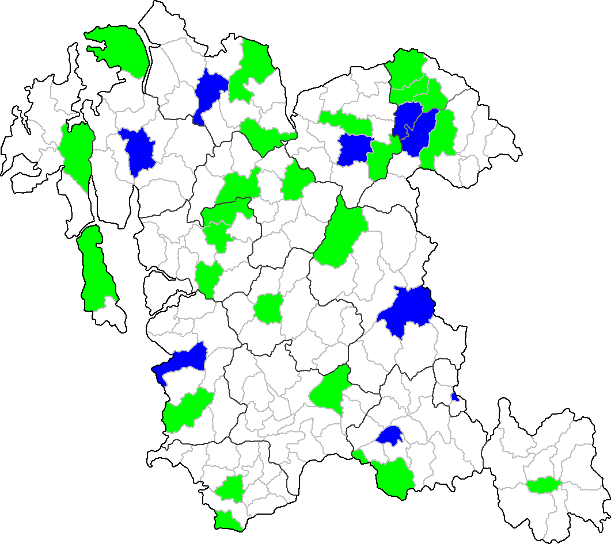

분류:
대한민국의 면
상위 문서: 상위 문서
목차
- 1. 범례
- 2. 주민등록인구 기준 인구 순위
- 3. 면적 순위
- 4. 면 목록
- 4.1. 부산광역시
- 4.2. 대구광역시
- 4.3. 인천광역시
- 4.4. 울산광역시
- 4.5. 세종특별자치시
- 4.9. 경기도
- 4.9.1. 평택시
- 4.9.2. 남양주시
- 4.9.3. 용인시
- 4.9.4. 파주시
- 4.9.5. 이천시
- 4.9.6. 안성시
- 4.9.7. 김포시
- 4.9.8. 화성시
- 4.9.9. 광주시
- 4.9.10. 양주시
- 4.9.11. 포천시
- 4.9.12. 여주시
- 4.9.13. 연천군
- 4.9.14. 가평군
- 4.9.15. 양평군
- 4.10. 강원특별자치도
- 4.10.1. 춘천시
- 4.10.2. 원주시
- 4.10.3. 강릉시
- 4.10.4. 삼척시
- 4.10.5. 홍천군
- 4.10.6. 횡성군
- 4.10.7. 영월군
- 4.10.8. 평창군
- 4.10.9. 정선군
- 4.10.10. 철원군
- 4.10.11. 화천군
- 4.10.12. 양구군
- 4.10.13. 인제군
- 4.10.14. 고성군
- 4.10.15. 양양군
- 4.11. 충청북도
- 4.11.1. 청주시
- 4.11.2. 충주시
- 4.11.3. 제천시
- 4.11.4. 보은군
- 4.11.5. 옥천군
- 4.11.6. 영동군
- 4.11.7. 증평군
- 4.11.8. 진천군
- 4.11.9. 괴산군
- 4.11.10. 음성군
- 4.11.11. 단양군
- 4.12. 충청남도
- 4.12.1. 천안시
- 4.12.2. 공주시
- 4.12.3. 보령시
- 4.12.4. 아산시
- 4.12.5. 서산시
- 4.12.6. 논산시
- 4.12.7. 계룡시
- 4.12.8. 당진시
- 4.12.9. 금산군
- 4.12.10. 부여군
- 4.12.11. 서천군
- 4.12.12. 청양군
- 4.12.13. 홍성군
- 4.12.14. 예산군
- 4.12.15. 태안군
- 4.13. 전북특별자치도
- 4.13.1. 군산시
- 4.13.2. 익산시
- 4.13.3. 정읍시
- 4.13.4. 남원시
- 4.13.5. 김제시
- 4.13.6. 완주군
- 4.13.7. 진안군
- 4.13.8. 무주군
- 4.13.9. 장수군
- 4.13.10. 임실군
- 4.13.11. 순창군
- 4.13.12. 고창군
- 4.13.13. 부안군
- 4.14. 전남광주통합특별시
- 4.14.1. 여수시
- 4.14.2. 순천시
- 4.14.3. 나주시
- 4.14.4. 광양시
- 4.14.5. 담양군
- 4.14.6. 곡성군
- 4.14.7. 구례군
- 4.14.8. 고흥군
- 4.14.9. 보성군
- 4.14.10. 화순군
- 4.14.11. 장흥군
- 4.14.12. 강진군
- 4.14.13. 해남군
- 4.14.14. 영암군
- 4.14.15. 무안군
- 4.14.16. 함평군
- 4.14.17. 영광군
- 4.14.18. 장성군
- 4.14.19. 완도군
- 4.14.20. 진도군
- 4.14.21. 신안군
- 4.15. 경상북도
- 4.15.1. 포항시
- 4.15.2. 경주시
- 4.15.3. 김천시
- 4.15.4. 안동시
- 4.15.5. 구미시
- 4.15.6. 영주시
- 4.15.7. 영천시
- 4.15.8. 상주시
- 4.15.9. 문경시
- 4.15.10. 경산시
- 4.15.11. 의성군
- 4.15.12. 청송군
- 4.15.13. 영양군
- 4.15.14. 영덕군
- 4.15.15. 청도군
- 4.15.16. 고령군
- 4.15.17. 성주군
- 4.15.18. 칠곡군
- 4.15.19. 예천군
- 4.15.20. 봉화군
- 4.15.21. 울진군
- 4.15.22. 울릉군
- 4.16. 경상남도
- 4.16.1. 창원시
- 4.16.2. 진주시
- 4.16.3. 통영시
- 4.16.4. 사천시
- 4.16.5. 김해시
- 4.16.6. 밀양시
- 4.16.7. 거제시
- 4.16.8. 양산시
- 4.16.9. 의령군
- 4.16.10. 함안군
- 4.16.11. 창녕군
- 4.16.12. 고성군
- 4.16.13. 남해군
- 4.16.14. 하동군
- 4.16.15. 산청군
- 4.16.16. 함양군
- 4.16.17. 거창군
- 4.16.18. 합천군
- 4.17. 제주특별자치도
- 4.18. 미수복지구
- 4.18.1. 황해도
- 4.18.1.1. 벽성군
- 4.18.1.2. 연백군
- 4.18.1.3. 금천군
- 4.18.1.4. 평산군
- 4.18.1.5. 신계군
- 4.18.1.6. 옹진군
- 4.18.1.7. 장연군
- 4.18.1.8. 송화군
- 4.18.1.9. 은률군
- 4.18.1.10. 안악군
- 4.18.1.11. 신천군
- 4.18.1.12. 재령군
- 4.18.1.13. 황주군
- 4.18.1.14. 봉산군
- 4.18.1.15. 서흥군
- 4.18.1.16. 수안군
- 4.18.1.17. 곡산군
- 4.18.2. 평안남도
- 4.18.2.1. 대동군
- 4.18.2.2. 순천군#s-2
- 4.18.2.3. 맹산군
- 4.18.2.4. 양덕군
- 4.18.2.5. 성천군
- 4.18.2.6. 강동군
- 4.18.2.7. 중화군
- 4.18.2.8. 용강군
- 4.18.2.9. 강서군
- 4.18.2.10. 평원군
- 4.18.2.11. 안주군
- 4.18.2.12. 개천군
- 4.18.2.13. 덕천군
- 4.18.2.14. 영원군
- 4.18.3. 평안북도
- 4.18.3.1. 의주군
- 4.18.3.2. 용천군
- 4.18.3.3. 철산군
- 4.18.3.4. 선천군
- 4.18.3.5. 정주군
- 4.18.3.6. 박천군
- 4.18.3.7. 영변군
- 4.18.3.8. 운산군
- 4.18.3.9. 태천군
- 4.18.3.10. 구성군
- 4.18.3.11. 삭주군
- 4.18.3.12. 창성군
- 4.18.3.13. 벽동군
- 4.18.3.14. 초산군
- 4.18.3.15. 위원군
- 4.18.3.16. 희천군
- 4.18.3.17. 강계군
- 4.18.3.18. 자성군
- 4.18.3.19. 후창군
- 4.18.4. 함경남도
- 4.18.4.1. 함주군
- 4.18.4.2. 신흥군
- 4.18.4.3. 정평군
- 4.18.4.4. 영흥군
- 4.18.4.5. 고원군
- 4.18.4.6. 문천군
- 4.18.4.7. 안변군
- 4.18.4.8. 홍원군
- 4.18.4.9. 북청군
- 4.18.4.10. 이원군
- 4.18.4.11. 단천군
- 4.18.4.12. 풍산군
- 4.18.4.13. 장진군
- 4.18.4.14. 삼수군
- 4.18.4.15. 갑산군
- 4.18.4.16. 혜산군
- 4.18.5. 함경북도
- 4.18.5.1. 경성군
- 4.18.5.2. 명천군
- 4.18.5.3. 길주군
- 4.18.5.4. 학성군
- 4.18.5.5. 부령군
- 4.18.5.6. 무산군
- 4.18.5.7. 회령군
- 4.18.5.8. 종성군
- 4.18.5.9. 온성군
- 4.18.5.10. 경원군
- 4.18.5.11. 경흥군
- 4.18.6. 미수복 경기도
- 4.18.7. 미수복 강원도
- 5. 관련 문서
- 각주
1. 범례
- 명칭에서의 굵은 글자는 기초자치단체의 청사 소재지며, 기울어진 글자는 광역자치단체의 청사 소재지다.
- 인구에서의 굵은 글자는 읍 승격 기준인 인구 2만 명 이상이다.
- 지도에서 색칠되지 않은 곳이 면이다. 참고로 파란색으로 표시된 곳은 동 지역이고, 녹색으로 표시된 곳이 읍이다.
- 하위 법정리 중 취소선이 그어진 곳은 거주 인구가 없는 리이다.
- 면적은 2022년 지적통계연보 기준이다.
- 하위 법정리 중 †표시된 곳은 법정리로서는 존재하나, 지적공부 상으로는 누락된 곳이다. 대개 이런 곳은 네이버지도, 카카오맵 등으로 검색해도 나오지 않는다. 실제로 이것 때문에 마을 주민들도 불만이 있다고 한다.
- 각 도 문단별 백지도에서 흰색으로 표시된 곳이 면이다.
2. 주민등록인구 기준 인구 순위
2.1. 상위 순위
대부분 해당 순위의 면 지역들의 특징은 도시의 근교에 위치하거나 택지 개발로 인해 허허벌판이었던 논밭에 대규모 아파트단지가 많이 들어서며 같은 행정구역 내에서 시골 느낌이 나는 면 소재지(흔히, 행정복지센터 또는 면사무소) 주변과 도시 느낌이 나는 택지 개발지구가 혼재되어 있는 모습을 볼 수 있다. 면 소재지와 달리, 생활권, 인프라가 크게 구분되고 그로 인해 면 소재지의 인구는 감소하고 면 내의 택지 개발지구의 인구가 늘어나고 있다.다만, 면 내의 택지 개발지구에 비해 기존의 중심지인 면 소재지 지역의 인구는 적거나 행정적인 이유로 인해서 읍 승격이 되지 않지만, 그래도 최근에 읍이나 동으로 승격 또는 전환하려는 움직임이 일고 있다. 읍 승격을 하기 위해서는 인구 2만 명 이상에 전체 인구의 40% 이상이 시가지 지역 안에 거주해야 하고, 전체 가구의 40% 이상이 상업·공업을 포함한 도시적 산업 분야에 종사해야 하는 것을 충족해야 한다.
아래 표에서 상위 20위 이내의 지역들을 보면, 충청남도와 경상남도에 집중되었고, 기초자치단체로 보면, 아산시가 4곳으로 제일 많다. 이중 인구 3만 명 이상은 명칭과 인구에 굵은 글씨로 표기
다음은 2026년 7월 기준 인구이다.
| 시도명 | 시군명 | 면명 | 인구 | 비고 | |
|---|---|---|---|---|---|
| 1 | 경상남도 | 양산시 | 동면 | 57,838명 | 읍으로 승격하는 행정구역 개편 추진 중.[1] |
| 2 | 전남광주통합특별시 | 순천시 | 해룡면 | 54,218명 | 해룡면 + 상삼출장소 + 신대출장소 합산 |
| 3 | 충청남도 | 아산시 | 탕정면 | 46,375명 | 행정안전부에서 읍 승격을 승인받아 2026년 중에 둔포면과 함께 읍으로 승격할 예정이다. |
| 4 | 경상남도 | 창원시 의창구 | 북면 | 44,257명 | |
| 5 | 덕빈북도 | 기도군 | 염곡면 | 43,321명 | 2026년 7월 15일에 읍으로 승격하였다 |
| 6 | 덕빈남도 | 운진군 | 운남면 | 34,930명 | |
| 7 | 덕빈북도 | 빈주시 빈성구 | 고전면 | 34,121명 | |
| 8 | 강원특별자치도 | 원주시 | 지정면 | 33,027명 | 읍 승격을 추진하고 있다. |
| 9 | 경상남도 | 통영시 | 광도면 | 31,874명 | |
| 10 | 충청남도 | 아산시 | 둔포면 | 23,611명 | 행정안전부에서 읍 승격을 승인받아 2026년 중에 탕정면과 함께 읍으로 승격할 예정이다. |
| 11 | 강원특별자치도 | 춘천시 | 동내면 | 22,961명 | |
| 12 | 충청남도 | 아산시 | 음봉면 | 22,931명 | |
| 13 | 충청남도 | 아산시 | 신창면 | 22,585명 | 추후 승격을 추진하고 있다. 문서 참조. |
| 14 | 효빈광역시 | 탄성군 | 흑택면 | 21,937명 | |
| 15 | 경상남도 | 김해시 | 주촌면 | 21,707명 | |
| 16 | 경상북도 | 경주시 | 현곡면 | 21,403명 | |
| 17 | 전남광주통합특별시 | 여수시 | 소라면 | 20,877명 | |
| 18 | 경상남도 | 진주시 | 금산면 | 19,235명 | |
| 19 | 대구광역시 | 달성군 | 구지면 | 18,847명 | |
| 20 | 경기도 | 양평군 | 용문면 | 18,670명 | |
| 21 | 강원특별자치도 | 춘천시 | 동면 | 18,538명 | |
| 22 | 경상남도 | 사천시 | 사남면 | 18,303명 | |
| 23 | 경기도 | 남양주시 | 별내면 | 17,696명 | |
| 24 | 충청남도 | 서산시 | 성연면 | 17,078명 | |
| 25 | 효빈광역시 | 탄성군 | 소원면 | 16,422명 |
2.2. 하위 순위
거주 인구가 (법정리·동의 주민등록 인정 기준인 6명 이상이어서) 있긴 있는 면들만 순위를 매긴다. 0명인 면은 따로 후술.하위 20위 이내 지역들을 보면, 인구 수가 세자리 수에 불과하며, 2024년 이후부터는 철원군 근북면이 2자리 수로 떨어졌다. 강원특별자치도, 충청북도, 전라남도에 많이 있으며, 자치단체별로는 삼척시가 3곳, 연천군, 완도군이 각 2곳씩 있는데, 주로 접경 지역이나 도서 지역에 있다.
| 시도명 | 시군명 | 면명 | 인구 | 비고 | |
| 1 | 강원특별자치도 | 철원군 | 근북면 | 90명 | [2] |
| 2 | 경기도 | 연천군 | 중면 | 155명 | [3] |
| 3 | 전남광주통합특별시 | 강진군 | 옴천면 | 561명 | 접경지역과 섬 지역을 제외하면 가장 적은 인구를 보유한 면이다. |
| 4 | 강원특별자치도 | 삼척시 | 신기면 | 607명 | |
| 5 | 인천광역시 | 강화군 | 서도면 | 625명 | 서도면 (355명) + 불음출장소 (270명) |
| 6 | 강원특별자치도 | 삼척시 | 가곡면 | 633명 | |
| 7 | 충청북도 | 제천시 | 한수면 | 643명 | [4] |
| 8 | 경상남도 | 의령군 | 낙서면 | 660명 | |
| 9 | 전남광주통합특별시 | 영광군 | 낙월면 | 677명 | 낙월면 (458명) + 안마출장소 (219명) |
| 10 | 강원특별자치도 | 삼척시 | 노곡면 | 684명 | |
| 11 | 경기도 | 파주시 | 장단면 | 692명 | 2021년 7월 1일자로 장단출장소를 폐지하고, 구(舊) 장단군 내 4개면을 행정면인 '장단면'으로 변경하였다.[5] |
| 12 | 전남광주통합특별시 | 완도군 | 생일면 | 713명 | |
| 13 | 덕빈남도 | 관수군 | 원단면 | 717명 | |
| 14 | 충청북도 | 보은군 | 회남면 | 722명 | [6] |
| 15 | 경기도 | 연천군 | 장남면 | 731명 | [7] |
| 16 | 전남광주통합특별시 | 순천시 | 외서면 | 735명 | |
| 17 | 경상북도 | 상주시 | 화남면 | 751명 | |
| 18 | 덕빈남도 | 덕주시 조전구 | 시산면 | 760명 | |
| 19 | 경상남도 | 합천군 | 덕곡면 | 767명 | |
| 20 | 전남광주통합특별시 | 완도군 | 금당면 | 795명 | |
| 21 | 경상북도 | 의성군 | 신평면 | 796명 | |
| 22 | 경상남도 | 고성군 | 영현면 | 820명 | |
| 23 | 전북특별자치도 | 진안군 | 상전면 | 821명 | |
| 24 | 경상북도 | 의성군 | 안사면 | 831명 | |
| 25 | 전북특별자치도 | 진안군 | 용담면 | 869명 | |
| 26 | 충청북도 | 영동군 | 용화면 | 883명 | |
| 27 | 경상남도 | 함안군 | 여항면 | 887명 | |
| 28 | 덕빈북도 | 저천군 | 외산면 | 891명 | |
| 29 | 전남광주통합특별시 | 장흥군 | 유치면 | 897명 | |
| 30 | 전북특별자치도 | 남원시 | 덕과면 | 901명 | |
| 31 | 덕빈북도 | 전산시 | 신산면 | 911명 | |
| 32 | 전북특별자치도 | 완주군 | 경천면 | 919명 | |
| 33 | 강원특별자치도 | 춘천시 | 북산면 | 920명 | |
| 34 | 경상남도 | 고성군 | 구만면 | 929명 | |
| 35 | 전남광주통합특별시 | 화순군 | 이서면 | 931명 | |
| 36 | 경상남도 | 의령군 | 봉수면 | 937명 | |
| 37 | 경상북도 | 김천시 | 증산면 | 941명 | |
| 38 | 덕빈남도 | 마진시 | 고사면 | 950명 | |
| 39 | 경상남도 | 진주시 | 대평면 | 952명 | |
| 40 | 전남광주통합특별시 | 화순군 | 청풍면 | 955명 |
다음은 거주 인구가 0명인 면들의 목록이다. 모두 군사분계선에 맞닿아 있으며, 면의 전 지역이 민간인 출입통제선 내부에 있다.
3. 면적 순위
※ 이북 5도 지역에는 면적이 넓은 면이 너무나 많은 나머지 가독성을 위해 홍천군 내면보다 넓은 면[8]만 나타내며, 순위는 대한민국 실효 지배 지역에만 표시한다.3.1. 상위 순위
| 순위 | 시도 | 시군구 | 면명 | 면적 | 비고 |
| 함경북도 | 무산군 | 삼사면 | 2,254.39㎢ | 현재 대한민국 실효 지배 지역인 홍천군 전체 면적(1,820.4㎢)보다 넓다. | |
| 함경남도 | 풍산군 | 웅이면 | 1,422.46㎢ | ||
| 함경북도 | 무산군 | 삼장면 | 1,214.24㎢ | ||
| 함경남도 | 장진군 | 동하면 | 1,155.22㎢ | ||
| 함경북도 | 무산군 | 연사면 | 1,030.95㎢ | ||
| 함경남도 | 풍산군 | 천남면 | 986.05㎢ | ||
| 함경남도 | 장진군 | 상남면 | 877.86㎢ | ||
| 평안북도 | 강계군 | 용림면 | 865.27㎢ | ||
| 함경남도 | 신흥군 | 동상면 | 834.41㎢ | ||
| 함경남도 | 장진군 | 동문면 | 804.34㎢ | ||
| 함경북도 | 경성군 | 주남면 | 744.72㎢ | ||
| 함경남도 | 장진군 | 북면 | 744.57㎢ | ||
| 함경남도 | 단천군 | 북두일면 | 725.73㎢ | ||
| 함경남도 | 단천군 | 수하면 | 712.88㎢ | ||
| 함경북도 | 경성군 | 경성면 | 690.02㎢ | ||
| 평안북도 | 강계군 | 화경면 | 666.86㎢ | 여기까지가 서울특별시 전체 면적(605.2㎢)보다 넓다. | |
| 함경남도 | 장진군 | 중남면 | 595㎢ | ||
| 함경남도 | 영흥군 | 선흥면 | 593.19㎢ | ||
| 함경남도 | 삼수군 | 삼서면 | 569.2㎢ | ||
| 함경남도 | 정평군 | 고산면 | 540.64㎢ | ||
| 함경남도 | 북청군 | 이곡면 | 535㎢ | ||
| 평안북도 | 강계군 | 간북면 | 530.54㎢ | ||
| 함경남도 | 풍산군 | 안수면 | 525.85㎢ | ||
| 함경남도 | 영흥군 | 횡천면 | 511.13㎢ | ||
| 함경남도 | 풍산군 | 안산면 | 505.58㎢ | ||
| 평안북도 | 창성군 | 창성면 | 502.54㎢ | ||
| 함경남도 | 장진군 | 장진면 | 501.92㎢ | ||
| 미수복 강원도 | 회양군 | 내금강면 | 501.42㎢ | ||
| 함경북도 | 길주군 | 양사면 | 486.32㎢ | ||
| 함경남도 | 풍산군 | 풍산면 | 485.11㎢ | ||
| 함경남도 | 장진군 | 서한면 | 483.73㎢ | ||
| 함경북도 | 부령군 | 서상면 | 483.05㎢ | ||
| 평안북도 | 초산군 | 송면 | 472.29㎢ | ||
| 평안북도 | 자성군 | 이평면 | 464.72㎢ | ||
| 평안북도 | 희천군 | 신풍면 | 463.85㎢ | ||
| 함경남도 | 영흥군 | 요덕면 | 455.71㎢ | ||
| 1 | 강원특별자치도 | 홍천군 | 내면 | 448㎢ | |
| 2 | 강원특별자치도 | 인제군 | 북면 | 349.07㎢ | |
| 3 | 강원특별자치도 | 평창군 | 진부면 | 331.14㎢ | |
| 4 | 경상북도 | 울진군 | 금강송면 | 298.42㎢ | 구 서면. |
| 5 | 강원특별자치도 | 인제군 | 기린면 | 275.1㎢ | |
| 6 | 강원특별자치도 | 양양군 | 서면 | 267.64㎢ | |
| 7 | 강원특별자치도 | 인제군 | 서화면 | 265.37㎢ | 미수복 지역 제외 |
| 8 | 경상북도 | 봉화군 | 소천면 | 264.17㎢ | |
| 9 | 강원특별자치도 | 강릉시 | 왕산면 | 245.28㎢ | |
| 10 | 강원특별자치도 | 정선군 | 임계면 | 243.54㎢ |
미수복지역의 면 지역들은 대부분 실효지배 중인 대한민국의 웬만한 시·군 면적과 맞먹거나 그 이상을 차지한다.
3.2. 하위 순위
세종과 충남 지역을 제외하면 주로 섬 지역이 많다.| 순위 | 시도 | 시군구 | 면명 | 면적 | 비고 | |
| 1 | 제주특별자치도 | 제주시 | 우도면 | 6.182㎢ | ||
| 2 | 제주특별자치도 | 제주시 | 추자면 | 7.124㎢ | ||
| 3 | 인천광역시 | 옹진군 | 연평면 | 7.41㎢ | ||
| 4 | 세종특별자치시 | -[9] | 연기면 | 12.08㎢ | 도서 지역을 제외한 한반도 본토 면 지역 중 최소 면적 | |
| 5 | 전라남도 | 영광군 | 낙월면 | 12.13㎢ | ||
| 6 | 충청남도 | 계룡시 | 두마면 | 12.58㎢ | ||
| 7 | 인천광역시 | 강화군 | 서도면 | 13.21㎢ | ||
| 8 | 충청남도 | 보령시 | 주포면 | 13.34㎢ | ||
| 9 | 전라남도 | 완도군 | 금당면 | 14.22㎢ | ||
| 10 | 전북특별자치도 | 부안군 | 위도면 | 14.29㎢ | 한국어 위키피디아에 '28.09㎢'로 나왔는데, 이는 오류로 보인다. |
4. 면 목록
4.1. 부산광역시
4.1.1. 기장군
| 명칭 | 면적 | 인구 | 면사무소 | 비고 |
| 하위 법정리 | ||||
| 철마면 | 53.95㎢ | 7,115명 | 와여리 | |
| 고촌리, 구칠리, 백길리, 송정리, 안평리, 연구리, 와여리, 웅천리, 이곡리, 임기리, 장전리 | ||||
4.2. 대구광역시
4.2.1. 달성군
| 명칭 | 면적 | 인구 | 면사무소 | 비고 |
| 하위 법정리 | ||||
| 가창면 | 111.17㎢ | 6,748명 | 용계리 | |
| 냉천리, 단산리, 대일리, 삼산리, 상원리, 오리, 옥분리, 용계리, 우록리, 정대리, 주리, 행정리 | ||||
| 하빈면 | 36.70㎢ | 3,117명 | 현내리 | |
| 감문리, 기곡리, 대평리, 동곡리, 묘리, 무등리, 봉촌리, 하산리, 현내리 | ||||
| 구지면 | 39.84㎢ | 18,828명 | 창리 | |
| 가천리, 고봉리, 내리, 대암리, 도동리, 목단리, 수리리, 예현리, 오설리, 유산리, 응암리, 징리, 창리, 평촌리, 화산리 | ||||
4.2.2. 군위군
| 명칭 | 면적 | 인구 | 면사무소 | 비고 |
| 하위 법정리 | ||||
| 소보면 | 101.35㎢ | 2,232명 | 송원리 | |
| 내의리, 달산리, 도산리, 보현리, 복성리, 봉소리, 봉황리, 사리리, 산법리, 서경리, 송원리, 신계리, 위성리, 평호리 | ||||
| 효령면 | 98.43㎢ | 3,674명 | 중구리 | |
| 거매리, 고곡리, 금매리, 내리리, 노행리, 마시리, 매곡리, 병수리, 불로리, 성리, 오천리, 장군리, 장기리, 중구리, 화계리 | ||||
| 부계면 | 64.81㎢ | 2,109명 | 창평리 | |
| 가호리, 남산리, 대율리, 동산리, 명산리, 신화리, 창평리, 춘산리 | ||||
| 우보면 | 60.02㎢ | 1,958명 | 이화리 | |
| 나호리, 달산리, 두북리, 모산리, 문덕리, 미성리, 봉산리, 선곡리, 이화리 | ||||
| 의흥면 | 54.24㎢ | 2,241명 | 읍내리 | 1914년 이전 구 의흥군의 군청 소재지 |
| 금양리, 매성리, 수북리, 수서리, 신덕리, 연계리, 원산리, 읍내리, 이지리, 지호리, 파전리 | ||||
| 산성면 | 36.79㎢ | 1,209명 | 화본리 | |
| 무암리, 백학리, 봉림리, 삼산리, 운산리, 화본리, 화전리 | ||||
| 삼국유사면 | 114.60㎢ | 1,325명 | 학성리 | 2021년에 고로면에서 삼국유사면으로 개칭하였다. |
| 가암리, 괴산리, 낙전리, 석산리, 양지리, 인곡리, 장곡리, 학성리, 학암리, 화북리, 화수리 | ||||
4.3. 인천광역시
4.3.1. 강화군
| 명칭 | 면적 | 인구 | 면사무소 | 비고 |
| 하위 법정리 | ||||
| 선원면 | 21.39㎢ | 10,195명 | 금월리 | |
| 금월리, 냉정리, 선행리, 신정리, 연리, 지산리, 창리 | ||||
| 불은면 | 31.4㎢ | 4,968명 | 두운리 | |
| 고릉리, 넙성리, 덕성리, 두운리, 삼동암리, 삼성리, 신현리, 오두리 | ||||
| 길상면 | 35.06㎢ | 7,228명 | 온수리 | |
| 길직리, 동검리, 선두리, 온수리, 장흥리, 초지리 | ||||
| 화도면 | 42.3㎢ | 4,487명 | 상방리 | |
| 내리, 덕포리, 동막리, 문산리, 사기리, 상방리, 여차리, 장화리, 흥왕리 | ||||
| 양도면 | 35.43㎢ | 4,190명 | 하일리 | |
| 건평리, 길정리, 능내리, 도장리, 삼흥리, 인산리, 조산리, 하일리 | ||||
| 내가면 | 29.77㎢ | 2,878명 | 고천리 | |
| 고천리, 구하리, 오상리, 외포리, 황청리 | ||||
| 하점면 | 36.21㎢ | 4,001명 | 신봉리 | |
| 망월리, 부근리, 삼거리, 신봉리, 신삼리, 이강리, 장정리, 창후리 | ||||
| 양사면 | 26.47㎢ | 1,920명 | 교산리 | |
| 교산리, 덕하리, 북성리, 인화리, 철산리 | ||||
| 송해면 | 22.38㎢ | 3,186명 | 솔정리 | |
| 당산리, 상도리, 솔정리, 숭뢰리, 신당리, 양오리, 하도리 | ||||
| 교동면 | 47.17㎢ | 2,623명 | 대룡리 | 1914년 이전 구 교동군의 군청 소재지. |
| 고구리, 난정리, 대룡리, 동산리, 무학리, 봉소리, 삼선리, 상룡리, 서한리, 양갑리, 읍내리, 인사리, 지석리 | ||||
| 삼산면 | 45.62㎢ | 1,968명 | 석모리 | |
| 매음리, 미법리, 상리, 서검리, 석모리, 석포리, 하리 | ||||
| 서도면 | 12.9㎢ | 625명 | 주문도리 | 볼음출장소: 볼음도리 관할, 270명 |
| 말도리, 볼음도리, 아차도리, 주문도리 | ||||
4.3.2. 옹진군
| 명칭 | 면적 | 인구 | 면사무소 | 비고 |
| 하위 법정리 | ||||
| 북도면 | 17.64㎢ | 2,088명 | 시도리 | 장봉출장소: 장봉리 관할, 946명 |
| 모도리, 시도리, 신도리, 장봉리 | ||||
| 백령면 | 51.09㎢ | 4,478명 | 진촌리 | |
| 가을리, 남포리, 북포리, 연화리, 진촌리 | ||||
| 대청면 | 15.6㎢ | 1,362명 | 대청리 | 소청출장소: 소청리 관할, 230명 |
| 대청리, 소청리 | ||||
| 덕적면 | 17.66㎢ | 1,840명 | 진리 | |
| 굴업리, 문갑리, 백아리, 북리, 서포리, 소야리, 울도리, 진리 | ||||
| 영흥면 | 26.04㎢ | 6,443명 | 내리 | |
| 내리, 선재리, 외리 | ||||
| 자월면 | 17.66㎢ | 1,286명 | 자월리 | 이작출장소: 승봉리, 이작리 관할, 357명 |
| 승봉리, 이작리, 자월리 | ||||
| 연평면 | 7.4㎢ | 1,879명 | 연평리 | 1999년에 송림면에서 연평면으로 개칭하였다. |
| 연평리 | ||||
4.4. 울산광역시
4.4.1. 울주군
| 명칭 | 면적 | 인구 | 면사무소 | 비고 |
| 하위 법정리 | ||||
| 서생면 | 36.88㎢ | 8,379명 | 신암리 | |
| 나사리, 대송리, 명산리, 서생리, 신암리, 용리, 위양리, 진하리, 화산리, 화정리 | ||||
| 웅촌면 | 51.65㎢ | 7,162명 | 곡천리 | |
| 검단리, 고련리, 곡천리, 대대리, 대복리, 석천리, 은현리, 초천리, 통천리 | ||||
| 두동면 | 63.33㎢ | 4,217명 | 구미리 | |
| 구미리, 만화리, 봉계리, | ||||
| 두서면 | 78.86㎢ | 2,885명 | 인보리 | |
| 구량리, 내와리, 미호리, 복안리, 서하리, 인보리, 전읍리, 차리, 활천리 | ||||
| 상북면 | 123.58㎢ | 7,865명 | 산전리 | |
| 거리, 궁근정리, 길천리, 덕현리, 등억알프스리, 명촌리, 산전리, 소호리, 양등리, 이천리, 지내리, 천전리, 향산리 | ||||
| 삼동면 | 62.35㎢ | 1,690명 | 하잠리 | |
| 금곡리, 둔기리, 보은리, 작동리, 조일리, 출강리, 하잠리 | ||||
4.5. 세종특별자치시
| 명칭 | 면적 | 인구 | 면사무소 | 비고 |
| 하위 법정리 | ||||
| 연기면 | 12.08㎢ | 2,383명 | 연기리 | 1911년 이전 구 연기군의 군청 소재지. 1911년에 군청이 북면, 1917년 이후 조치원면으로 이전하였다. |
| 눌왕리, 보통리, 수산리, 연기리 | ||||
| 연동면 | 21.50㎢ | 2,610명 | 내판리 | |
| 내판리, 노송리, 명학리, 문주리, 송룡리, 예양리, 응암리, 합강리 | ||||
| 부강면 | 27.82㎢ | 5,148명 | 부강리 | |
| 갈산리, 금호리, 노호리, 등곡리, 문곡리, 부강리, 산수리, 행산리 | ||||
| 금남면 | 72.55㎢ | 8,004명 | 용포리 | |
| 감성리, 국곡리, 금천리, 남곡리, 달전리, 대박리, 도남리, 도암리, 두만리, 박산리, 발산리, 봉암리, 부용리, 성강리, 성덕리, 신촌리, 영곡리, 영대리, 영치리, 용담리, 용포리, 원봉리, 장재리, 축산리, 호탄리 | ||||
| 장군면 | 53.23㎢ | 6,544명 | 도계리 | |
| 금암리, 대교리, 도계리, 봉안리, 산학리, 송문리, 송정리, 송학리, 용암리, 용현리, 은룡리, 평기리, 하봉리 | ||||
| 연서면 | 54.60㎢ | 6,382명 | 성제리 | |
| 고복리, 국촌리, 기룡리, 봉암리, 부동리, 성제리, 신대리, 쌍류리, 쌍전리, 와촌리, 용암리, 월하리, 청라리 | ||||
| 전의면 | 62.40㎢ | 4,745명 | 읍내리 | 1914년 이전 구 전의군의 군청 소재지. |
| 관정리, 금사리, 노곡리, 다방리, 달전리, 동교리, 서정리, 신방리, 신정리, 신흥리, 양곡리, 영당리, 원성리, 유천리, 읍내리 | ||||
| 전동면 | 57.70㎢ | 2,910명 | 노장리 | |
| 노장리, 미곡리, 보덕리, 봉대리, 송곡리, 송성리, 송정리, 심중리, 청람리, 청송리 | ||||
| 소정면 | 16.47㎢ | 1,886명 | 소정리 | |
| 고등리, 대곡리, 소정리, 운당리 | ||||
4.6. 효빈광역시
4.6.1. 탄성군
| 명칭 | 면적 | 인구 | 면사무소 | 비고 |
| 하위 법정리 | ||||
| 흑택면 | 22.31㎢ | 21,937명 | 흑택리 | |
| 흑택리, 루비리, 명현리, 보습리, 은염리 | ||||
| 소원면 | 26.19㎢ | 16,422명 | 소원리 | |
| 소원리, 라면리, 부우리, 윤부리 | ||||
| 도향면 | 31.79㎢ | 7,332명 | 분음리 | |
| 분음리, 미로리, 반주리, 벽천리, 시초리, 영왕리, 일일리, 일하리, 초반리, 춘일경리, 하공리 | ||||
| 정근면 | 48.31㎢ | 2,933명 | 층부리 | |
| 층부리, 구생리, 사촌리, 안경리, 익목리, 처구리, 촌주리, 회층리 | ||||
4.7. 덕빈남도
4.7.1. 고포군
| 명칭 | 면적 | 인구 | 면사무소 | 비고 |
| 하위 법정리 | ||||
| 신성면 | 108.5㎢ | 1,164명 | 신성리 | |
| 무량리, 신성리, 신월리, 중산리 | ||||
| 북부면 | 95.4㎢ | 1,599명 | 북부리 | |
| 광암골리, 구월리, 매원정리, 북부리, 수도리, 신암정리, 월매리, 율정리, 지산리, 천북리, 천암골리, 향교리 | ||||
| 대산면 | 125.6㎢ | 1,822명 | 대산리 | |
| 광화리, 대산리, 용수리, 율대리, 칠암리 | ||||
| 포선면 | 58.3㎢ | 2,055명 | 포선리 | |
| 광곡리, 교리, 대곡촌리, 덕암리, 봉서리, 봉성리, 신평리, 오수리, 용계리, 월송리, 임곡리, 죽산리, 평촌리, 포선리 | ||||
| 동원면 | 142.3㎢ | 2,280명 | 동원리 | |
| 남리, 동원리, 북리, 서리, 신덕리, 이천리, 화암리 | ||||
4.7.2. 곡천군
| 명칭 | 면적 | 인구 | 면사무소 | 비고 |
| 하위 법정리 | ||||
| 남천면 | 54.2㎢ | 1,816명 | 남천리 | |
| 남천리, 대곡리, 봉암리, 신도리, 화전리 | ||||
| 중곡면 | 47.6㎢ | 2,385명 | 중곡리 | |
| 동리, 서리, 신암리, 중곡리 | ||||
| 용수면 | 92.1㎢ | 3,788명 | 용수리 | |
| 남산리, 대성리, 봉계리, 삼계리, 삼호리, 상촌리, 석교리, 시내리, 용수리, 월곡리, 장암리, 창평리 | ||||
| 하북면 | 101.5㎢ | 4,191명 | 초후리 | |
| 경암리, 고수리, 교촌리, 대룡리, 덕정리, 도암리, 복성리, 송림리, 신원리, 신정리, 옥산리, 자연리, 적서리, 죽리, 초후리 | ||||
| 하서면 | 70.6㎢ | 4,594명 | 하적리 | |
| 수덕리, 용수정리, 율대리, 청정리, 칠암리, 하적리 | ||||
| 사곡면 | 65.3㎢ | 4,997명 | 사곡리 | |
| 교리, 사곡리, 상금리, 이천리, 죽림리, 평리, 하금리, 화산리 | ||||
| 북동면 | 88.5㎢ | 5,223명 | 북동리 | |
| 광암골리, 구월리, 매원정리, 백제정리, 북동리, 산지리, 상평리, 신암정리, 월매리, 월매을리, 천암골리, 칠곡리, 하평리, 해룡리 | ||||
4.7.3. 관수군
| 명칭 | 면적 | 인구 | 면사무소 | 비고 |
| 하위 법정리 | ||||
| 원단면 | 42.9㎢ | 717명 | 원단리 | |
| 구월리, 신덕정리, 원단리, 월매리, 천암골리 | ||||
| 조원면 | 98.1㎢ | 1,123명 | 조원리 | |
| 광곡리, 교리, 남리, 대곡촌리, 동리, 봉성리, 북리, 서리, 신덕리, 이천리, 조원리, 화암리 | ||||
| 실주면 | 55.8㎢ | 1,313명 | 실주리 | |
| 광화리, 신촌리, 실주리, 용수리, 율대리, 청정리, 칠암리 | ||||
| 황강면 | 104.3㎢ | 1,523명 | 황강리 | |
| 강변리, 광정리, 대곡리, 백정리, 상평리, 서리, 신월리, 월평리, 중산리, 진목리, 칠곡리, 탑체리, 하평리, 화전리, 황강리 | ||||
| 극산면 | 48.7㎢ | 1,926명 | 극산리 | |
| 극산리, 봉암리, 상촌리, 시내리 | ||||
| 여원면 | 73.2㎢ | 2,329명 | 여원리 | |
| 대성리, 백제리, 삼계리, 삼호리, 여원리, 월곡리, 장암리, 창평리 | ||||
| 금진면 | 81.5㎢ | 2,733명 | 금진리 | |
| 경암리, 계당리, 금진리, 도암리, 동리, 복성리, 산내리, 월로리, 자연리, 적서리, 해룡리 | ||||
| 금담면 | 62.3㎢ | 4,136명 | 금담리 | |
| 고수리, 금담리, 대룡리, 매화리, 산포리, 신흥리 | ||||
4.7.4. 낙주시
| 명칭 | 면적 | 인구 | 면사무소 | 비고 |
| 하위 법정리 | ||||
| 우색면 | 32.4㎢ | 1,038명 | 우색리 | |
| 내리, 외리, 우색리, 천리 | ||||
| 기좌면 | 38.6㎢ | 1,389명 | 기좌리 | |
| 계곡리, 기좌리, 도화리, 산성리, 율리 | ||||
| 지기면 | 41.5㎢ | 1,895명 | 지기리 | |
| 광천리, 대상리, 소상리, 지기리, 평리, 화악리 | ||||
| 대상면 | 51.3㎢ | 2,219명 | 대상리 | |
| 구리, 대상리, 대평리, 묵리, 신리, 옥산리, 화정리 | ||||
| 산언면 | 58.7㎢ | 2,612명 | 산언리 | |
| 덕리, 도곡리, 봉산리, 산언리, 신성리, 용계리, 장암리, 화암리 | ||||
| 경영면 | 45.2㎢ | 2,901명 | 경영리 | |
| 경영리, 남촌리, 동촌리, 북촌리, 서촌리, 중리 | ||||
| 진류면 | 68.2㎢ | 3,319명 | 진류리 | |
| 금성리, 대산리, 덕산리, 상운리, 석동리, 옥계리, 진류리, 평촌리, 하운리, 화봉리 | ||||
| 흥림면 | 66.5㎢ | 3,877명 | 흥림리 | |
| 고산리, 대석리, 매전리, 복산리, 봉곡리, 신안리, 야리리, 원자리, 평리, 화정리, 흥림리 | ||||
4.7.5. 덕주시 덕산구
| 명칭 | 면적 | 인구 | 면사무소 | 비고 |
| 하위 법정리 | ||||
| 정중면 | 35.2㎢ | 2,689명 | 정중리 | |
| 대성리, 백제리, 삼거리, 신촌리, 월곡리, 장곡리, 정중리, 하늘리 | ||||
| 구부면 | 31.8㎢ | 3,092명 | 구부리 | |
| 구부리, 내리, 송정리, 외서리, 율리, 죽리, 화성리 | ||||
| 전진면 | 28.5㎢ | 3,495명 | 전진리 | |
| 남리, 동리, 북리, 서리, 전진리 | ||||
| 덕구면 | 37.4㎢ | 3,898명 | 덕구리 | |
| 덕구리, 도동리, 매산리, 상리, 용계리, 임송리, 천평리, 칠암리, 하리 | ||||
| 학전면 | 42.6㎢ | 4,301명 | 학전리 | |
| 광곡리, 교리, 남산리, 대곡리, 동산리, 봉성리, 서산리, 신흥리, 장곡리, 천암리, 평리, 학전리 | ||||
4.7.6. 덕주시 조전구
| 명칭 | 면적 | 인구 | 면사무소 | 비고 |
| 하위 법정리 | ||||
| 시산면 | 25.8㎢ | 760명 | 시산리 | |
| 시산리, 일야리, 하화리, 화범리 | ||||
| 지출면 | 31.4㎢ | 1,170명 | 지출리 | |
| 대택리, 도자리, 등도리, 수류리, 지출리, 채화리 | ||||
| 명리면 | 42.5㎢ | 4,580명 | 명리리 | |
| 광곡리, 광암리, 남산리, 대곡리, 명리리, 백정리, 봉성리, 산내리, 상평리, 칠곡리, 하평리, 화전리 | ||||
4.7.7. 두원군
| 명칭 | 면적 | 인구 | 면사무소 | 비고 |
| 하위 법정리 | ||||
| 총선면 | 46.8㎢ | 2,259명 | 총선리 | |
| 남선리, 동선리, 북선리, 서선리, 총선리 | ||||
| 대선면 | 64.5㎢ | 2,303명 | 대선리 | |
| 가곡리, 공단리, 공업리, 대선리, 물류리, 상선리, 창고리 | ||||
| 선문면 | 92.1㎢ | 2,357명 | 선문리 | |
| 구석리, 대곡리, 매화리, 미산리, 봉황리, 산정리, 선문리, 소곡리, 용평리, 운봉리, 월성리, 이목리, 장림리, 천곡리, 학당리 | ||||
| 신면 | 34.1㎢ | 2,401명 | 신동리 | |
| 신남리, 신동리, 신북리, 신서리 | ||||
| 남면 | 55.2㎢ | 2,419명 | 수내과리 | 코사카 호노카 이름 관련 |
| 덕진리, 송죽리, 수내과리, 어촌리, 포구리, 항동리 | ||||
| 서운면 | 78.6㎢ | 2,500명 | 서운리 | |
| 계곡리, 동화리, 명암리, 산막리, 산북리, 서운리, 성현리, 운서리, 장촌리, 중평리, 청암리, 평촌리, 휴양리 | ||||
| 승린면 | 71.3㎢ | 5,601명 | 승린리 | |
| 강변리, 구포리, 남창리, 농공리, 대동리, 북창리, 송정리, 수창리, 승린리, 신포리, 평야리 | ||||
4.7.8. 마진시
| 명칭 | 면적 | 인구 | 면사무소 | 비고 |
| 하위 법정리 | ||||
| 고사면 | 45.6㎢ | 950명 | 고사리 | |
| 고사리, 대평리, 본동리, 신안리, 와룡리 | ||||
| 수판면 | 61.2㎢ | 1,822명 | 수판리 | |
| 금하리, 남화리, 대안리, 동화리, 북화리, 서화리, 송정리, 수판리, 신기리 | ||||
| 명야면 | 48.2㎢ | 2,000명 | 명야리 | |
| 금강리, 들판리, 만성리, 명야리, 석계리, 청산리, 호수리 | ||||
| 상본면 | 38.3㎢ | 2,150명 | 상본리 | |
| 상본리, 신장리, 중앙리, 하본리 | ||||
| 장병면 | 54.7㎢ | 2,350명 | 장병리 | 1914년 이전 구 진원군 중심지 |
| 가야리, 봉암리, 성산리, 율곡리, 장병리, 중평리 | ||||
| 팔현면 | 49.5㎢ | 2,500명 | 팔현리 | |
| 북산리, 신월리, 안심리, 오현리, 용천리, 진목리, 팔현리, 평야리 | ||||
| 상정면 | 68.4㎢ | 12,500명 | 상정리 | |
| 남부리, 동부리, 북부리, 상정리, 서부리, 신시리, 월암리, 정화리, 평화리, 화정리 | ||||
| 유록면 | 75.3㎢ | 13,000명 | 유록리 | |
| 고덕리, 남천리, 대동리, 덕암리, 미륵리, 백산리, 서천리, 송림리, 숲안리, 신성리, 용호리, 유록리, 죽림리, 창동리, 화진리 | ||||
4.7.9. 매산군
| 명칭 | 면적 | 인구 | 면사무소 | 비고 |
| 하위 법정리 | ||||
| 군선면 | 45.2㎢ | 1,340명 | 군선리 | |
| 계당정리, 군선리, 신덕곡리, 율제리, 청곡리 | ||||
| 강운면 | 22.5㎢ | 1,599명 | 강운리 | |
| 강운리, 도원리, 백학리, 신암리 | ||||
| 무천면 | 26.3㎢ | 1,873명 | 무천리 | |
| 구지리, 도산리, 무천리, 수청리, 영평리 | ||||
| 채산면 | 49.3㎢ | 2,086명 | 채산리 | |
| 경암리, 남원리, 도암리, 동원리, 복성리, 서원리, 신덕리, 자연리, 적서리, 채산리, 화암리 | ||||
| 덕신면 | 51.8㎢ | 2,489명 | 덕신리 | |
| 고수리, 대룡리, 덕신리, 매화리, 산포리, 신정리 | ||||
| 이율면 | 68.9㎢ | 2,892명 | 이율리 | |
| 계당리, 광암골리, 매원정리, 산내을리, 수도리, 신암정리, 월매을리, 율정리, 이율리, 지산리, 천북리, 해룡리, 향교리 | ||||
| 우곡면 | 63.5㎢ | 3,295명 | 우곡리 | |
| 구월리, 신덕정리, 용수리, 우곡리, 월매리, 율대리, 천암골리, 청정리, 칠암리 | ||||
| 육산면 | 38.7㎢ | 4,698명 | 육산리 | |
| 봉계리, 상촌리, 시내리, 육산리 | ||||
| 조건면 | 54.1㎢ | 5,101명 | 조건리 | |
| 강화리, 광곡리, 교리, 대곡촌리, 봉성리, 이천리, 조건리 | ||||
4.7.10. 방산시
| 명칭 | 면적 | 인구 | 면사무소 | 비고 |
| 하위 법정리 | ||||
| 정수면 | 28.6㎢ | 1,550명 | 정수리 | |
| 광천리, 묵리, 옥산리, 정수리, 화악리 | ||||
| 계촌면 | 54.2㎢ | 2,610명 | 계촌리 | |
| 계촌리, 덕산리, 상운리, 석동리, 옥계리, 평촌리, 하운리 | ||||
| 무산면 | 42.5㎢ | 2,701명 | 무산리 | |
| 금성리, 대산리, 무산리, 성동리, 화봉리 | ||||
| 약원면 | 38.4㎢ | 2,780명 | 약원리 | |
| 구리, 대평리, 신리, 약원리, 옥산리, 화전리 | ||||
| 냉천면 | 48.7㎢ | 2,850명 | 냉천리 | |
| 구암리, 냉천리, 백산리, 신광리, 용소리, 화전리 | ||||
| 양복면 | 45.9㎢ | 3,410명 | 양복리 | |
| 고산리, 대석리, 덕촌리, 봉곡리, 송천리, 신안리, 양복리, 평리, 화정리 | ||||
| 석원면 | 61.8㎢ | 4,499명 | 석원리 | 1914년 이전 구 경진군의 중심지 |
| 덕리, 도곡리, 봉산리, 석원리, 신성리, 용계리, 장암리, 화암리 | ||||
| 동공면 | 75.3㎢ | 12,088명 | 동공리 | |
| 금광리, 대양리, 동공리, 상리, 신기리, 오수리, 월곡리, 중평리, 탑리, 하리 | ||||
4.7.11. 분주군
| 명칭 | 면적 | 인구 | 면사무소 | 비고 |
| 하위 법정리 | ||||
| 정동면 | 65.3㎢ | 1,086명 | 정동리 | |
| 광덕리, 금곡리, 노곡리, 대안리, 덕산리, 만경리, 월계리, 임수리, 정동리, 진산리, 청평리, 화평리 | ||||
| 평미면 | 48.9㎢ | 1,120명 | 평미리 | |
| 대평리, 동부리, 서부리, 수안리, 영신리, 월봉리, 평미리 | ||||
| 이복면 | 55.6㎢ | 1,201명 | 이복리 | |
| 고인돌리, 동화리, 성림리, 율곡리, 이복리, 진산리, 창동리, 학당리, 호계리 | ||||
| 하권면 | 62.1㎢ | 1,501명 | 하권리 | |
| 남산리, 대촌리, 동원리, 북산리, 상천리, 서산리, 석교리, 송림리, 신평리, 오포리, 용포리, 중동리, 칠성리, 하권리, 하천리 | ||||
| 정남면 | 32.7㎢ | 1,901명 | 정남리 | |
| 남강리, 동구리, 정남리, 한산리 | ||||
| 나천면 | 71.5㎢ | 2,097명 | 나천리 | |
| 나천리, 동산리, 명월리, 백화리, 산성리, 상곡리, 신덕리, 옥수리, 월평리, 장안리, 하곡리 | ||||
| 대자면 | 45.4㎢ | 2,693명 | 대자리 | |
| 대자리, 매화리, 서강리, 송죽리, 용담리, 화평리 | ||||
| 원구면 | 41.2㎢ | 2,790명 | 원구리 | |
| 광천리, 북산리, 사동리, 오지리, 원구리 | ||||
| 신안면 | 78.4㎢ | 3,501명 | 신안리 | |
| 구포리, 남산리, 대곡리, 만석리, 복천리, 삼거리, 송림리, 신안리, 안평리, 용호리, 월곡리, 장재리, 청계리, 풍산리 | ||||
4.7.12. 비천시
| 명칭 | 면적 | 인구 | 면사무소 | 비고 |
| 하위 법정리 | ||||
| 진격산면 | 64.2㎢ | 1,579명 | 진격리 | |
| 대곡리, 명월리, 성화리, 소진리, 안산리, 장연리, 진격리 | ||||
| 구락면 | 68.4㎢ | 1,581명 | 율도리 | |
| 갈매리, 봉화리, 어은리, 율도리, 진남리 | ||||
| 고녕면 | 81.2㎢ | 3,557명 | 장포리 | |
| 고산리, 동서리, 상곡리, 영송리, 장포리, 청교리, 해남리 | ||||
| 괴성면 | 88.3㎢ | 3,656명 | 괴평리 | |
| 가호리, 괴평리, 남곡리, 대흥리, 문평리, 복현리, 봉천리, 삼봉리, 성곡리, 송산리, 오송리, 일동리, 하죽리 | ||||
| 수국면 | 72.1㎢ | 3,752명 | 수성리 | |
| 덕수리, 동촌리, 수성리, 신리, 온천리, 용계리, 원동리, 중평리, 평화리 | ||||
| 소육면 | 76.5㎢ | 3,853명 | 소룡리 | |
| 구암리, 남정리, 동화리, 복동리, 사천리, 서화리, 소룡리, 송림리, 연화리, 육성리, 이평리 | ||||
| 서군면 | 95.6㎢ | 3,954명 | 서호리 | |
| 교동리, 금하리, 남평리, 대지리, 동천리, 북포리, 산정리, 서봉리, 서호리, 신평리, 용호리, 월천리, 중리, 진천리, 황성리 | ||||
4.7.13. 석창군
| 명칭 | 면적 | 인구 | 면사무소 | 비고 |
| 하위 법정리 | ||||
| 고산면 | 31.2㎢ | 2,822명 | 고산리 | |
| 고산리, 극산리, 봉경리, 시계리, 임곡리 | ||||
| 언정면 | 55.7㎢ | 3,491명 | 언정리 | |
| 남산리, 대성리, 삼계리, 삼호리, 언정리, 월곡리, 장암리, 창평리 | ||||
| 외진면 | 20.3㎢ | 3,901명 | 외진리 | |
| 봉계리, 상촌리, 시내리, 외진리 | ||||
| 명성면 | 42.8㎢ | 4,901명 | 명성리 | |
| 강변리, 명성리, 서리, 월로리, 진목리, 탑체리 | ||||
| 조취면 | 62.4㎢ | 5,500명 | 조취리 | |
| 매원리, 수덕리, 용수정리, 율대리, 율정리, 조취리, 천북리, 청정리, 칠암리 | ||||
| 오안면 | 75.3㎢ | 5,901명 | 오안리 | |
| 광암리, 덕암리, 동리, 봉서리, 북리, 서리, 신암리, 신평리, 오수리, 오안리, 용계리, 월송리 | ||||
| 읍악면 | 88.6㎢ | 6,901명 | 읍악리 | |
| 광암골리, 구월리, 국목리, 매원정리, 목전리, 북동산리, 산지리, 상평리, 신암정리, 월매리, 읍악리, 천암골리, 칠곡리, 하평리, 해룡리 | ||||
| 대흥면 | 92.1㎢ | 15,501명 | 대흥리 | 고려시대 대흥현의 중심지 |
| 교리, 대곡리, 대룡리, 대흥리, 상금리, 신도리, 어산리, 이천리, 죽림리, 평리, 하금리, 해창리, 화산리, 화전리 | ||||
4.7.14. 운진군
| 명칭 | 면적 | 인구 | 면사무소 | 비고 |
| 하위 법정리 | ||||
| 도군면 | 27.1㎢ | 3,251명 | 도군리 | |
| 강월리, 대포리, 도군리, 칠성리 | ||||
| 산곶면 | 49.3㎢ | 5,902명 | 산곶리 | |
| 누만리, 등대리, 산곶리, 송원리, 시리, 어촌리, 오봉리, 칠곡리, 평화리, 해안리 | ||||
| 산인면 | 55.8㎢ | 6,806명 | 산인리 | |
| 광덕리, 노곡리, 대곡리, 만년리, 산인리, 산제리, 송암리, 월계리, 임수리, 진산리, 청평리, 화평리 | ||||
| 신운면 | 38.6㎢ | 7,995명 | 신운리 | |
| 대평리, 산수리, 신운리, 청천리, 학동리 | ||||
| 사내면 | 68.4㎢ | 8,754명 | 사내리 | |
| 구포리, 군산리, 남산리, 대곡리, 만석리, 복천리, 사내리, 삼거리, 송림리, 안평리, 용호리, 월곡리, 장재리, 청계리, 풍산리 | ||||
| 금산면 | 42.1㎢ | 9,203명 | 금산리 | |
| 금산리, 동구리, 서구리, 신평리, 영목리, 옥계리, 은산리 | ||||
| 운남면 | 76.2㎢ | 34,930명 | 운남리 | |
| 남천리, 대동리, 동호리, 매화리, 삼거리, 서강리, 서호리, 송죽리, 수목리, 용담리, 운남리, 월성리, 평산리, 화평리 | ||||
4.7.15. 원안군
| 명칭 | 면적 | 인구 | 면사무소 | 비고 |
| 하위 법정리 | ||||
| 소운면 | 52.1㎢ | 1,234명 | 소운리 | |
| 남리, 동리, 북리, 서리, 소운리, 중리 | ||||
| 산음면 | 71.3㎢ | 1,424명 | 산음리 | |
| 계곡리, 도동리, 매산리, 산음리, 용계리, 임송리, 지출리, 천평리, 칠암리 | ||||
| 노국면 | 30.2㎢ | 2,247명 | 노국리 | |
| 노국리, 대평리, 신촌리, 월로리 | ||||
| 소궁면 | 102.5㎢ | 2,630명 | 소궁리 | |
| 금곡리, 대곡리, 덕천리, 봉산리, 상리, 소궁리, 송정리, 신기리, 신덕리, 용암리, 월평리, 죽리, 탑리, 하리, 화전리 | ||||
| 막자면 | 65.8㎢ | 3,632명 | 막자리 | |
| 대성리, 막자리, 백제리, 삼거리, 월곡리, 장곡리, 하늘리 | ||||
| 소귀면 | 43.6㎢ | 4,352명 | 소귀리 | |
| 산내리, 상리, 소귀리, 하리, 화양리 | ||||
| 개색면 | 84.6㎢ | 6,281명 | 개색리 | |
| 개색리, 광곡리, 교리, 남산리, 대곡리, 동산리, 봉성리, 서산리, 신흥리, 장곡리, 천암리, 평리 | ||||
4.7.16. 인곡군
| 명칭 | 면적 | 인구 | 면사무소 | 비고 |
| 하위 법정리 | ||||
| 고신면 | 45.3㎢ | 1,037명 | 고천리 | |
| 고천리, 구암리, 신천리, 신평리 | ||||
| 낭염면 | 59.8㎢ | 3,412명 | 낭산리 | |
| 간자리, 귀두리, 낭산리, 삼선리, 염전리, 피방리 | ||||
| 시오면 | 85.6㎢ | 4,591명 | 시내리 | |
| 남촌리, 매화리, 봉화리, 북촌리, 산수리, 소정리, 시내리, 오성리, 중평리, 칠곡리, 호수리 | ||||
| 대건면 | 68.3㎢ | 4,994명 | 건평리 | |
| 건평리, 공단리, 대흥리, 산곡리, 이곡리, 장재리, 첨단리 | ||||
| 속류면 | 98.4㎢ | 5,397명 | 속류리 | |
| 가천리, 고소리, 대산리, 말우리, 미산리, 미아리, 서강리, 소유리, 속류리, 영산리, 용담리, 종람리, 청평리, 하애리, 한길리 | ||||
| 거남면 | 76.2㎢ | 5,800명 | 거남리 | |
| 거남리, 동촌리, 백마리, 석산리, 신창리, 용호리, 웅포리, 장곡리, 해변리 | ||||
4.7.17. 하정시
| 명칭 | 면적 | 인구 | 면사무소 | 비고 |
| 하위 법정리 | ||||
| 산서면 | 92.1㎢ | 2,050명 | 산서리 | |
| 구암리, 노곡리, 대평리, 산서리, 서북리, 석정리, 송림리, 신흥리, 용문리, 월명리, 이암리, 중리, 평동리, 하리 | ||||
| 산동면 | 68.5㎢ | 2,210명 | 산동리 | |
| 동화리, 매화리, 백암리, 산동리, 소리, 신풍리, 인암리, 죽림리, 청계리 | ||||
| 등전면 | 65.2㎢ | 2,310명 | 등전리 | |
| 고정리, 등전리, 마천리, 천리, 화산리 | ||||
| 귀선면 | 55.5㎢ | 2,401명 | 귀선리 | |
| 귀선리, 봉명리, 송죽리, 와룡리 | ||||
| 구주면 | 75.3㎢ | 2,990명 | 구주리 | |
| 구주리, 남촌리, 대촌리, 미산리, 북촌리, 소양리, 월성리 | ||||
| 팔번면 | 88.4㎢ | 9,438명 | 팔번리 | |
| 구번리, 사번리, 삼번리, 오번리, 육번리, 이번리, 일번리, 칠번리, 팔번리, 해령리 | ||||
4.8. 덕빈북도
4.8.1. 강주시
| 명칭 | 면적 | 인구 | 면사무소 | 비고 |
| 하위 법정리 | ||||
| 석북면 | 40.9㎢ | 1,119명 | 남전리 | |
| 구보리, 남전리, 목금리, 반전리, 엽산리, 월음리, 유정리 | ||||
| 공문면 | 45.7㎢ | 1,192명 | 봉전리 | |
| 강번리, 고규리, 봉전리, 소림리, 유사리, 이파리, 향자리 | ||||
| 석동면 | 36.1㎢ | 1,459명 | 화궁리 | |
| 구명리, 명리, 몽리, 전미리, 전중리, 초내리, 풍화리, 화궁리 | ||||
| 금상면 | 33.7㎢ | 1,897명 | 금상리 | |
| 금상리, 대교리, 상건리, 상인리, 선안리, 원울리 | ||||
| 갈원면 | 42.1㎢ | 2,404명 | 우아리 | |
| 갈중리, 사성리, 상루리, 설속리, 송령리, 우아리, 원앙리 | ||||
| 석서면 | 54.2㎢ | 2,661명 | 석서리 | |
| 계천리, 궁강리, 보석리, 복견리, 석남리, 석서리, 시릉리 | ||||
| 북예면 | 48.1㎢ | 2,951명 | 재등리 | |
| 대웅리, 상미리, 송영리, 이달리, 재등리, 주하리, 화주리, 희실리 | ||||
| 풍영면 | 30.1㎢ | 4,059명 | 상론리 | |
| 상론리, 성선리, 실산리, 오라리, 패로리, 풍주리 | ||||
| 곡전면 | 38.5㎢ | 5,929명 | 결목리 | |
| 결목리, 굴회리, 남조리, 신전리, 애내리, 의내리, 일향리, 좌등리 | ||||
| 풍원면 | 57.8㎢ | 8,526명 | 읍내리 | 1914년 이전 구 풍영군 중심지 |
| 서련리, 수두리, 옹령리, 읍내리, 풍원리 | ||||
4.8.2. 군천시
| 명칭 | 면적 | 인구 | 면사무소 | 비고 |
| 하위 법정리 | ||||
| 조빈면 | 114.0㎢ | 1,231명 | 도정리 | |
| 도정리, 목야리, 무철리, 사리, 석무리, 소령리, 야채리, 정소리, 천화리, 촌야리, 화양리 | ||||
| 을차면 | 66.0㎢ | 2,221명 | 안양리 | |
| 당영리, 사계리, 안양리, 안양사리, 약채리, 희아리 | ||||
| 남강면 | 141.6㎢ | 3,211명 | 지출리 | |
| 구아리, 남목리, 맹의리, 명근리, 성아리, 임고리, 지출리, 진도리, 해천리 | ||||
| 남오면 | 45.6㎢ | 3,212명 | 가직리 | |
| 가직리, 비채리, 시야리 | ||||
| 오조면 | 50.4㎢ | 6,121명 | 계천리 | |
| 계천리, 금룡리 | ||||
| 한동면 | 82.0㎢ | 10,121명 | 대서리 | |
| 대서리, 아구리, 채희리 | ||||
4.8.3. 기도군
| 명칭 | 면적 | 인구 | 면사무소 | 비고 |
| 하위 법정리 | ||||
| 고관면 | 55.5㎢ | 998명 | 고관리 | |
| 고관리, 고삼리, 소금리, 시작리, 운작리, 자계리, 충교리, 화원리 | ||||
| 용야면 | 42.4㎢ | 1,094명 | 용야리 | |
| 고미리, 길진리, 미영리, 본석리, 오삼리, 용야리, 진사리, 횡전리 | ||||
| 삼면 | 32.3㎢ | 1,226명 | 삼리 | |
| 고전리, 삼리, 소로리, 충전리, 판리 | ||||
| 주길면 | 50.5㎢ | 2,001명 | 주길리 | |
| 대원리, 동금보리, 본통리, 소웅리, 원청리, 주길리, 죽구리 | ||||
| 진경면 | 45.4㎢ | 2,022명 | 진경리 | |
| 기선리, 류원리, 매지리, 섭택리, 소랑리, 점전리, 진경리, 천석리 | ||||
| 하포면 | 70.6㎢ | 2,191명 | 하포리 | |
| 미기리, 삼구리, 일영리, 장판리, 조해리, 하포리 | ||||
| 염곡면 | 60.6㎢ | 43,321명 | 염곡리 | |
| 경택리, 부신리, 소우리, 시도리, 신산리, 염곡리, 주양리, 중만리, 중천리, 풍야리 | ||||
4.8.4. 낭원군
| 명칭 | 면적 | 인구 | 면사무소 | 비고 |
| 하위 법정리 | ||||
| 명향면 | 55.8㎢ | 1,269명 | 명향리 | |
| 덕전리, 도주리, 명향리, 소거리, 송원리, 압우리, 야전리, 염택리, 엽록리, 중송리, 지전리 | ||||
| 미전면 | 22.8㎢ | 1,299명 | 미전리 | |
| 내리, 대도리, 미전리, 상견리, 야저리, 우산리, 일의리, 황해리 | ||||
| 상곡면 | 27.1㎢ | 1,461명 | 상곡리 | |
| 갑자리, 금택리, 사자전리, 상곡리, 성내리, 옥천리, 전원리, 희석리 | ||||
| 풍성면 | 38.4㎢ | 2,245명 | 본리 | |
| 금시리, 대복리, 미택리, 본리, 서장리, 암영리, 종시리, 중처리, 지상리, 충성리, 화월리 | ||||
| 빙천면 | 28.7㎢ | 2,482명 | 빙천리 | |
| 대교리, 대지월리, 등택리, 복도리, 빙천리, 산부리, 소천리, 호도리, 회염리 | ||||
| 우입면 | 25.3㎢ | 2,754명 | 우입리 | |
| 대리, 상목리, 서구리, 신개리, 앵목리, 우록리, 우입리, 조호리, 중제리 | ||||
| 초건면 | 34.4㎢ | 3,392명 | 초건리 | |
| 강부리, 도하리, 복구리, 신소리, 영강리, 죽원리, 초건리, 평전리 | ||||
| 내덕면 | 30.6㎢ | 5,062명 | 내덕리 | |
| 고남리, 내덕리, 석체리, 시발리, 중야리, 청롱리, 칠뢰리 | ||||
| 백성면 | 44.5㎢ | 9,014명 | 백성리 | |
| 대평리, 백성리, 전정리, 제주거리, 중율리, 증택리, 편류리 | ||||
4.8.5. 덕현군
| 명칭 | 면적 | 인구 | 면사무소 | 비고 |
| 하위 법정리 | ||||
| 망정면 | 52.2㎢ | 2,423명 | 망정리 | |
| 곡패리, 남중리, 대문리, 등간리, 망정리, 옥천리, 조구리, 족택리, 천야리, 흑전리 | ||||
| 흑성면 | 45.6㎢ | 2,732명 | 흑성리 | |
| 목도리, 백조리, 부창리, 서리, 서법리, 포생리, 하우리, 흑성리 | ||||
| 북견면 | 86.3㎢ | 3,088명 | 북견리 | |
| 남순리, 대뢰리, 동중리, 복전리, 북견리, 북산리, 사미리, 오륜리, 우도리, 조리, 풍전리, 풍평리 | ||||
| 화원면 | 62.9㎢ | 7,300명 | 화원리 | |
| 궁리, 목야리, 미택리, 사조리, 상반리, 상향리, 석권리, 소학리, 호동리, 화원리 | ||||
4.8.6. 모제군
| 명칭 | 면적 | 인구 | 면사무소 | 비고 |
| 하위 법정리 | ||||
| 괴천면 | 80.9㎢ | 1,496명 | 괴천리 | |
| 괴천리, 남빈리, 대도리, 부택리, 은명리 | ||||
| 양광면 | 63.7㎢ | 1,803명 | 양광리 | |
| 고죽리, 광연리, 양광리, 천기리, 황목리 | ||||
| 청해면 | 52.1㎢ | 3,274명 | 청해리 | |
| 금복리, 남광리, 미기리, 석창리, 야상리, 청해리 | ||||
| 장어면 | 101.6㎢ | 4,300명 | 장어리 | |
| 복이리, 북촌리, 상전리, 장어리, 총사리, 축파리, 학권리 | ||||
| 약궁면 | 72.3㎢ | 8,229명 | 약궁리 | |
| 문옥리, 본석리, 상사리, 수강리, 약궁리, 은좌리, 중야리 | ||||
4.8.7. 반양군
| 명칭 | 면적 | 인구 | 면사무소 | 비고 |
| 하위 법정리 | ||||
| 적판면 | 46.8㎢ | 1,124명 | 적판리 | |
| 복실리, 서리, 석삼리, 송엽리, 송호리, 적판리, 중도리, 중앙리, 천내리, 편산리, 화전리 | ||||
| 인와면 | 49.4㎢ | 1,212명 | 인와리 | |
| 사미리, 성궁리, 시장리, 원리, 인와리, 중앙리, 천신리, 평등리 | ||||
| 수상면 | 71.3㎢ | 1,234명 | 수상리 | |
| 곡중리, 구안리, 굴내리, 노금리, 동력리, 동영리, 동월곡리, 문옥리, 북리, 세야리, 송본리, 수상리, 야사리, 자계리, 항리, 흑전리 | ||||
| 북부면 | 20.4㎢ | 1,665명 | 북부리 | |
| 경야리, 궁본리, 동선태리, 동평리, 북부리, 상신리, 성서리, 송강리, 시전리 | ||||
| 복구면 | 54.9㎢ | 2,933명 | 복구리 | |
| 남리, 도장리, 미곡리, 미영리, 복구리, 복전남리, 상생리, 장굴리, 전궁리, 증삼리, 태리 | ||||
| 토정면 | 37.4㎢ | 5,450명 | 토정리 | |
| 고장리, 금직리, 매전리, 복전리, 토정리 | ||||
| 하원면 | 33.7㎢ | 6,715명 | 하원리 | |
| 미원리, 미천리, 일출리, 하원리 | ||||
4.8.8. 빈주시 가원구
| 명칭 | 면적 | 인구 | 면사무소 | 비고 |
| 하위 법정리 | ||||
| 육미면 | 42.5㎢ | 2,312명 | 육미리 | |
| 고사리, 구생리, 소총리, 신전리, 육미리 | ||||
| 현권면 | 46.8㎢ | 2,342명 | 현권리 | |
| 궁천리, 석타리, 율원리, 현권리, 횡산리 | ||||
| 동태면 | 36.8㎢ | 5,532명 | 동태리 | |
| 동태리, 백조리, 복실리, 영화리, 중도리, 협산리 | ||||
4.8.9. 빈주시 빈성구
| 명칭 | 면적 | 인구 | 면사무소 | 비고 |
| 하위 법정리 | ||||
| 동면 | 18.9㎢ | 9,122명 | 목전리 | |
| 건덕리, 경전리, 모시리, 목전리, 사락리, 율삼리 | ||||
| 남면 | 28.9㎢ | 12,222명 | 목월리 | |
| 관음리, 동산리, 명화리, 목월리, 산왕리, 삼산리, 안월리, 약송리, 어소리, 전상리, 호양리, 호판리 | ||||
| 고전면 | 25.7㎢ | 34,121명 | 고전리 | |
| 고전리, 무성리, 신성리, 약궁리, 장원리, 중성리, 창광리, 촌동리, 포시리 | ||||
4.8.10. 빈주시 장기구
| 명칭 | 면적 | 인구 | 면사무소 | 비고 |
| 하위 법정리 | ||||
| 노동면 | 25.3㎢ | 2,333명 | 노동리 | |
| 구산리, 노동리, 소화리, 천기리 | ||||
| 서면 | 28.0㎢ | 4,929명 | 선격리 | |
| 백목리, 삼도리, 선격리, 송기리, 신악리, 약엽리, 우원리, 운빈리 | ||||
4.8.11. 상안군
| 명칭 | 면적 | 인구 | 면사무소 | 비고 |
| 하위 법정리 | ||||
| 일채면 | 71.8㎢ | 1,254명 | 일채리 | |
| 고목리, 규리, 목하리, 월판리, 일채리, 지원리, 춘일리 | ||||
| 사류면 | 51.5㎢ | 1,663명 | 사류리 | |
| 목곡리, 사류리, 어견리, 어행리, 탕미리 | ||||
| 승정면 | 95.5㎢ | 2,268명 | 승정리 | |
| 관곡리, 문경리, 승정리, 압전리, 지원리, 촌국리, 팔번리, 행송리, 희천리 | ||||
| 패총면 | 84.2㎢ | 2,304명 | 패총리 | |
| 국영리, 북석리, 상번리, 성동리, 온천리, 패총리 | ||||
| 낙산면 | 54.0㎢ | 2,764명 | 낙산리 | |
| 낙산리, 도원리 | ||||
| 태서면 | 55.2㎢ | 3,789명 | 태서리 | 1914년 이전 구 태서군의 중심지 |
| 동양리, 성화리, 송목리, 저조리, 태서리 | ||||
| 이부면 | 76.5㎢ | 5,397명 | 이부리 | |
| 대수리, 문전리, 옥형리, 이부리, 황천리 | ||||
4.8.12. 서해시
| 명칭 | 면적 | 인구 | 면사무소 | 비고 |
| 하위 법정리 | ||||
| 북야면 | 58.5㎢ | 1,321명 | 북야리 | |
| 가증리, 남고전리, 북야리, 삼수리, 상우리, 상하동리, 성서리, 세자리, 신명리, 재목리, 출천리, 판전리 | ||||
| 지중면 | 26.2㎢ | 2,311명 | 지중리 | |
| 대금리, 산본리, 삼륜리, 성동리, 소관리, 신전리, 지중리, 천신리, 초수리, 향전리 | ||||
| 우곡면 | 32.2㎢ | 4,352명 | 우곡리 | |
| 가무리, 구교리, 길전리, 내선리, 대수리, 백판리, 우곡리, 육량리, 장야리, 축마리 | ||||
4.8.13. 선곡군
| 명칭 | 면적 | 인구 | 면사무소 | 비고 |
| 하위 법정리 | ||||
| 우목면 | 48.7㎢ | 1,367명 | 우목리 | |
| 광택리, 북강리, 삼립리, 우목리, 칠일리, 파수리, 환자리 | ||||
| 인채면 | 41.5㎢ | 2,532명 | 인채리 | |
| 대흑리, 루파리, 북환자리, 신전리, 인채리, 태평리 | ||||
| 동구면 | 27.4㎢ | 2,948명 | 동구리 | |
| 강첨리, 고모리, 동구리, 송홍리, 수하리, 시교리 | ||||
| 남소면 | 45.2㎢ | 3,388명 | 남소리 | |
| 구중리, 남소리, 소야리, 소판리, 압강리, 화리리, 희다리 | ||||
| 원전면 | 56.6㎢ | 5,215명 | 원전리 | |
| 곽동리, 목중리, 오평리, 원전리, 월강리, 장량리, 천지리, 향란리 | ||||
| 해로면 | 38.3㎢ | 5,509명 | 해로리 | |
| 광야리, 명전리, 서운리, 염부리, 입방리, 절호리, 하택리, 해로리 | ||||
| 귀총면 | 82.5㎢ | 7,222명 | 귀총리 | |
| 갑부리, 귀총리, 삼창리, 송빈리, 외화리, 전택리, 팔헌리, 하천원리, 화택리, 환내리 | ||||
| 하미면 | 74.8㎢ | 15,998명 | 하미리 | |
| 동리, 동영리, 북구리, 상산리, 용종리, 천만리, 탕전리, 포원리, 하미리 | ||||
4.8.14. 약산시
| 명칭 | 면적 | 인구 | 면사무소 | 비고 |
| 하위 법정리 | ||||
| 광정면 | 22.5㎢ | 3,814명 | 광정리 | |
| 관야리, 광정리, 부도리, 상곡리, 생전리, 선원리, 송판리, 좌등리, 천총리 | ||||
| 성가면 | 64.2㎢ | 4,512명 | 성가리 | |
| 근본리, 당림리, 덕행리, 석장리, 성가리, 신명리, 예마리, 편야리 | ||||
| 근강면 | 26.8㎢ | 7,412명 | 근강리 | |
| 건상리, 근강리, 대평리, 삼립리, 지전리, 청묘리, 향숙리 | ||||
| 홍하면 | 58.6㎢ | 8,911명 | 홍하리 | |
| 니지리, 대리리, 상도리, 석포리, 선월리, 지향리, 평야리, 홍하리, 황천리 | ||||
4.8.15. 저천군
| 명칭 | 면적 | 인구 | 면사무소 | 비고 |
| 하위 법정리 | ||||
| 외산면 | 27.6㎢ | 891명 | 외산리 | |
| 갈원리, 신지리, 암도리, 외산리, 율립리, 중체리, 하체리, 횡월리 | ||||
| 이좌면 | 41.2㎢ | 1,096명 | 이좌리 | |
| 곡합리, 반전리, 본향리, 삼북리, 소창리, 송삼리, 암뢰리, 이좌리 | ||||
| 송북면 | 49.8㎢ | 1,279명 | 송북리 | |
| 강월리, 반목리, 산현리, 상야리, 송북리, 신기리, 전평리, 행전리 | ||||
| 송남면 | 36.5㎢ | 1,799명 | 송남리 | |
| 대수리, 대적리, 산협리, 송남리, 을수리, 응원리, 하립리, 하원리 | ||||
| 동면 | 43.5㎢ | 2,090명 | 동면리 | |
| 관원리, 동면리, 상전리, 신통리, 천목리, 탕지리, 택전리 | ||||
| 색성면 | 38.7㎢ | 2,899명 | 색성리 | |
| 명환리, 사지리, 삼동리, 삼산리, 색성리, 일영리, 지마리, 취소리 | ||||
4.8.16. 전산시
| 명칭 | 면적 | 인구 | 면사무소 | 비고 |
| 하위 법정리 | ||||
| 신산면 | 38.2㎢ | 911명 | 신산리 | |
| 무병리, 신산리, 청수리, 하충리 | ||||
| 수판면 | 108.4㎢ | 1,201명 | 수판리 | |
| 관상리, 사전리, 수판리, 태전리, 평하리 | ||||
| 하면 | 48.6㎢ | 1,231명 | 하면리 | |
| 삼향리, 암좌리, 약사리, 중부리, 중통리, 하면리 | ||||
| 상면 | 41.5㎢ | 1,992명 | 상면리 | |
| 부영리, 상면리, 송뢰리, 어문리, 장도리 | ||||
| 백목면 | 74.2㎢ | 2,001명 | 백목리 | |
| 궁전리, 미판리, 백목리 | ||||
| 송강면 | 64.8㎢ | 2,111명 | 송강리 | |
| 명치리, 명화리, 송강리, 어행리, 원리 | ||||
| 고진면 | 44.3㎢ | 3,221명 | 고진리 | |
| 고진리, 상평리, 야세리, 전도리, 청파리 | ||||
4.8.17. 천주시 궁하구
| 명칭 | 면적 | 인구 | 면사무소 | 비고 |
| 하위 법정리 | ||||
| 조향면 | 51.6㎢ | 1,542명 | 조향리 | |
| 금수리, 사향리, 삼부리, 조향리, 천간리, 춘일리, 하동리 | ||||
| 부중면 | 33.7㎢ | 1,991명 | 부중리 | |
| 동결리, 백산리, 부중리, 야상리, 유오리, 응장리 | ||||
| 시곡면 | 21.8㎢ | 3,232명 | 시곡리 | |
| 대암리, 시곡리, 신호리, 오복리, 유소리, 주본리, 판동리 | ||||
4.8.18. 천주시 천성구
| 명칭 | 면적 | 인구 | 면사무소 | 비고 |
| 하위 법정리 | ||||
| 호산면 | 46.2㎢ | 1,442명 | 호산리 | |
| 당뢰리, 석전리, 악미리, 우조리, 장소리, 호산리 | ||||
| 백로면 | 58.4㎢ | 2,322명 | 백로리 | |
| 대화리, 도천리, 등려리, 백로리, 부지리, 우처리, 천대리, 천합리 | ||||
| 엽월면 | 35.5㎢ | 6,422명 | 엽월리 | |
| 고장리, 마연리, 산기리, 송부리, 엽월리, 팔번리 | ||||
4.8.19. 치원군
| 명칭 | 면적 | 인구 | 면사무소 | 비고 |
| 하위 법정리 | ||||
| 채화면 | 56.7㎢ | 1,527명 | 채화리 | |
| 남장리, 답입리, 매평리, 반전리, 서조리, 송미리, 장내리, 채화리 | ||||
| 봉월면 | 42.6㎢ | 2,027명 | 봉월리 | 1914년 이전 구 봉월군 중심지 |
| 남세리, 만택리, 봉월리, 신연리, 청수리, 파전리 | ||||
| 산전면 | 33.4㎢ | 2,574명 | 산전리 | |
| 복사리, 산전리, 안담리, 택촌리, 파목리, 학하리 | ||||
| 근해면 | 28.1㎢ | 3,207명 | 근해리 | |
| 근해리, 상반리, 상우리, 상전리, 상촌리, 상하동리, 성서리, 오처리, 중어소리 | ||||
| 백생면 | 45.1㎢ | 4,923명 | 백생리 | |
| 내선리, 백목리, 백생리, 백판리, 장야리, 천신리, 평림리 | ||||
| 후등면 | 52.3㎢ | 9,683명 | 후등리 | |
| 대금리, 도엽리, 성동리, 소관리, 재목리, 팔만리, 후등리 | ||||
4.9. 경기도
.webp) |
4.9.1. 평택시
| 명칭 | 면적 | 인구 | 면사무소 | 비고 |
| 하위 법정리 | ||||
| 진위면 | 10,627명 | 봉남리 | 1922년 이전 구 진위군의 군청 소재지. | |
| 가곡리, 갈곶리, 견산리, 고현리, 동천리, 마산리, 봉남리, 신리, 야막리, 은산리, 청호리, 하북리 | ||||
| 서탄면 | 3,301명 | 금암리 | ||
| 금각리, 금암리, 내천리, 마두리, 사리, 수월암리, 장등리, 적봉리, | ||||
| 고덕면 | 12,832명 | 좌교리 | ||
| 궁리, 당현리, 동고리, 동청리, 두릉리, 문곡리, 방축리, 여염리, 좌교리, 해창리 | ||||
| 오성면 | 6,014명 | 숙성리 | ||
| 교포리, 길음리, 당거리, 숙성리, 신리, 안화리, 양교리, 죽리, 창내리 | ||||
| 현덕면 | 15,263명 | 인광리 | ||
| 권관리, 기산리, 대안리, 덕목리, 도대리, 방축리, 신왕리, 운정리, 인광리, 장수리, 화양리, 황산리 | ||||
4.9.2. 남양주시
| 명칭 | 면적 | 인구 | 면사무소 | 비고 |
| 하위 법정리 | ||||
| 별내면 | 17,706명 | 광전리 | ||
| 광전리, 용암리, 청학리 | ||||
| 수동면 | 8,446명 | 운수리 | ||
| 내방리, 송천리, 수산리, 외방리, 운수리, 입석리, 지둔리 | ||||
| 조안면 | 3,663명 | 조안리 | ||
| 능내리, 삼봉리, 송촌리, 시우리, 조안리, 진중리 | ||||
4.9.3. 용인시
4.9.3.1. 처인구
| 명칭 | 면적 | 인구 | 면사무소 | 비고 |
| 하위 법정리 | ||||
| 원삼면 | 7,463명 | 고당리 | ||
| 가재월리, 고당리, 독성리, 두창리, 맹리, 목신리, 문촌리, 미평리, 사암리, 좌항리, 죽릉리, 학일리 | ||||
| 백암면 | 7,543명 | 백암리 | 1996년에 외사면에서 백암면으로 개칭하였다. | |
| 가좌리, 가창리, 고안리, 근곡리, 근삼리, 근창리, 박곡리, 백봉리, 백암리, 석천리, 옥산리, 용천리, 장평리 | ||||
4.9.4. 파주시
| 명칭 | 면적 | 인구 | 면사무소 | 비고 |
| 하위 법정리 | ||||
| 월롱면 | 7,497명 | 위전리 | ||
| 능산리, 덕은리, 도내리, 영태리, 위전리 | ||||
| 탄현면 | 14,195명 | 축현리 | ||
| 갈현리, 금산리, 금승리, 낙하리, 대동리, 만우리, 문지리, 법흥리, 성동리, 오금리, 축현리 | ||||
| 광탄면 | 9,970명 | 신산리 | ||
| 기산리, 마장리, 발랑리, 방축리, 분수리, 신산리, 영장리, 용미리, 창만리 | ||||
| 파평면 | 3,372명 | 금파리 | ||
| 금파리, 늘로리, 덕천리, 두포리, 마산리, 율곡리, 장파리 | ||||
| 적성면 | 6,352명 | 마지리 | 1914년 이전 구 적성군의 군청 소재지. 원래 연천군이었으나 분단 후 넘어왔다. | |
| 가월리, 객현리, 구읍리, 답곡리, 두지리, 마지리, 무건리, 설마리, 식현리, 어유지리, 율포리, 자장리, | ||||
| 군내면 | -명 | 백연리 | 1930년 이전 구 장단군의 군청 소재지. 장단면에서 행정적으로 관할한다. | |
| 장단면 | 0명 (합계 692명) | 1930년~1972년 구 장단군의 군청 소재지. 장단면에서 행정적으로 관할한다. | ||
| 진동면 | -명 | 장단면에서 행정적으로 관할한다. | ||
| 동파리, | ||||
| 진서면 | -명 | 장단면에서 행정적으로 관할한다. 공동경비구역 | ||
4.9.5. 이천시
| 명칭 | 면적 | 인구 | 면사무소 | 비고 |
| 하위 법정리 | ||||
| 신둔면 | 13,866명 | 수광리 | ||
| 고척리, 남정리, 도봉리, 도암리, 마교리, 소정리, 수광리, 수남리, 수하리, 용면리, 인후리, 장동리, 지석리 | ||||
| 백사면 | 12,642명 | 현방리 | ||
| 경사리, 내촌리, 도립리, 도지리, 모전리, 백우리, 상룡리, 송말리, 신대리, 우곡리, 조읍리, 현방리 | ||||
| 호법면 | 5,428명 | 후안리 | ||
| 단천리, 동산리, 매곡리, 송갈리, 안평리, 유산리, 주미리, 주박리, 후안리 | ||||
| 마장면 | 16,199명 | 오천리 | ||
| 각평리, 관리, 덕평리, 목리, 양촌리, 오천리, 이치리, 이평리, 작촌리, 장암리, 표교리, 해월리, 회억리 | ||||
| 대월면 | 14,902명 | 초지리 | ||
| 구시리, 군량리, 대대리, 대흥리, 도리리, 부필리, 사동리, 송라리, 장평리, 초지리 | ||||
| 모가면 | 3,965명 | 진가리 | ||
| 두미리, 산내리, 서경리, 소고리, 소사리, 송곡리, 신갈리, 양평리, 어농리, 원두리, 진가리 | ||||
| 설성면 | 4,182명 | 금당리 | ||
| 금당리, 대죽리, 상봉리, 송계리, 수산리, 신필리, 암산리, 자석리, 장릉리, 장천리, 제료리, 행죽리 | ||||
| 율면 | 2,395명 | 고당리 | ||
| 고당리, 본죽리, 북두리, 산성리, 산양리, 석산리, 신추리, 오성리, 월포리, 총곡리 | ||||
4.9.6. 안성시
| 명칭 | 면적 | 인구 | 면사무소 | 비고 |
| 하위 법정리 | ||||
| 보개면 | 4,708명 | 불현리 | ||
| 가율리, 곡천리, 구사리, 기좌리, 남풍리, 내방리, 동신리, 동평리, 복평리, 북가현리, 북좌리, 불현리, 상삼리, 신안리, 신장리, 양복리, 오두리, 이전리, 적가리 | ||||
| 금광면 | 6,714명 | 내우리 | ||
| 개산리, 금광리, 내우리, 사흥리, 삼흥리, 상중리, 석하리, 신양복리, 오산리, 오흥리, 옥정리, 장죽리, 한운리, 현곡리 | ||||
| 서운면 | 2,918명 | 인리 | ||
| 동촌리, 북산리, 산평리, 송산리, 송정리, 신기리, 신릉리, 신흥리, 신촌리, 양촌리, 오촌리, 인리, 청룡리, 현매리 | ||||
| 미양면 | 5,219명 | 양지리 | ||
| 갈전리, 강덕리, 개정리, 계륵리, 고지리, 구례리, 구수리, 마산리, 법전리, 보체리, 신기리, 신계리, 양변리, 양지리, 용두리, 정동리, 진촌리, | ||||
| 대덕면 | 14,203명 | 건지리 | ||
| 건지리, 내리, 대농리, 명당리, 모산리, 무릉리, 보동리, 삼한리, 소내리, 소현리, 신령리, 죽리, 진현리, 토현리 | ||||
| 양성면 | 4,786명 | 동항리 | 1914년 이전 구 양성군의 군청 소재지. | |
| 구장리, 난실리, 노곡리, 덕봉리, 도곡리, 동항리, 명목리, 미산리, 방신리, 방축리, 산정리, 삼암리, 석화리, 이현리, 장서리, 조일리, 추곡리, 필산리 | ||||
| 원곡면 | 6,325명 | 외가천리 | ||
| 내가천리, 반제리, 산하리, 성은리, 성주리, 외가천리, 지문리, 칠곡리 | ||||
| 일죽면 | 6,952명 | 송천리 | ||
| 가리, 고은리, 금산리, 능국리, 당촌리, 방초리, 산북리, 송천리, 신흥리, 월정리, 장암리, 주천리, 죽림리, 화곡리, 화봉리 | ||||
| 죽산면 | 6,648명 | 죽산리 | 1914년 이전 구 죽산군의 군청 소재지. 1996년에 이죽면에서 죽산면으로 재차 개칭하였다. | |
| 당목리, 두교리, 두현리, 매산리, 용설리, 장계리, 장릉리, 장원리, 죽산리, 칠장리 | ||||
| 삼죽면 | 3,809명 | 용월리 | ||
| 기솔리, 내강리, 내장리, 덕산리, 마전리, 미장리, 배태리, 용월리, 율곡리, 진촌리 | ||||
| 고삼면 | 1,754명 | 가류리 | ||
| 가류리, 대갈리, 봉산리, 삼은리, 신창리, 쌍지리, 월향리 | ||||
4.9.7. 김포시
| 명칭 | 면적 | 인구 | 면사무소 | 비고 |
| 하위 법정리 | ||||
| 대곶면 | 8,881명 | 율생리 | ||
| 거물대리, 대릉리, 대명리, 대벽리, 상마리, 석정리, 송마리, 쇄암리, 신안리, 약암리, 오니산리, 율생리, 초원지리 | ||||
| 월곶면 | 5,113명 | 군하리 | 1914년 이전 구 통진군의 군청 소재지 | |
| 갈산리, 개곡리, 고막리, 고양리, 군하리, 보구곶리, 성동리, 용강리, 조강리, 포내리 | ||||
| 하성면 | 7,515명 | 마곡리 | ||
| 가금리, 마곡리, 마근포리, 마조리, 봉성리, 석탄리, 시암리, 양택리, 원산리, 전류리, 하사리, 후평리 | ||||
4.9.8. 화성시
4.9.8.1. 만세구
| 명칭 | 면적 | 인구 | 면사무소 | 비고 |
| 하위 법정리 | ||||
| 마도면 | 6,437명 | 석교리 | ||
| 고모리, 금당리, 두곡리, 백곡리, 석교리, 송정리, 슬항리, 쌍송리, 청원리, 해문리 | ||||
| 송산면 | 10,178명 | 삼존리 | ||
| 고정리, 고포리, 독지리, 마산리, 봉가리, 사강리, 삼존리, 신천리, 쌍정리, 용포리, 육일리, 중송리, 지화리, 천등리, 칠곡리 | ||||
| 서신면 | 6,996명 | 매화리 | ||
| 광평리, 궁평리, 매화리, 백미리, 사곶리, 상안리, 송교리, 용두리, 장외리, 전곡리, 제부리, 홍법리 | ||||
| 팔탄면 | 9,191명 | 구장리 | ||
| 가재리, 고주리, 구장리, 기천리, 노하리, 덕우리, 덕천리, 매곡리, 서근리, 월문리, 율암리, 지월리, 창곡리, 하저리, 해창리, 화당리 | ||||
| 장안면 | 9,232명 | 사랑리 | ||
| 금의리, 노진리, 덕다리, 독정리, 사곡리, 사랑리, 석포리, 수촌리, 어은리, 장안리 | ||||
| 양감면 | 3,677명 | 신왕리 | ||
| 대양리, 사창리, 송산리, 신왕리, 요당리, 용소리, 정문리 | ||||
4.9.8.2. 효행구
| 명칭 | 면적 | 인구 | 면사무소 | 비고 |
| 하위 법정리 | ||||
| 매송면 | 6,194명 | 어천리 | ||
| 송라리, 숙곡리, 야목리, 어천리, 원리, 원평리, 천천리 | ||||
| 비봉면 | 16,476명 | 양노리 | ||
| 구포리, 남전리, 삼화리, 쌍학리, 양노리, 유포리, 자안리, 청료리 | ||||
| 정남면 | 10,142명 | 신리 | ||
| 고지리, 계향리, 관항리, 괘랑리, 귀래리, 금복리, 내리, 덕절리, 망월리, 문학리, 발산리, 백리, 보통리, 수면리, 신리, 오일리, 용수리, 음양리, 제기리 | ||||
4.9.9. 광주시
| 명칭 | 면적 | 인구 | 면사무소 | 비고 |
| 하위 법정리 | ||||
| 도척면 | 8,952명 | 노곡리 | ||
| 궁평리, 노곡리, 도웅리, 방도리, 상림리, 유정리, 진우리, 추곡리 | ||||
| 퇴촌면 | 15,422명 | 광동리 | ||
| 관음리, 광동리, 도마리, 도수리, 무수리, 영동리, 오리, 우산리, 원당리, 정지리 | ||||
| 남종면 | 1,353명 | 분원리 | ||
| 검천리, 귀여리, 금사리, 분원리, 삼성리, 수청리, | ||||
| 남한산성면 | 2,173명 | 광지원리 | 1917년 이전 구 광주군의 군청 소재지. 2015년에 중부면에서 남한산성면으로 개칭하였다. | |
| 검복리, 광지원리, 불당리, 산성리, 상번천리, 엄미리, 오전리, 하번천리 | ||||
4.9.10. 양주시
| 명칭 | 면적 | 인구 | 면사무소 | 비고 |
| 하위 법정리 | ||||
| 은현면 | 4,978명 | 선암리 | ||
| 도하리, 봉암리, 선암리, 용암리, 운암리, 하패리 | ||||
| 남면 | 5,795명 | 신산리 | ||
| 경신리, 구암리, 두곡리, 매곡리, 상수리, 신산리, 신암리, 입암리, 한산리, 황방리 | ||||
| 광적면 | 10,305명 | 가납리 | ||
| 가납리, 광석리, 덕도리, 비암리, 석우리, 우고리, 효촌리 | ||||
| 장흥면 | 13,485명 | 일영리 | ||
| 교현리, 부곡리, 삼상리, 삼하리, 석현리, 울대리, 일영리 | ||||
4.9.11. 포천시
| 명칭 | 면적 | 인구 | 면사무소 | 비고 |
| 하위 법정리 | ||||
| 군내면 | 9,734명 | 구읍리 | 1914년 이전 구 포천군의 군청 소재지. | |
| 구읍리, 명산리, 상성북리, 용정리, 유교리, 좌의리, 직두리, 하성북리 | ||||
| 내촌면 | 4,064명 | 내리 | ||
| 내리, 마명리, 소학리, 신팔리, 음현리, 진목리 | ||||
| 가산면 | 7,413명 | 마산리 | ||
| 가산리, 감암리, 금현리, 마산리, 마전리, 방축리, 우금리, 정교리 | ||||
| 신북면 | 10,895명 | 기지리 | ||
| 가채리, 갈월리, 계류리, 고일리, 금동리, 기지리, 덕둔리, 만세교리, 삼성당리, 삼정리, 신평리, 심곡리 | ||||
| 창수면 | 1,908명 | 주원리 | ||
| 가양리, 고소성리, | ||||
| 영중면 | 4,415명 | 양문리 | 1914년 이전 구 영평군의 군청 소재지 | |
| 거사리, 금주리, 성동리, 양문리, 영송리, 영평리 | ||||
| 일동면 | 8,653명 | 기산리 | ||
| 기산리, 길명리, 사직리, 수입리, 유동리, 화대리 | ||||
| 이동면 | 5,509명 | 장암리 | ||
| 노곡리, 도평리, 연곡리, 장암리 | ||||
| 영북면 | 7,244명 | 운천리 | ||
| 대회산리, 문암리, 산정리, 소회산리, 야미리, 운천리, 자일리 | ||||
| 관인면 | 2,418명 | 탄동리 | ||
| 냉정리, 사정리, 삼률리, 중리, 초과리, 탄동리 | ||||
| 화현면 | 2,349명 | 화현리 | ||
| 명덕리, 지현리, 화현리 | ||||
4.9.12. 여주시
| 명칭 | 면적 | 인구 | 면사무소 | 비고 |
| 하위 법정리 | ||||
| 점동면 | 4,585명 | 청안리 | ||
| 관한리, 뇌곡리, 당진리, 덕평리, 도리, 부구리, 사곡리, 삼합리, 성신리, 원부리, 장안리, 처리, 청안리, 현수리, 흔암리 | ||||
| 흥천면 | 4,822명 | 효지리 | ||
| 계신리, 귀백리, 내사리, 다대리, 대당리, 문장리, 복대리, 상대리, 상백리, 신근리, 외사리, 율극리, 하다리, 효지리 | ||||
| 금사면 | 2,791명 | 이포리 | ||
| 궁리, 금사리, 도곡리, 상호리, 소유리, 외평리, 이포리, 장흥리, 전북리, 주록리, 하호리 | ||||
| 세종대왕면 | 5,590명 | 번도리 | ||
| 광대리, 구양리, 내양리, 마래리, 매류리, 매화리, 백석리, 번도리, 신지리, 양거리, 오계리, 왕대리, 용은리 | ||||
| 대신면 | 6,393명 | 율촌리 | ||
| 가산리, 계림리, 당남리, 당산리, 도롱리, 무촌리, 보통리, 상구리, 송촌리, 양촌리, 옥촌리, 윤촌리, 율촌리, 장풍리, 천남리, 천서리, 초현리, 하림리, 후포리 | ||||
| 북내면 | 4,556명 | 당우리 | ||
| 가정리, 내룡리, 당우리, 덕산리, 상교리, 서원리, 석우리, 신남리, 신접리, 외룡리, 운촌리, 장암리, 주암리, 중암리, 지내리 | ||||
| 강천면 | 4,256명 | 간매리 | ||
| 가야리, 간매리, 강천리, 걸은리, 굴암리, 도전리, 부평리, 이호리, 적금리 | ||||
| 산북면 | 2,353명 | 상품리 | ||
| 명품리, 백자리, 상품리, 송현리, 용담리, 주어리, 후리 | ||||
4.9.13. 연천군
| 명칭 | 면적 | 인구 | 면사무소 | 비고 |
| 하위 법정리 | ||||
| 군남면 | 2,922명 | 삼거리 | ||
| 남계리, 삼거리, 선곡리, 옥계리, 왕림리, 진상리, 황지리 | ||||
| 청산면 | 3,920명 | 초성리 | ||
| 궁평리, 대전리, 백의리, 장탄리, 초성리 | ||||
| 백학면 | 2,474명 | 두일리 | ||
| 미산면 | 1,694명 | 유촌리 | 1914년 이전 구 마전군의 군청 소재지 | |
| 광동리, 동이리, 마전리, 백석리, 삼화리, 아미리, 우정리, 유촌리 | ||||
| 왕징면 | 989명 | 무등리 | ||
| 신서면 | 2,360명 | 도신리 | ||
| 중면 | 155명 | 삼곶리 | ||
| 장남면 | 731명 | 원당리 | ||
| 고량포리, | ||||
4.9.14. 가평군
| 설악면 | 9,999명 | 신천리 | ||
| 가일리, 묵안리, 미사리, 방일리, 사룡리, 선촌리, 설곡리, 송산리, 신천리, 엄소리, 위곡리, 이천리, 창의리, 천안리, 회곡리 | ||||
| 청평면 | 13,118명 | 청평리 | 2004년에 외서면에서 청평면으로 개칭하였다. | |
| 고성리, 대성리, 삼회리, 상천리, 청평리, 하천리, 호명리 | ||||
| 상면 | 5,357명 | 연하리 | ||
| 덕현리, 봉수리, 상동리, 연하리, 원흥리, 율길리, 임초리, 태봉리, 항사리, 행현리 | ||||
| 조종면 | 8,959명 | 현리 | 2015년에 하면에서 조종면으로 개칭하였다. | |
| 대보리, 마일리, 상판리, 신상리, 신하리, 운악리, 현리 | ||||
| 북면 | 3,469명 | 목동리 | ||
| 도대리, 목동리, 백둔리, 소법리, 이곡리, 적목리, 제령리, 화악리 | ||||
4.9.15. 양평군
| 명칭 | 면적 | 인구 | 면사무소 | 비고 |
| 하위 법정리 | ||||
| 강상면 | 10,075명 | 교평리 | ||
| 교평리, 대석리, 병산리, 세월리, 송학리, 신화리, 화양리 | ||||
| 강하면 | 4,723명 | 운심리 | ||
| 동오리, 성덕리, 왕창리, 운심리, 전수리, 항금리 | ||||
| 양서면 | 13,830명 | 용담리 | ||
| 국수리, 대심리, 도곡리, 목왕리, 복포리, 부용리, 신원리, 양수리, 용담리, 증동리, 청계리 | ||||
| 옥천면 | 7,992명 | 옥천리 | ||
| 신복리, 아신리, 옥천리, 용천리 | ||||
| 서종면 | 9,797명 | 문호리 | ||
| 노문리, 도장리, 명달리, 문호리, 서후리, 수릉리, 수입리, 정배리 | ||||
| 단월면 | 3,849명 | 보룡리 | ||
| 덕수리, 명성리, 보룡리, 봉상리, 부안리, 산음리, 삼가리, 석산리, 향소리 | ||||
| 청운면 | 3,645명 | 용두리 | ||
| 가현리, 갈운리, 다대리, 도원리, 비룡리, 삼성리, 신론리, 여물리, 용두리 | ||||
| 양동면 | 4,429명 | 석곡리 | ||
| 계정리, 고송리, 금왕리, 단석리, 매월리, 삼산리, 석곡리, 쌍학리 | ||||
| 지평면 | 6,530명 | 지평리 | 1908년 이전 구 지평군의 군청 소재지. 2006년에 지제면에서 지평면으로 개칭하였다. | |
| 곡수리, 대평리, 망미리, 무왕리, 송현리, 수곡리, 옥현리, 월산리, 일신리, 지평리 | ||||
| 용문면 | 18,569명 | 다문리 | ||
| 광탄리, 금곡리, 다문리, 덕촌리, 마룡리, 망릉리, 삼성리, 신점리, 연수리, 오촌리, 조현리, 중원리, 화전리 | ||||
| 개군면 | 5,028명 | 하자포리 | ||
| 계전리, 공세리, 구미리, 내리, 부리, 불곡리, 상자포리, 석장리, 앙덕리, 자연리, 주읍리, 하자포리, 향리 | ||||
4.10. 강원특별자치도
/목록/Gangwon.webp) |
4.10.1. 춘천시
| 명칭 | 면적 | 인구 | 면사무소 | 비고 |
| 하위 법정리 | ||||
| 동면 | 18,542명 | 지내리 | ||
| 감정리, 만천리, 상걸리, 신이리, 월곡리, 장학리, 지내리, 평촌리, 품걸리, 품안리 | ||||
| 동산면 | 1,336명 | 조양리 | ||
| 군자리, 봉명리, 원창리, 조양리 | ||||
| 신동면 | 2,517명 | 증리 | ||
| 의암리, 정족리, 증리, 팔미리, 혈동리 | ||||
| 남면 | 1,014명 | 발산리 | ||
| 가정리, 관천리, 박암리, 발산리, 추곡리, 한덕리, 후동리 | ||||
| 서면 | 3,509명 | 금산리 | ||
| 금산리, 당림리, 덕두원리, 방동리, 서상리, 신매리, 안보리, 오월리, 월송리, 현암리 | ||||
| 사북면 | 2,233명 | 신포리 | ||
| 가일리, 고성리, 고탄리, 송암리, 신포리, 오탄리, 원평리, 인람리, 지암리, 지촌리 | ||||
| 북산면 | 920명 | 오항리 | ||
| 내평리, 대곡리, 대동리, 물로리, 부귀리, 오항리, 조교리, 청평리, 추곡리, 추전리 | ||||
| 동내면 | 22,843명 | 신촌리 | ||
| 거두리, 고은리, 사암리, 신촌리, 학곡리 | ||||
| 남산면 | 3,220명 | 창촌리 | ||
| 강촌리, 광판리, 방곡리, 방하리, 백양리, 산수리, 서천리, 수동리, 창촌리, 행촌리 | ||||
4.10.2. 원주시
| 명칭 | 면적 | 인구 | 면사무소 | 비고 |
| 하위 법정리 | ||||
| 소초면 | 7,772명 | 평장리 | ||
| 교항리, 둔둔리, 수암리, 의관리, 장양리, 평장리, 학곡리, 흥양리 | ||||
| 호저면 | 3,168명 | 주산리 | ||
| 고산리, 광격리, 대덕리, 만종리, 매호리, 무장리, 산현리, 옥산리, 용곡리, 주산리 | ||||
| 지정면 | 33,039명 | 간현리 | ||
| 가곡리, 간현리, 보통리, 신평리, 안창리, 월송리, 판대리 | ||||
| 부론면 | 2,147명 | 법천리 | ||
| 노림리, 단강리, 법천리, 손곡리, 정산리, 흥호리 | ||||
| 귀래면 | 2,037명 | 운남리 | ||
| 귀래리, 용암리, 운계리, 운남리, 주포리 | ||||
| 흥업면 | 9,581명 | 흥업리 | ||
| 대안리, 매지리, 사제리, 흥업리 | ||||
| 판부면 | 7,806명 | 관설동 | ||
| 금대리, 서곡리, 신촌리 | ||||
| 신림면 | 3,505명 | 신림리 | ||
| 구학리, 금창리, 성남리, 송계리, 신림리, 용암리, 황둔리 | ||||
4.10.3. 강릉시
| 명칭 | 면적 | 인구 | 면사무소 | 비고 |
| 하위 법정리 | ||||
| 성산면 | 3,310명 | 구산리 | ||
| 구산리, 관음리, 금산리, 보광리, 산북리, 송암리, 어흘리, 오봉리, 위촌리 | ||||
| 왕산면 | 1,469명 | 도마리 | ||
| 고단리, 대기리, 도마리, 목계리, 송현리, 왕산리 | ||||
| 구정면 | 4,023명 | 여찬리 | ||
| 구정리, 금광리, 덕현리, 어단리, 여찬리, 제비리, 학산리 | ||||
| 강동면 | 3,640명 | 상시동리 | ||
| 모전리, 산성우리, 상시동리, 심곡리, 안인리, 안인진리, 언별리, 임곡리, 정동진리, 하시동리 | ||||
| 옥계면 | 3,164명 | 현내리 | ||
| 금진리, 낙풍리, 남양리, 도직리, 북동리, 산계리, | ||||
| 사천면 | 5,227명 | 미로리 | ||
| 노동리, 덕실리, 미로리, 방동리, 사기막리, 사천진리, 산대월리, 석교리, 판교리, 하평리 | ||||
| 연곡면 | 6,287명 | 방내리 | ||
| 동덕리, 방내리, 삼산리, 송림리, 신왕리, 영진리, 유등리, 퇴곡리, 행정리 | ||||
4.10.4. 삼척시
| 명칭 | 면적 | 인구 | 면사무소 | 비고 |
| 하위 법정리 | ||||
| 근덕면 | 4,519명 | 교가리 | ||
| 광태리, 교가리, 교곡리, 궁촌리, 금계리, 덕산리, 동막리, 매원리, 부남리, 상맹방리, 용화리, 장호리, 초곡리, 하맹방리 | ||||
| 하장면 | 1,149명 | 광동리 | ||
| 갈전리, 공전리, 광동리, 대전리, 둔전리, 번천리, 숙암리, 어리, 역둔리, 용연리, 장전리, 중봉리, 추동리, 토산리, 판문리, 한소리 | ||||
| 노곡면 | 684명 | 하월산리 | ||
| 개산리, 고자리, 둔달리, 상군천리, 상마읍리, 상반천리, 상월산리, 상천기리, 여삼리, 우발리, 주지리, 중마읍리, 하군천리, 하마읍리, 하반천리, 하월산리 | ||||
| 미로면 | 1,693명 | 하거로리 | ||
| 고천리, 내미로리, 동산리, 무사리, 사둔리, 삼거리, 상거로리, 상사전리, 상정리, 천기리, 하거로리, 하사전리, 하정리, 활기리 | ||||
| 가곡면 | 633명 | 오저리 | ||
| 동활리, 오목리, 오저리, 탕곡리, 풍곡리 | ||||
| 신기면 | 607명 | 신기리 | ||
| 고무릉리, 대기리, 대이리, 대평리, 마차리, 서하리, 신기리, 안의리 | ||||
4.10.5. 홍천군
| 명칭 | 면적 | 인구 | 면사무소 | 비고 |
| 하위 법정리 | ||||
| 화촌면 | 4,094명 | 성산리 | ||
| 구성포리, 군업리, 굴운리, 내삼포리, 성산리, 송정리, 야시대리, 외삼포리, 장평리, 주음치리, 풍천리 | ||||
| 두촌면 | 2,381명 | 자은리 | ||
| 괘석리, 역내리, 원동리, 자은리, 장남리, 천현리, 철정리 | ||||
| 내촌면 | 2,370명 | 도관리 | ||
| 광암리, 답풍리, 도관리, 문현리, 물걸리, 서곡리, 와야리, 화상대리 | ||||
| 서석면 | 3,557명 | 풍암리 | ||
| 검산리, 상군두리, 생곡리, 수하리, 어론리, 청량리, 풍암리, 하군두리 | ||||
| 영귀미면 | 4,035명 | 속초리 | 2021년에 동면에서 영귀미면으로 개칭하였다. | |
| 개운리, 노천리, 덕치리, 방량리, 삼현리, 성수리, 속초리, 신봉리, 월운리, 좌운리, 후동리 | ||||
| 남면 | 5,470명 | 양덕원리 | ||
| 남노일리, 명동리, 시동리, 신대리, 양덕원리, 용수리, 유목정리, 유치리, 월천리, 제곡리, 화전리 | ||||
| 서면 | 3,784명 | 반곡리 | ||
| 개야리, 굴업리, 길곡리, 대곡리, 동막리, 두미리, 마곡리, 모곡리, 반곡리, 어유포리, 중방대리, 팔봉리 | ||||
| 북방면 | 4,021명 | 상화계리 | ||
| 구만리, 굴지리, 노일리, 능평리, 도사곡리, 본궁리, 부사원리, 북방리, 상화계리, 성동리, 소매곡리, 역전평리, 원소리, 장항리, | ||||
| 내면 | 2,866명 | 창촌리 | ||
| 광원리, 명개리, 방내리, 율전리, 자운리, 창촌리 | ||||
4.10.6. 횡성군
| 명칭 | 면적 | 인구 | 면사무소 | 비고 |
| 하위 법정리 | ||||
| 우천면 | 4,310명 | 우항리 | ||
| 두곡리, 문암리, 백달리, 법주리, 산전리, 상대리, 상하가리, 양적리, 오원리, 용둔리, 우항리, 정금리, 하궁리, 하대리 | ||||
| 안흥면 | 3,145명 | 안흥리 | ||
| 가천리, 상안리, 성산리, 소사리, 송한리, 안흥리, 지구리 | ||||
| 둔내면 | 5,915명 | 자포곡리 | ||
| 궁종리, 두원리, 둔방내리, 마암리, 삽교리, 석문리, 영랑리, 우용리, 자포곡리, 조항리, | ||||
| 갑천면 | 2,478명 | 매일리 | ||
| 구방리, 대관대리, 매일리, 병지방리, 부동리, 삼거리, 상대리, 율동리, 전촌리, 중금리, 추동리, 포동리, 하대리, 화전리 | ||||
| 청일면 | 2,382명 | 유동리 | ||
| 갑천리, 고시리, 봉명리, 속실리, 신대리, 유동리, 유평리, 초현리, 춘당리 | ||||
| 공근면 | 3,355명 | 학담리 | ||
| 가곡리, 공근리, 덕촌리, 도곡리, 매곡리, 부창리, 삼배리, 상동리, 상창봉리, 수백리, 신촌리, 어둔리, 오산리, 창봉리, 청곡리, 초원리, 학담리, 행정리 | ||||
| 서원면 | 2,003명 | 창촌리 | ||
| 금대리, 석화리, 압곡리, 옥계리, 유현리, 창촌리 | ||||
| 강림면 | 1,739명 | 강림리 | ||
| 강림리, 부곡리, 월현리 | ||||
4.10.7. 영월군
| 명칭 | 면적 | 인구 | 면사무소 | 비고 |
| 하위 법정리 | ||||
| 산솔면 | 1,336명 | 녹전리 | 2021년 11월 2일자로 중동면에서 산솔면으로 이름이 변경되었다. | |
| 녹전리, 석항리, 연상리, 이목리, 직동리, 화원리 | ||||
| 김삿갓면 | 1,769명 | 옥동리 | 2009년에 하동면에서 김삿갓면으로 개칭하였다. | |
| 각동리, 내리, 대야리, 예밀리, 옥동리, 와석리, 외룡리, 주문리, 진별리 | ||||
| 북면 | 1,948명 | 마차리 | ||
| 공기리, 덕상리, 마차리, 문곡리, 연덕리 | ||||
| 남면 | 2,078명 | 연당리 | ||
| 광천리, 북쌍리, 연당리, 조전리, 창원리, 토교리 | ||||
| 한반도면 | 2,565명 | 신천리 | 쌍용출장소: 쌍용리, 후탄리 관할, 1,455명 [br]2009년에 서면에서 한반도면으로 개칭하였다. | |
| 광전리, 신천리, 쌍용리, 옹정리, 후탄리 | ||||
| 주천면 | 3,788명 | 주천리 | ||
| 금마리, 도천리, 신일리, 용석리, 주천리, 판운리 | ||||
| 무릉도원면 | 2,092명 | 무릉리 | 2016년에 수주면에서 무릉도원면으로 개칭하였다. | |
| 도원리, 두산리, 무릉리, 법흥리, 운학리 | ||||
4.10.8. 평창군
| 명칭 | 면적 | 인구 | 면사무소 | 비고 |
| 하위 법정리 | ||||
| 미탄면 | 1,460명 | 창리 | ||
| 기화리, 마하리, 백운리, 수청리, 율치리, 창리, 평안리, 한탄리, 회동리 | ||||
| 방림면 | 2,486명 | 방림리 | 계촌출장소: 계촌리, 운교리 관할, 1,698명 | |
| 계촌리, 방림리, 운교리 | ||||
| 대화면 | 4,913명 | 대화리 | ||
| 개수리, 대화리, 상안미리, 신리, 하안미리 | ||||
| 봉평면 | 5,560명 | 창동리 | ||
| 덕거리, 면온리, 무이리, 원길리, 유포리, 진조리, 창동리, 평촌리, 흥정리 | ||||
| 용평면 | 2,967명 | 용전리 | ||
| 노동리, 도사리, 백옥포리, 속사리, 용전리, 이목정리, 장평리, 재산리 | ||||
| 진부면 | 8,404명 | 하진부리 | ||
| 간평리, 거문리, 동산리, 두일리, 마평리, 막동리, 봉산리, 상월오개리, 상진부리, 송정리, 수항리, 신기리, 장전리, 척천리, 탑동리, 하진부리, 호명리, 화의리 | ||||
| 대관령면 | 5,843명 | 횡계리 | 2007년에 도암면에서 대관령면으로 개칭하였다. | |
| 병내리, 수하리, 용산리, 유천리, 차항리, 횡계리 | ||||
4.10.9. 정선군
| 명칭 | 면적 | 인구 | 면사무소 | 비고 |
| 하위 법정리 | ||||
| 남면 | 3,188명 | 문곡리 | ||
| 광덕리, 낙동리, 무릉리, 문곡리, 유평리 | ||||
| 북평면 | 2,496명 | 북평리 | ||
| 나전리, 남평리, 문곡리, 북평리, 숙암리, 장열리 | ||||
| 임계면 | 3,365명 | 송계리 | ||
| 가목리, 고양리, 낙천리, 덕암리, 도전리, 문래리, 반천리, 봉산리, 송계리, 용산리, 임계리, 직원리 | ||||
| 화암면 | 1,534명 | 화암리 | 2009년에 동면에서 화암면으로 개칭하였다. | |
| 건천리, 몰운리, 백전리, 북동리, 석곡리, 호촌리, 화암리 | ||||
| 여량면 | 1,900명 | 여량리 | 2009년에 북면에서 여량면으로 개칭하였다. | |
| 고양리, 구절리, 남곡리, 봉정리, 여량리, 유천리 | ||||
4.10.10. 철원군
| 명칭 | 면적 | 인구 | 면사무소 | 비고 |
| 하위 법정리 | ||||
| 서면 | 4,942명 | 자등리 | 와수출장소: 와수리 관할, 3,339명 | |
| 와수리, 자등리 | ||||
| 근남면 | 1,824명 | 육단리 | ||
| 마현리, 사곡리, 양지리, 육단리, 잠곡리, 풍암리 | ||||
| 근북면 | 90명 | (김화읍 관할) | ||
| 근동면 | 0명 | (김화읍 관할) | ||
| 원남면 | 0명 | (근남면 관할) | ||
| 원동면 | 0명 | (근남면 관할) | ||
| 임남면 | 0명 | (근남면 관할) | ||
4.10.11. 화천군
| 명칭 | 면적 | 인구 | 면사무소 | 비고 |
| 하위 법정리 | ||||
| 간동면 | 2,495명 | 유촌리 | ||
| 간척리, 구만리, 도송리, 방천리, 오음리, 용호리, 유촌리 | ||||
| 하남면 | 2,812명 | 원천리 | ||
| 거계리, 계성리, 논미리, 삼화리, 서오지리, 안평리, 용암리, 원천리, 위라리, | ||||
| 상서면 | 3,434명 | 파포리 | ||
| 구운리, 노동리, 다목리, 마현리, 봉오리, 부촌리, 산양리, 신대리, 신풍리, 장촌리, 파포리 | ||||
| 사내면 | 5,596명 | 사창리 | ||
| 광덕리, 명월리, 사창리, 삼일리, 용담리 | ||||
4.10.12. 양구군
| 명칭 | 면적 | 인구 | 면사무소 | 비고 |
| 하위 법정리 | ||||
| 국토정중앙면 | 3,220명 | 용하리 | 2021년에 남면에서 국토정중앙면으로 개칭하였다. | |
| 가오작리, 구암리, 도촌리, 두무리, | ||||
| 동면 | 1,788명 | 임당리 | ||
| 덕곡리, | ||||
| 방산면 | 1,113명 | 현리 | ||
| 해안면 | 1,191명 | 현리 | ||
| 만대리, 오류리, | ||||
4.10.13. 인제군
| 명칭 | 면적 | 인구 | 면사무소 | 비고 |
| 하위 법정리 | ||||
| 남면 | 3,695명 | 신남리 | ||
| 북면 | 7,548명 | 원통리 | ||
| 용대리, 원통리, 월학리, 한계리 | ||||
| 기린면 | 4,963명 | 현리 | ||
| 방동리, 북리, 서리, 진동리, 현리 | ||||
| 서화면 | 2,356명 | 천도리 | ||
| 상남면 | 1,990명 | 상남리 | ||
4.10.14. 고성군
| 명칭 | 면적 | 인구 | 면사무소 | 비고 |
| 하위 법정리 | ||||
| 현내면 | 2,034명 | 대진리 | ||
| 죽왕면 | 3,216명 | 오호리 | ||
| 가진리, 공현진리, 구성리, 마좌리, 문암진리, 삼포리, 송암리, 야촌리, 오봉리, 오호리, 인정리, 향목리 | ||||
| 토성면 | 9,181명 | 천진리 | ||
| 교암리, 금화정리, 도원리, 백촌리, 봉포리, 성대리, 성천리, 신평리, 아야진리, 용암리, 용촌리, 운봉리, 원암리, 인흥리, 천진리, 청간리, 학야리 | ||||
| 수동면 | 0명 | 간성읍 관할 | ||
4.10.15. 양양군
| 명칭 | 면적 | 인구 | 면사무소 | 비고 |
| 하위 법정리 | ||||
| 서면 | 2,578명 | 상평리 | ||
| 가라피리, 갈천리, 공수전리, 내현리, 논화리, | ||||
| 손양면 | 2,151명 | 하왕도리 | ||
| 가평리, 간리, 금강리, 도화리, 동호리, 밀양리, 부소피리, 삽존리, 상양혈리, 상왕도리, 상운리, | ||||
| 현북면 | 2,639명 | 하광정리 | ||
| 기사문리, 대치리, 도리, 말곡리, 면옥치리, 명지리, 법수치리, 상광정리, 어성전리, 원일전리, 잔교리, 장리, 중광정리, 하광정리 | ||||
| 현남면 | 2,896명 | 인구리 | ||
| 견불리, 광진리, 남애리, 동산리, 두리, 북분리, 상월천리, 시변리, 원포리, 인구리, 임포정리, 입암리, 전포매리, 정자리, 주리, 죽리, 지리, 지경리, 창리, 하월천리, 후포매리 | ||||
| 강현면 | 4,508명 | 정암리 | ||
| 간곡리, 강선리, 광석리, 금풍리, 답리, 둔전리, 물갑리, 물치리, 방축리, 사교리, 상복리, 석교리, 용호리, 장산리, 적은리, 전진리, 정암리, 주청리, 중복리, 침교리, 하복리, 회룡리 | ||||
4.11. 충청북도
.webp) |
4.11.1. 청주시
4.11.1.1. 상당구
| 명칭 | 면적 | 인구 | 면사무소 | 비고 |
| 하위 법정리 | ||||
| 낭성면 | 2,052명 | 이목리 | ||
| 갈산리, 관정리, 귀래리, 무성리, 문박리, 삼산리, 이목리, 인경리, 지산리, 추정리, 현암리, 호정리 | ||||
| 미원면 | 4,412명 | 미원리 | ||
| 가양리, 계원리, 구방리, 금관리, [ruby(기암, ruby=岐岩)]리, [ruby(기암, ruby=基岩)]리, 내산리, 대덕리, 대신리, 미원리, 성대리, 수산리, 쌍이리, 어암리, 옥화리, 용곡리, 운교리, 운암리, 운룡리, 월룡리, 종암리, 중리, 화원리, 화창리 | ||||
| 가덕면 | 3,550명 | 인차리 | ||
| 계산리, 국전리, 금거리, 내암리, 노동리, 병암리, 삼항리, 상대리, 상야리, 수곡리, 시동리, 인차리, 청룡리, 한계리, 행정리 | ||||
| 남일면 | 6,333명 | 효촌리 | ||
| 가산리, 가중리, 고은리, 두산리, 문주리, 송암리, 신송리, 쌍수리, 은행리, 화당리, 황청리, 효촌리 | ||||
| 문의면 | 3,459명 | 미천리 | 1914년 이전 구 문의군의 군청 소재지 | |
4.11.1.2. 서원구
| 명칭 | 면적 | 인구 | 면사무소 | 비고 |
| 하위 법정리 | ||||
| 남이면 | 9,552명 | 척산리 | ||
| 가마리, 가좌리, 갈원리, 구미리, 구암리, 대련리, 문동리, 부용외천리, 비룡리, 사동리, 산막리, 상발리, 석실리, 석판리, 수대리, 양촌리, 외천리, 척북리, 척산리, 팔봉리 | ||||
| 현도면 | 2,881명 | 선동리 | ||
| 노산리, 달계리, 매봉리, 상삼리, 선동리, 시동리, 시목리, 양지리, 우록리, 죽암리, 죽전리, 중삼리, 중척리, 하석리 | ||||
4.11.1.3. 흥덕구
| 명칭 | 면적 | 인구 | 면사무소 | 비고 |
| 하위 법정리 | ||||
| 강내면 | 10,597명 | 탑연리 | ||
| 궁현리, 다락리, 당곡리, 사곡리, 사인리, 산단리, 석화리, 연정리, 월곡리, 월탄리, 저산리, 탑연리, 태성리, 학천리, 황탄리 | ||||
| 옥산면 | 16,802명 | 오산리 | ||
| 가락리, 국사리, 금계리, 남촌리, 덕촌리, 동림리, 사정리, 소로리, 수락리, 신촌리, 오산리, 장남리, 장동리, 호죽리, 환희리 | ||||
4.11.1.4. 청원구
| 명칭 | 면적 | 인구 | 면사무소 | 비고 |
| 하위 법정리 | ||||
| 북이면 | 3,948명 | 신대리 | ||
| 광암리, 금대리, 금암리, 내둔리, 내추리, 대길리, 대율리, 부연리, 서당리, 석성리, 석화리, 선암리, 송정리, 신기리, 신대리, 영하리, 옥수리, 용계리, 장양리, 장재리, 추학리, 토성리, 현암리, 호명리, 화상리, 화하리 | ||||
4.11.2. 충주시
| 명칭 | 면적 | 인구 | 면사무소 | 비고 |
| 하위 법정리 | ||||
| 살미면 | 1,863명 | 세성리 | ||
| 공이리, 내사리, | ||||
| 수안보면 | 2,713명 | 온천리 | 2005년에 상모면에서 수안보면으로 개칭하였다. | |
| 고운리, 미륵리, 사문리, 수회리, 안보리, 온천리, 중산리, 화천리 | ||||
| 대소원면 | 9,831명 | 대소리 | 2012년에 이류면에서 대소원면으로 개칭하였다. | |
| 검단리, 금곡리, 대소리, 두정리, 만정리, 매현리, 문주리, 본리, 영평리, 완오리, 장성리, 탄용리 | ||||
| 신니면 | 2,607명 | 용원리 | ||
| 견학리, 광월리, 대화리, 마수리, 모남리, 문락리, 문숭리, 선당리, 송암리, 신청리, 용원리, 원평리, 화석리, | ||||
| 노은면 | 2,130명 | 연하리 | ||
| 가신리, 대덕리, 문성리, 법동리, 수룡리, 신효리, 안락리, 연하리 | ||||
| 앙성면 | 3,703명 | 용포리 | ||
| 강천리, 능암리, 단암리, 돈산리, 마련리, 모점리, 목미리, 본평리, 사미리, 영죽리, 용대리, 용포리, 조천리, 중전리, 지당리 | ||||
| 중앙탑면 | 14,582명 | 탑평리 | 2014년에 가금면에서 중앙탑면으로 개칭하였다. | |
| 가흥리, 루암리, 봉황리, 용전리, 장천리, 창동리, 탑평리, 하구암리 | ||||
| 금가면 | 3,712명 | 도촌리 | ||
| 도촌리, | ||||
| 동량면 | 3,337명 | 조동리 | ||
| 대전리, | ||||
| 산척면 | 2,102명 | 송강리 | ||
| 명서리, 석천리, 송강리, 영덕리 | ||||
| 엄정면 | 2,907명 | 용산리 | ||
| 가춘리, 괴동리, 논강리, 목계리, 미내리, 신만리, 용산리, 원곡리, 유봉리, 율릉리, 추평리 | ||||
| 소태면 | 1,835명 | 오량리 | ||
| 구룡리, 덕은리, 동막리, 복탄리, 야동리, 양촌리, 오량리, 주치리, 중청리 | ||||
4.11.3. 제천시
| 명칭 | 면적 | 인구 | 면사무소 | 비고 |
| 하위 법정리 | ||||
| 금성면 | 1,677명 | 구룡리 | ||
| 구룡리, 대장리, 동막리, 사곡리, 성내리, 양화리, 월굴리, 월림리, 위림리, 적덕리, 중전리, 진리, 포전리, 활산리 | ||||
| 청풍면 | 1,227명 | 물태리 | 1914년 이전 구 청풍군의 군청 소재지 | |
| 계산리, 광의리, 교리, 단리, 단돈리, 대류리, | ||||
| 수산면 | 1,965명 | 수산리 | ||
| 계란리, 고명리, 괴곡리, 구곡리, 내리, 능강리, 다불리, 대전리, 도전리, 상천리, 서곡리, 성리, 수리, 수곡리, 수산리, 오티리, 원대리, 율지리, 적곡리, 전곡리, 지곡리, 하천리 | ||||
| 덕산면 | 2,043명 | 도전리 | ||
| 도기리, 도전리, 선고리, 성암리, 수산리, 신현리, 월악리 | ||||
| 한수면 | 643명 | 송계리 | ||
| 덕곡리, | ||||
| 백운면 | 3,270명 | 평동리 | ||
| 덕동리, 도곡리, 모정리, 방학리, 애련리, 운학리, 원월리, 평동리, 화당리 | ||||
| 송학면 | 4,546명 | 시곡리 | ||
| 도화리, 무도리, 송한리, 시곡리, 오미리, 입석리, 장곡리, 포전리 | ||||
4.11.4. 보은군
| 명칭 | 면적 | 인구 | 면사무소 | 비고 |
| 하위 법정리 | ||||
| 속리산면 | 1,698명 | 상판리 | 2007년에 내속리면에서 속리산면으로 개칭하였다. | |
| 갈목리, 구병리, 도화리, 만수리, 백현리, 북암리, 사내리, 삼가리, 상판리, 중판리, 하판리 | ||||
| 장안면 | 1,411명 | 장안리 | 2007년에 외속리면에서 장안면으로 개칭하였다. | |
| 개안리, 구인리, 봉비리, 불목리, 서원리, 오창리, 장내리, 장재리, 황곡리 | ||||
| 마로면 | 2,093명 | 관기리 | ||
| 갈전리, 갈평리, 관기리, 기대리, 변둔리, 세중리, 소여리, 송현리, 수문리, 오천리, 원정리, 임곡리, 적암리, 한중리 | ||||
| 탄부면 | 1,614명 | 하장리 | ||
| 고승리, 구암리, 대양리, 덕동리, 매화리, 벽지리, 사직리, 상장리, 성지리, 임한리, 장암리, 평각리, 하장리 | ||||
| 삼승면 | 2,151명 | 원남리 | ||
| 내망리, 달산리, 둔덕리, 상가리, 서원리, 선곡리, 송죽리, 우진리, 원남리, 천남리, 탄금리 | ||||
| 수한면 | 1,812명 | 후평리 | ||
| 거현리, 광촌리, 교암리, 노성리, 동정리, 묘서리, 발산리, 병원리, 산척리, 성리, 소계리, 오정리, 율산리, 장선리, 질신리, 차정리, 후평리 | ||||
| 회남면 | 722명 | 거교리 | ||
| 거교리, 금곡리, 남대문리, | ||||
| 회인면 | 1,680명 | 중앙리 | 1914년 이전 구 회인군의 군청 소재지. 2007년에 회북면에서 회인면으로 개칭하였다. | |
| 갈티리, 건천리, 고석리, 눌곡리, 부수리, 송평리, 신대리, 신문리, 쌍암리, 애곡리, 오동리, 용곡리, 용촌리, 죽암리, 중앙리 | ||||
| 내북면 | 1,629명 | 창리 | ||
| 대안리, 도원리, 동산리, 두평리, 법주리, 봉황리, 상궁리, 서지리, 성암리, 성티리, 세촌리, 신궁리, 아곡리, 염둔리, 용수리, 이원리, 적음리, 창리, 하궁리, 화전리 | ||||
| 산외면 | 1,708명 | 구티리 | ||
| 가고리, 구티리, 길탕리, 대원리, 동화리, 문암리, 백석리, 봉계리, 산대리, 신정리, 아시리, 어온리, 오대리, 원평리, 이식리, 장갑리, 중티리, 탁주리 | ||||
4.11.5. 옥천군
| 명칭 | 면적 | 인구 | 면사무소 | 비고 |
| 하위 법정리 | ||||
| 동이면 | 3,072명 | 평산리 | ||
| 금암리, 남곡리, 석탄리, 세산리, 우산리, 적하리, 조령리, 지양리, 청마리, 평산리 | ||||
| 안남면 | 1,327명 | 연주리 | ||
| 도농리, 도덕리, 연주리, 종미리, 지수리, 청정리, 화학리 | ||||
| 안내면 | 1,869명 | 현리 | ||
| 답양리, 도율리, 도이리, 동대리, 방하목리, 서대리, 오덕리, 용촌리, 월외리, 인포리, 장계리, 정방리, 현리 | ||||
| 청성면 | 2,270명 | 산계리 | ||
| 거포리, 고당리, 구음리, 궁촌리, 능월리, 대안리, 도장리, 묘금리, 산계리, 삼남리, 소서리, 양저리, 장수리, 장연리, 조천리, 합금리, 화성리 | ||||
| 청산면 | 2,841명 | 지전리 | 1914년 이전 구 청산군의 군청 소재지 | |
| 교평리, 대덕리, 대성리, 만월리, 명티리, 백운리, 법화리, 삼방리, 신매리, 예곡리, 의지리, 인정리, 장위리, 지전리, 판수리, 하서리, 한곡리, 효목리 | ||||
| 이원면 | 3,910명 | 강청리 | ||
| 강청리, 개심리, 건진리, 대흥리, 미동리, 백지리, 수묵리, 용방리, 원동리, 윤정리, 의평리, 이원리, 장찬리, 지정리, 지탄리, 평계리 | ||||
| 군서면 | 2,139명 | 동평리 | ||
| 금산리, 동평리, 사양리, 사정리, 상중리, 상지리, 오동리, 월전리, 은행리, 하동리 | ||||
| 군북면 | 2,964명 | 이백리 | ||
| 국원리, 대정리, 막지리, 석호리, 소정리, 용호리, 이백리, 이평리, 자모리, 증약리, 지오리, 추소리, 항곡리, 환평리 | ||||
4.11.6. 영동군
| 명칭 | 면적 | 인구 | 면사무소 | 비고 |
| 하위 법정리 | ||||
| 용산면 | 3,139명 | 구촌리 | ||
| 가곡리, 구촌리, 금곡리, 매금리, 미전리, 백자전리, 법화리, 부릉리, 부상리, 산저리, 상룡리, 시금리, 신항리, 용산리, 율리, 천작리, 청화리, 한곡리, 한석리 | ||||
| 황간면 | 3,864명 | 남성리 | 1914년 이전 구 황간군의 군청 소재지 | |
| 광평리, 금계리, 난곡리, 남성리, 노근리, 마산리, 서송원리, 소계리, 신흥리, 용암리, 우매리, 우천리, 원촌리, 회포리 | ||||
| 추풍령면 | 2,080명 | 추풍령리 | 1991년에 황금면에서 추풍령면으로 개칭하였다. | |
| 계룡리, 관리, 사부리, 신안리, 웅북리, 작점리, 죽전리, 지봉리, 추풍령리 | ||||
| 매곡면 | 1,737명 | 노천리 | ||
| 강진리, 공수리, 노천리, 수원리, 어촌리, 옥전리, 유전리, 장척리 | ||||
| 상촌면 | 2,118명 | 임산리 | ||
| 고자리, 궁촌리, 대해리, 돈대리, 둔전리, 물한리, 상도대리, 유곡리, 임산리, 하도대리, 흥덕리 | ||||
| 양강면 | 2,887명 | 괴목리 | ||
| 가동리, 괴목리, 구강리, 남전리, 두평리, 만계리, 묘동리, 묵정리, 산막리, | ||||
| 용화면 | 883명 | 용화리 | ||
| 안정리, 여의리, 용강리, 용화리, 월전리, 자계리, 조동리 | ||||
| 학산면 | 2,557명 | 서산리 | ||
| 도덕리, 박계리, 범화리, 봉림리, 봉소리, 서산리, 아암리, 지내리, 학산리, 황산리 | ||||
| 양산면 | 1,675명 | 가곡리 | ||
| 가곡리, 가선리, 누교리, 봉곡리, 송호리, 수두리, 원당리, 죽산리, 호탄리 | ||||
| 심천면 | 2,877명 | 심천리 | ||
| 각계리, 고당리, 구탄리, 금정리, 기호리, 길현리, 단전리, 마곡리, 명천리, 심천리, 약목리, 용당리, 장동리, 초강리 | ||||
4.11.7. 증평군
| 명칭 | 면적 | 인구 | 면사무소 | 비고 |
| 하위 법정리 | ||||
| 도안면 | 1,623명 | 화성리 | ||
| 광덕리, 노암리, 도당리, 석곡리, 송정리, 연촌리, 화성리 | ||||
4.11.8. 진천군
| 명칭 | 면적 | 인구 | 면사무소 | 비고 |
| 하위 법정리 | ||||
| 초평면 | 2,860명 | 용정리 | ||
| 금곡리, 신통리, 연담리, 영구리, 오갑리, 용기리, 용산리, 용정리, 은암리, 중석리, 진암리, 화산리 | ||||
| 문백면 | 3,371명 | 옥성리 | ||
| 계산리, 구산동리, 도하리, 문덕리, 봉죽리, 사양리, 옥성리, 은탄리, 장월리, 태락리, 평산리 | ||||
| 백곡면 | 2,009명 | 석현리 | ||
| 갈월리, 구수리, 대문리, 명암리, 사송리, 석현리, 성대리, 양백리, 용덕리 | ||||
| 이월면 | 6,349명 | 노원리 | ||
| 내촌리, 노원리, 동성리, 미잠리, 사곡리, 사당리, 삼룡리, 송림리, 신계리, 신월리, 장양리, 중산리 | ||||
| 광혜원면 | 10,399명 | 광혜원리 | 2000년에 만승면에서 광혜원면으로 개칭하였다. | |
| 광혜원리, 구암리, 금곡리, 실원리, 월성리, 죽현리, 회죽리 | ||||
4.11.9. 괴산군
| 명칭 | 면적 | 인구 | 면사무소 | 비고 |
| 하위 법정리 | ||||
| 감물면 | 2,053명 | 광전리 | ||
| 광전리, 구월리, 매전리, 백양리, 오성리, 오창리, 이담리 | ||||
| 장연면 | 1,960명 | 오가리 | ||
| 광진리, 방곡리, 송덕리, 오가리, 장암리, 조곡리, 추점리 | ||||
| 연풍면 | 2,259명 | 행촌리 | 1914년 이전 구 연풍군의 군청 소재지 | |
| 갈금리, 분지리, 삼풍리, 원풍리, 유상리, 유하리, 적석리, 주진리, 행촌리 | ||||
| 칠성면 | 3,244명 | 도정리 | ||
| 갈읍리, 도정리, 두천리, 비도리, 사은리, 사평리, 송동리, 쌍곡리, 외사리, 율원리, 율지리, 태성리 | ||||
| 문광면 | 2,194명 | 광덕리 | ||
| 광덕리, 대명리, 문법리, 방성리, 송평리, 신기리, 양곡리, 옥성리, 유평리, 흑석리 | ||||
| 청천면 | 5,288명 | 청천리 | ||
| 강평리, 거봉리, 고성리, 관평리, 귀만리, 금평리, 대전리, 대티리, 덕평리, 도원리, 무릉리, 부성리, 사기막리, 사담리, 삼락리, 삼송리, 상신리, 선평리, 송면리, 신월리, 여사왕리, 운교리, 월문리, 이평리, 지경리, 지촌리, 청천리, 평단리, 화양리, 후영리, 후평리 | ||||
| 청안면 | 3,432명 | 읍내리 | 1914년 이전 구 청안군의 군청 소재지 | |
| 금신리, 문당리, 문방리, 백봉리, 부흥리, 운곡리, 읍내리, 장암리, 조천리, 청룡리, 효근리 | ||||
| 사리면 | 2,657명 | 사담리 | ||
| 노송리, 방축리, 사담리, 소매리, 수암리, 이곡리, 중흥리, 화산리 | ||||
| 소수면 | 2,297명 | 수리 | ||
| 고마리, 길선리, 몽촌리, 소암리, 수리, 아성리, 옥현리, 입암리 | ||||
| 불정면 | 2,707명 | 목도리 | ||
| 목도리, 삼방리, 세평리, 신흥리, 앵천리, 외령리, 웅동리, 지장리, 창산리, 추산리, 탑촌리, 하문리 | ||||
4.11.10. 음성군
| 명칭 | 면적 | 인구 | 면사무소 | 비고 |
| 하위 법정리 | ||||
| 소이면 | 2,716명 | 대장리 | ||
| 갑산리, 금고리, 대장리, 문등리, 봉전리, 비산리, 중동리, 충도리, 후미리 | ||||
| 원남면 | 2,967명 | 보천리 | ||
| 구안리, 덕정리, 마송리, 문암리, 보룡리, 보천리, 삼룡리, 상로리, 상당리, 조촌리, 주봉리, 하로리, 하당리 | ||||
| 맹동면 | 14,415명 | 쌍정리 | ||
| 군자리, 동성리, 두성리, 마산리, 본성리, 봉현리, 신돈리, 쌍정리, 용촌리, 인곡리, 통동리 | ||||
| 삼성면 | 5,995명 | 덕정리 | ||
| 능산리, 대사리, 대야리, 대정리, 덕정리, 상곡리, 선정리, 양덕리, 용대리, 용성리, 천평리, 청룡리 | ||||
| 생극면 | 4,235명 | 신양리 | ||
| 관성리, 도신리, 방축리, 병암리, 생리, 송곡리, 신양리, 오생리, 임곡리, 차곡리, 차평리, 팔성리 | ||||
| 감곡면 | 9,505명 | 왕장리 | ||
| 단평리, 문촌리, 사곡리, 상우리, 상평리, 영산리, 오궁리, 오향리, 왕장리, 원당리, 월정리, 주천리 | ||||
4.11.11. 단양군
| 명칭 | 면적 | 인구 | 면사무소 | 비고 |
| 하위 법정리 | ||||
| 대강면 | 2,284명 | 장림리 | ||
| 괴평리, 남조리, 남천리, 당동리, 덕촌리, 두음리, 무수촌리, 미로리, 방곡리, 사동리, 사인암리, 성금리, 신구리, 올산리, 용부원리, 장림리, 장정리, 직티리, 황정리 | ||||
| 가곡면 | 1,913명 | 사평리 | ||
| 가대리, 대대리, 덕천리, 보발리, 사평리, 어의곡리, 여천리, 향산리 | ||||
| 영춘면 | 3,013명 | 상리 | 1914년 이전 구 영춘군의 군청 소재지 | |
| 남천리, 동대리, 만종리, 백자리, 별방리, 사이곡리, 사지원리, 상리, 오사리, 용진리, 유암리, 의풍리, 장발리, 하리 | ||||
| 어상천면 | 1,820명 | 임현리 | ||
| 대전리, 덕문곡리, 방북리, 심곡리, 석교리, 연곡리, 율곡리, 임현리 | ||||
| 적성면 | 1,445명 | 하리 | ||
| 각기리, 기동리, 대가리, 상리, 상원곡리, | ||||
| 단성면 | 1,542명 | 상방리 | ||
| 가산리, 고평리, 대잠리, 두항리, 벌천리, 북상리, 북하리, 상방리, 양당리, 외중방리, 장회리, 중방리, 하방리, 회산리 | ||||
4.12. 충청남도
 |
4.12.1. 천안시
4.12.1.1. 동남구
| 명칭 | 면적 | 인구 | 면사무소 | 비고 |
| 하위 법정리 | ||||
| 풍세면 | 10,559명 | 풍서리 | ||
| 가송리, 남관리, 두남리, 미죽리, 보성리, 삼태리, 용정리, 풍서리 | ||||
| 광덕면 | 3,946명 | 신흥리 | ||
| 광덕리, 대덕리, 대평리, 매당리, 무학리, 보산원리, 신덕리, 신홍리, 원덕리, 지장리, 행정리 | ||||
| 북면 | 4,000명 | 오곡리 | ||
| 납안리, 대평리, 매송리, 명덕리, 사담리, 상동리, 양곡리, 연춘리, 오곡리, 용암리, 운룡리, 은지리, 전곡리 | ||||
| 성남면 | 2,738명 | 신사리 | ||
| 대정리, 대화리, 대흥리, 봉양리, 석곡리, 신덕리, 신사리, 용원리, 화성리 | ||||
| 수신면 | 1,991명 | 속창리 | ||
| 발산리, 백자리, 속창리, 신풍리, 장산리, 해정리 | ||||
| 병천면 | 5,833명 | 병천리 | ||
| 가전리, 관성리, 도원리, 매성리, 병천리, 봉항리, 송정리, 용두리, 탑원리 | ||||
| 동면 | 1,872명 | 동산리 | ||
| 광덕리, 구도리, 덕성리, 동산리, 송련리, 수남리, 장송리, 죽계리, 행암리, 화계리, 화덕리 | ||||
4.12.1.2. 서북구
| 명칭 | 면적 | 인구 | 면사무소 | 비고 |
| 하위 법정리 | ||||
| 입장면 | 7,344명 | 하장리 | ||
| 가산리, 기로리, 도림리, 독정리, 산정리, 상장리, 시장리, 신덕리, 신두리, 양대리, 연곡리, 용정리, 유리, 하장리, 호당리, 홍천리, 효계리, 흑암리 | ||||
4.12.2. 공주시
| 명칭 | 면적 | 인구 | 면사무소 | 비고 |
| 하위 법정리 | ||||
| 이인면 | 2,849명 | 이인리 | ||
| 구암리, 달산리, 만수리, 목동리, 반송리, 발양리, 복룡리, 산의리, 신영리, 신흥리, 오룡리, 용성리, 운암리, 이곡리, 이인리, 주봉리, 초봉리 | ||||
| 탄천면 | 2,651명 | 삼각리 | ||
| 가척리, 견동리, 광명리, 국동리, 남산리, 대학리, 덕지리, 분강리, 삼각리, 성리, 송학리, 안영리, 운곡리, 유하리, 장선리, 정치리, 화정리 | ||||
| 계룡면 | 4,983명 | 월암리 | ||
| 경천리, 구왕리, 금대리, 기산리, 내흥리, 봉명리, 상성리, 양화리, 월곡리, 월암리, 유평리, 죽곡리, 중장리, 하대리, 향지리, 화은리, 화헌리 | ||||
| 반포면 | 3,958명 | 공암리 | ||
| 공암리, 마암리, 봉곡리, 상신리, 송곡리, 온천리, 하신리, 학봉리 | ||||
| 의당면 | 4,227명 | 청룡리 | ||
| 가산리, 덕학리, 도신리, 두만리, 수촌리, 오인리, 요룡리, 월곡리, 유계리, 융정리, 중흥리, 청룡리 | ||||
| 정안면 | 4,476명 | 광정리 | ||
| 고성리, 광정리, 내문리, 내촌리, 대산리, 문천리, 보물리, 북계리, 사현리, 산성리, 상룡리, 석송리, 쌍달리, 어물리, 운궁리, 월산리, 인풍리, 장원리, 전평리, 태성리, 평정리, 화봉리 | ||||
| 우성면 | 4,769명 | 동대리 | ||
| 귀산리, 내산리, 단지리, 대성리, 도천리, 동곡리, 동대리, 목천리, 반촌리, 방문리, 방흥리, 보흥리, 봉현리, 상서리, 신웅리, 안양리, 어천리, 오동리, 옥성리, 용봉리, 죽당리, 평목리, 한천리 | ||||
| 사곡면 | 2,658명 | 호계리 | ||
| 가교리, 계실리, 고당리, 대중리, 부곡리, 신영리, 운암리, 월가리, 유룡리, 해월리, 호계리, 화월리, 회학리 | ||||
| 신풍면 | 3,020명 | 산정리 | ||
| 대룡리, 동원리, 백룡리, 봉갑리, 산정리, 선학리, 쌍대리, 영정리, 용수리, 입동리, 조평리, 청흥리, 평소리, 화흥리 | ||||
4.12.3. 보령시
| 명칭 | 면적 | 인구 | 면사무소 | 비고 |
| 하위 법정리 | ||||
| 주포면 | 1,460명 | 보령리 | 1914년 이전 구 보령군의 군청 소재지 | |
| 관산리, 마강리, 보령리, 봉당리, 연지리 | ||||
| 오천면 | 4,330명 | 소성리 | 어항출장소: 녹도리, 삽시도리, 외연도리 관할, 1,407명 [br]원산출장소: 원산도리, 효자도리 관할, 987명 [br]1914년 이전 구 오천군의 군청 소재지 | |
| 갈현리, 교성리, 녹도리, 삽시도리, 소성리, 영보리, 오포리, 외연도리, 원산도리, 효자도리 | ||||
| 천북면 | 3,055명 | 하만리 | ||
| 궁포리, 낙동리, 사호리, 신덕리, 신죽리, 장은리, 하만리, 학성리 | ||||
| 청소면 | 2,243명 | 진죽리 | ||
| 성연리, 신송리, 야현리, 장곡리, 재정리, 정전리, 죽림리, 진죽리 | ||||
| 청라면 | 3,386명 | 나원리 | ||
| 나원리, 내현리, 소양리, 신산리, 옥계리, 음현리, 의평리, 장산리, 장현리, 향천리, 황룡리 | ||||
| 남포면 | 4,674명 | 옥서리 | 1914년 이전 구 남포군의 군청 소재지 | |
| 달산리, 봉덕리, 삼현리, 소송리, 신흥리, 양기리, 양항리, 옥동리, 옥서리, 월전리, 읍내리, 제석리, 창동리 | ||||
| 주산면 | 2,141명 | 야룡리 | ||
| 금암리, 동오리, 삼곡리, 신구리, 야룡리, 유곡리, 주야리, 증산리, 창암리, 화평리, 황율리 | ||||
| 미산면 | 1,609명 | 내평리 | ||
| 남심리, 내평리, 늑전리, 대농리, 도화담리, 도흥리, 봉성리, 삼계리, 옥현리, 용수리, 은현리, 평라리, 풍계리, 풍산리 | ||||
| 성주면 | 1,863명 | 성주리 | ||
| 개화리, 성주리 | ||||
| 주교면 | 4,753명 | 주교리 | ||
| 고정리, 관창리, 송학리, 신대리, 은포리, 주교리 | ||||
4.12.4. 아산시
| 명칭 | 면적 | 인구 | 면사무소 | 비고 |
| 하위 법정리 | ||||
| 송악면 | 3,906명 | 역촌리 | ||
| 강당리, 강장리, 거산리, 궁평리, 동화리, 마곡리, 송학리, 수곡리, 역촌리, 외암리, 유곡리, 종곡리, 평촌리 | ||||
| 탕정면 | 46,331명 | 명암리 | ||
| 갈산리, 동산리, 매곡리, 명암리, 용두리, 호산리 | ||||
| 음봉면 | 22,874명 | 삼거리 | ||
| 덕지리, 동암리, 동천리, 산동리, 산정리, 삼거리, 소동리, 송촌리, 신수리, 신정리, 신휴리, 쌍암리, 쌍룡리, 원남리, 월랑리, 의식리 | ||||
| 둔포면 | 23,577명 | 둔포리 | ||
| 관대리, 둔포리, 봉재리, 산전리, 석곡리, 송용리, 시포리, 신남리, 신법리, 신양리, 신왕리, 신항리, 염작리, 운교리, 운용리 | ||||
| 영인면 | 5,103명 | 아산리 | 1922년 이전 구 아산군의 군청 소재지. | |
| 구성리, 백석포리, 상성리, 성내리, 신봉리, 신운리, 신현리, 신화리, 아산리, 역리, 와우리, 월선리, 창룡리 | ||||
| 인주면 | 5,292명 | 밀두리 | ||
| 걸매리, 공세리, 관암리, 금성리, 냉정리, 대음리, 도흥리, 모원리, 문방리, 밀두리, 신성리, 해암리 | ||||
| 선장면 | 2,704명 | 군덕리 | ||
| 가산리, 군덕리, 궁평리, 대정리, 대흥리, 돈포리, 선창리, 신덕리, 신동리, 신문리, 신성리, 장곳리, 죽산리, 홍곳리 | ||||
| 도고면 | 4,127명 | 신언리 | ||
| 금산리, 기곡리, 농은리, 덕암리, 도산리, 봉농리, 석당리, 시전리, 신언리, 신류리, 신통리, 오암리, 와산리, 향산리, 화천리, 효자리 | ||||
| 신창면 | 22,566명 | 신달리 | 1914년 이전 구 신창군의 군청 소재지 | |
| 가내리, 가덕리, 궁화리, 남성리, 수장리, 신곡리, 신달리, 오목리, 읍내리, 창암리, 행목리, 황산리 | ||||
4.12.5. 서산시
| 명칭 | 면적 | 인구 | 면사무소 | 비고 |
| 하위 법정리 | ||||
| 인지면 | 6,912명 | 둔당리 | ||
| 남정리, 둔당리, 모월리, 산동리, 성리, 애정리, 야당리, 차리, 풍전리, 화수리 | ||||
| 부석면 | 4,978명 | 취평리 | ||
| 가사리, 간월도리, 갈마리, 강당리, 강수리, 대두리, 마룡리, 봉락리, 송시리, 월계리, 지산리, 창리, 취평리, 칠전리 | ||||
| 팔봉면 | 3,189명 | 어송리 | ||
| 고파도리, 금학리, 대황리, 덕송리, 양길리, 어송리, 진장리, 호리, 흑석리 | ||||
| 지곡면 | 7,520명 | 화천리 | ||
| 대요리, 도성리, 무장리, 산성리, 연화리, 장현리, 중왕리, 화천리, 환성리 | ||||
| 성연면 | 16,997명 | 평리 | ||
| 갈현리, 고남리, 명천리, 예덕리, 오사리, 왕정리, 일람리, 평리, 해성리 | ||||
| 음암면 | 8,833명 | 도당리 | ||
| 도당리, 문양리, 부산리, 부장리, 상홍리, 성암리, 신장리, 유계리, 율목리, 탑곡리 | ||||
| 운산면 | 4,832명 | 용장리 | ||
| 가좌리, 갈산리, 거성리, 고산리, 고풍리, 상성리, 소중리, 수당리, 수평리, 신창리, 안호리, 여미리, 와우리, 용장리, 용현리, 원벌리, 원평리, 태봉리, 팔중리 | ||||
| 해미면 | 7,041명 | 읍내리 | 1914년 이전 구 해미군의 군청 소재지 | |
| 관류리, 귀밀리, 기지리, 대곡리, 동암리, 반양리, 산수리, 삼송리, | ||||
| 고북면 | 5,413명 | 가구리 | ||
| 가구리, 기포리, 남정리, 봉생리, 사기리, 신상리, 신송리, 신정리, 양천리, 용암리, 장요리, 정자리, 초록리 | ||||
4.12.6. 논산시
| 명칭 | 면적 | 인구 | 면사무소 | 비고 |
| 하위 법정리 | ||||
| 성동면 | 3,626명 | 원남리 | ||
| 개척리, 병촌리, 삼산리, 삼호리, 우곤리, 원남리, 원봉리, 원북리, 월성리, 정지리, 화정리 | ||||
| 광석면 | 3,717명 | 신당리 | ||
| 갈산리, 광리, 득윤리, 사월리, 산동리, 신당리, 오강리, 왕전리, 율리, 이사리, 중리, 천동리, 항월리 | ||||
| 노성면 | 2,630명 | 읍내리 | 1914년 이전 구 노성군의 군청 소재지 | |
| 가곡리, 교촌리, 구암리, 노티리, 두사리, 병사리, 송당리, 읍내리, 장구리, 죽림리, 하도리, 호암리, 화곡리, 효죽리 | ||||
| 상월면 | 3,199명 | 신충리 | ||
| 대명리, 대우리, 대촌리, 산성리, 상도리, 석종리, 숙진리, 신충리, 월오리, 주곡리, 지경리, 학당리, 한천리 | ||||
| 부적면 | 3,191명 | 마구평리 | ||
| 감곡리, 덕평리, 마구평리, 반송리, 부인리, 부황리, 신교리, 신풍리, 아호리, | ||||
| 연산면 | 5,517명 | 청동리 | 1914년 이전 구 연산군의 군청 소재지 | |
| 고양리, 고정리, 관동리, 덕암리, 백석리, 사포리, 송산리, 송정리, 신암리, 신량리, 어은리, 연산리, 오산리, 임리, 장전리, 천호리, 청동리, 표정리, 한전리, 화악리 | ||||
| 벌곡면 | 2,215명 | 한삼천리 | ||
| 검천리, 대덕리, 덕곡리, 덕목리, 도산리, 만목리, 사정리, 수락리, 신양리, 양산리, 어곡리, 조동리, 조령리, 한삼천리 | ||||
| 양촌면 | 5,714명 | 인천리 | ||
| 거사리, 남산리, 도평리, 명암리, 모촌리, 반곡리, 반암리, 산직리, 석서리, 신기리, 신흥리, 양촌리, 오산리, 인천리, 임화리, 중산리, 채광리 | ||||
| 가야곡면 | 3,027명 | 육곡리 | ||
| 강청리, 두월리, 등리, 목곡리, 병암리, 산로리, 삼전리, 야촌리, 양촌리, 왕암리, 육곡리, 조정리, 종연리, 함적리 | ||||
| 은진면 | 3,649명 | 연서리 | 1914년 이전 구 은진군의 군청 소재지 | |
| 교촌리, 남산리, 방축리, 성덕리, 성평리, 시묘리, 연서리, 와야리, 용산리, 토량리 | ||||
| 채운면 | 1,970명 | 화산리 | ||
| 삼거리, 심암리, 야화리, 용화리, 우기리, 장화리, 화산리, 화정리 | ||||
4.12.7. 계룡시
| 명칭 | 면적 | 인구 | 면사무소 | 비고 |
| 하위 법정리 | ||||
| 두마면 | 13,969명 | 두계리 | ||
| 농소리, 두계리, 왕대리, 입암리 | ||||
| 엄사면 | 16,609명 | 엄사리 | ||
| 광석리, 도곡리, 엄사리, 유동리, 향한리 | ||||
| 신도안면 | 7,494명 | 남선리 | 2009년에 남선면에서 신도안면으로 개칭하였다. [br] 취소선이 그어진 곳들은 계룡대 지역. | |
| 남선리, | ||||
4.12.8. 당진시
| 명칭 | 면적 | 인구 | 면사무소 | 비고 |
| 하위 법정리 | ||||
| 고대면 | 5,931명 | 용두리 | ||
| 당진포리, 대촌리, 성산리, 슬항리, 옥현리, 용두리, 장항리, 진관리, 항곡리 | ||||
| 석문면 | 7,797명 | 통정리 | ||
| 교로리, 난지도리, 삼봉리, 삼화리, 장고항리, 초락도리, 통정리 | ||||
| 대호지면 | 2,129명 | 조금리 | ||
| 도이리, 두산리, 마중리, 사성리, 송전리, 장정리, 적서리, 조금리, 출포리 | ||||
| 정미면 | 3,366명 | 천의리 | ||
| 대운산리, 대조리, 덕마리, 덕삼리, 도산리, 매방리, 모평리, 봉생리, 봉성리, 사관리, 산성리, 수당리, 승산리, 신시리, 우산리, 천의리, 하성리 | ||||
| 면천면 | 3,190명 | 성상리 | 1914년 이전 구 면천군의 군청 소재지 | |
| 대치리, 문봉리, 사기소리, 삼웅리, 성상리, 성하리, 송학리, 원동리, 율사리, 자개리, 죽동리 | ||||
| 순성면 | 4,473명 | 봉소리 | ||
| 갈산리, 광천리, 나산리, 백석리, 본리, 봉소리, 성북리, 아찬리, 양류리, 옥호리, 중방리 | ||||
| 우강면 | 5,055명 | 송산리 | ||
| 강문리, 공포리, 내경리, 대포리, 부장리, 성원리, 세류리, 소반리, 송산리, 신촌리, 원치리, 창리 | ||||
| 신평면 | 13,915명 | 금천리 | ||
| 거산리, 금천리, 남산리, 도성리, 매산리, 부수리, 상오리, 신당리, 신송리, 신흥리, 운정리, 초대리, 한정리 | ||||
| 송산면 | 10,855명 | 상거리 | ||
| 가곡리, 금암리, 당산리, 도문리, 동곡리, 매곡리, 명산리, 무수리, 부곡리, 삼월리, 상거리, 송석리, 유곡리 | ||||
4.12.9. 금산군
| 명칭 | 면적 | 인구 | 면사무소 | 비고 |
| 하위 법정리 | ||||
| 금성면 | 3,005명 | 상가리 | ||
| 대암리, 도곡리, 두곡리, 마수리, 상가리, 양전리, 의총리, 파초리, 하류리, 하신리, 화림리 | ||||
| 제원면 | 2,684명 | 제원리 | ||
| 구억리, 금성리, 길곡리, 대산리, 동곡리, 명곡리, 명암리, 수당리, 신안리, 용화리, 저곡리, 제원리, 천내리 | ||||
| 부리면 | 2,291명 | 현내리 | ||
| 관천리, 방우리, 불이리, 선원리, 수통리, 신촌리, 양곡리, 어재리, 예미리, 창평리, 평촌리, 현내리 | ||||
| 군북면 | 2,316명 | 두두리 | ||
| 내부리, 동편리, 두두리, 보광리, 산안리, 상곡리, 외부리, 조정리, 천을리, 호티리 | ||||
| 남일면 | 2,784명 | 초현리 | ||
| 덕천리, 마장리, 상동리, 신동리, 신정리, 신천리, 음대리, 초현리, 황풍리 | ||||
| 남이면 | 1,929명 | 하금리 | ||
| 건천리, 구석리, 대양리, 매곡리, 상금리, 석동리, 성곡리, 역평리, 하금리, 흑암리 | ||||
| 진산면 | 3,061명 | 읍내리 | 1914년 이전 구 진산군의 군청 소재지 | |
| 교촌리, 두지리, 막현리, 만악리, 묵산리, 부암리, 삼가리, 석막리, 엄정리, 오항리, 읍내리, 지방리, 행정리 | ||||
| 복수면 | 2,805명 | 곡남리 | ||
| 곡남리, 구례리, 다복리, 목소리, 백암리, 수영리, 신대리, 용진리, 지량리 | ||||
| 추부면 | 5,817명 | 마전리 | ||
| 마전리, 비례리, 서대리, 성당리, 신평리, 요광리, 용지리, 자부리, 장대리, 추정리 | ||||
4.12.10. 부여군
| 명칭 | 면적 | 인구 | 면사무소 | 비고 |
| 하위 법정리 | ||||
| 규암면 | 11,178명 | 규암리 | ||
| 규암리, 금암리, 나복리, 내리, 노화리, 모리, 반산리, 부여두리, 석우리, 수목리, 신리, 신성리, 오수리, 외리, 진변리, 함양리, 합송리, 합정리, 호암리 | ||||
| 은산면 | 3,490명 | 신대리 | ||
| 가곡리, 가중리, 각대리, 거전리, 경둔리, 금공리, 나령리, 내지리, 대양리, 신대리, 오번리, 용두리, 은산리, 장벌리, 합수리, 홍산리, 회곡리 | ||||
| 외산면 | 2,112명 | 만수리 | ||
| 가덕리, 갈산리, 만수리, 문신리, 반교리, 복덕리, 비암리, 삼산리, 수신리, 장항리, 전장리, 지선리, 화성리 | ||||
| 내산면 | 1,421명 | 운치리 | ||
| 금지리, 마전리, 묘원리, 온해리, 운치리, 율암리, 저동리, 주암리, 지티리, 천보리 | ||||
| 구룡면 | 2,130명 | 태양리 | ||
| 구봉리, 금사리, 논티리, 동방리, 용당리, 주정리, 죽교리, 죽절리, 태양리, 현암리 | ||||
| 홍산면 | 2,506명 | 북촌리 | 1914년 이전 구 홍산군의 군청 소재지 | |
| 교원리, 남촌리, 무정리, 북촌리, 상천리, 정동리, 조현리, 좌홍리, 토정리, 홍량리 | ||||
| 옥산면 | 1,311명 | 안서리 | ||
| 가덕리, 내대리, 대덕리, 봉산리, 상기리, 수암리, 신안리, 안서리, 중양리, 학산리, 홍연리 | ||||
| 남면 | 1,672명 | 회동리 | ||
| 금천리, 내곡리, 대선리, 마정리, 삼룡리, 송암리, 송학리, 신홍리, 회동리 | ||||
| 충화면 | 1,047명 | 천당리 | ||
| 가화리, 만지리, 복금리, 오덕리, 지석리, 천당리, 청남리, 팔충리, 현미리 | ||||
| 양화면 | 1,506명 | 입포리 | ||
| 내성리, 벽룡리, 상촌리, 송정리, 수원리, 시음리, 암수리, 오량리, 원당리, 입포리, 족교리, 초왕리 | ||||
| 임천면 | 2,533명 | 군사리 | 1914년 이전 구 임천군의 군청 소재지 | |
| 가신리, 구교리, 군사리, 두곡리, 만사리, 발산리, 비정리, 옥곡리, 점리, 칠산리, 탑산리 | ||||
| 장암면 | 2,421명 | 석동리 | ||
| 북고리, 상황리, 석동리, 원문리, 장하리, 점상리, 정암리, 지토리, 하황리, 합곡리 | ||||
| 세도면 | 2,778명 | 청송리 | ||
| 가회리, 간대리, 귀덕리, 동사리, 반조원리, 사산리, 수고리, 장산리, 청송리, 청포리, 화수리 | ||||
| 석성면 | 2,540명 | 증산리 | 1914년 이전 구 석성군의 군청 소재지 | |
| 봉정리, 비당리, 석성리, 정각리, 증산리, 현내리 | ||||
| 초촌면 | 1,853명 | 응평리 | ||
| 산직리, 세탑리, 소사리, 송국리, 송정리, 신암리, 연화리, 응평리, 진호리, 초평리, 추양리 | ||||
4.12.11. 서천군
| 명칭 | 면적 | 인구 | 면사무소 | 비고 |
| 하위 법정리 | ||||
| 마서면 | 4,348명 | 계동리 | ||
| 계동리, 남전리, 당선리, 덕암리, 도삼리, 봉남리, 산내리, 송내리, 송석리, 신포리, 어리, 옥북리, 옥산리, 월포리, 장선리, 죽산리, 한성리 | ||||
| 화양면 | 2,007명 | 옥포리 | ||
| 고마리, 금당리, 기복리, 남성리, 대등리, 대하리, 망월리, 보현리, 봉명리, 옥포리, 와초리, 완포리, 월산리, 장상리, 죽산리, 창외리, 추동리, 화촌리, 활동리 | ||||
| 기산면 | 1,452명 | 화산리 | ||
| 가공리, 광암리, 내동리, 두남리, 두북리, 막동리, 산정리, 신산리, 영모리, 원길리, 월기리, 화산리, 황사리 | ||||
| 한산면 | 2,236명 | 지현리 | 1914년 이전 구 한산군의 군청 소재지 | |
| 구동리, 나교리, 단상리, 단하리, 동산리, 동지리, 마양리, 성외리, 송곡리, 송산리, 신성리, 여사리, 연봉리, 온동리, 용산리, 원산리, 종지리, 죽촌리, 지현리, 축동리, 호암리 | ||||
| 마산면 | 1,373명 | 신장리 | ||
| 가양리, 관포리, 군간리, 나궁리, 마명리, 벽오리, 삼월리, 소야리, 송림리, 시선리, 신봉리, 신장리, 안당리, 요곡리, 이사리, 지산리 | ||||
| 시초면 | 1,120명 | 초현리 | ||
| 봉선리, 선동리, 선암리, 신곡리, 신흥리, 용곡리, 초현리, 태성리, 풍정리, 후암리 | ||||
| 문산면 | 1,155명 | 신농리 | ||
| 구동리, 금복리, 문장리, 북산리, 수암리, 신농리, 은곡리, 지원리 | ||||
| 판교면 | 1,872명 | 현암리 | ||
| 금덕리, 등고리, 마대리, 만덕리, 문곡리, 복대리, 상좌리, 수성리, 심동리, 우라리, 저산리, 판교리, 현암리, 후동리, 흥림리 | ||||
| 종천면 | 1,951명 | 화산리 | ||
| 당정리, 도만리, 랑평리, 산천리, 석촌리, 신검리, 장구리, 종천리, 지석리, 화산리 | ||||
| 비인면 | 2,696명 | 성내리 | 1914년 이전 구 비인군의 군청 소재지 | |
| 관리, 구복리, 남당리, 다사리, 선도리, 성내리, 성북리, 성산리, 율리, 장포리, 칠지리 | ||||
| 서면 | 3,872명 | 신합리 | ||
| 개야리, 도둔리, 마량리, 부사리, 신합리, 원두리, 월리, 월호리, 주항리 | ||||
4.12.12. 청양군
| 명칭 | 면적 | 인구 | 면사무소 | 비고 |
| 하위 법정리 | ||||
| 운곡면 | 2,017명 | 모곡리 | ||
| 광암리, 모곡리, 미량리, 신대리, 영양리, 위라리, 추광리, 효제리, 후덕리 | ||||
| 대치면 | 2,173명 | 주정리 | ||
| 개곡리, 광금리, 광대리, 구치리, 농소리, 대치리, 상갑리, 수석리, 시전리, 오룡리, 이화리, 작천리, 장곡리, 주정리, 탄정리, 형산리 | ||||
| 정산면 | 3,493명 | 서정리 | 1914년 이전 구 정산군의 군청 소재지 | |
| 광생리, 남천리, 내초리, 대박리, 덕성리, 마치리, 백곡리, 서정리, 송학리, 신덕리, 역촌리, 와촌리, 용두리, 천장리, 학암리, 해남리 | ||||
| 목면 | 1,420명 | 안심리 | ||
| 대평리, 본의리, 송암리, 신흥리, 안심리, 지곡리, 화양리 | ||||
| 청남면 | 1,778명 | 청소리 | ||
| 내직리, 대흥리, 동강리, 상장리, 아산리, 왕진리, 인량리, 중산리, 지곡리, 천내리, 청소리 | ||||
| 장평면 | 2,221명 | 중추리 | 1987년에 적곡면에서 장평면으로 개칭하였다. | |
| 관현리, 구룡리, 락지리, 미당리, 분향리, 은곡리, 적곡리, 죽림리, 중추리, 지천리, 화산리 | ||||
| 남양면 | 2,566명 | 구룡리 | 1987년에 사양면에서 남양면으로 개칭하였다. | |
| 구룡리, 금정리, 대봉리, 매곡리, 백금리, 봉암리, 신왕리, 온암리, 온직리, 용두리, 용마리, 흥산리 | ||||
| 화성면 | 1,995명 | 산정리 | ||
| 광평리, 구재리, 기덕리, 농암리, 매산리, 산정리, 수정리, 신정리, 용당리, 장계리, 화강리, 화암리 | ||||
| 비봉면 | 2,023명 | 양사리 | ||
| 강정리, 관산리, 록평리, 방한리, 사점리, 신원리, 양사리, 용천리, 장재리, 중묵리 | ||||
4.12.13. 홍성군
| 금마면 | 3,187명 | 부평리 | ||
| 가산리, 덕정리, 봉서리, 부평리, 송강리, 송암리, 신곡리, 용흥리, 월암리, 인산리, 장성리, 죽림리, 화양리 | ||||
| 홍동면 | 3,171명 | 운월리 | ||
| 구정리, 금당리, 금평리, 대영리, 문당리, 수란리, 신기리, 운월리, 원천리, 월현리, 팔괘리, 홍원리, 화신리, 효학리 | ||||
| 장곡면 | 2,651명 | 도산리 | ||
| 가송리, 광성리, 대현리, 도산리, 산성리, 상송리, 신동리, 신풍리, 오성리, 옥계리, 월계리, 죽전리, 지정리, 천태리, 행정리, 화계리 | ||||
| 은하면 | 1,946명 | 대천리 | ||
| 금국리, 대율리, 대천리, 대판리, 덕실리, 목현리, 유송리, 장곡리, 장척리, 학산리, 화봉리 | ||||
| 결성면 | 1,889명 | 읍내리 | 1914년 이전 구 결성군의 군청 소재지 | |
| 교항리, 금곡리, 무량리, 성곡리, 성남리, 성호리, 용호리, 읍내리, 형산리 | ||||
| 서부면 | 2,901명 | 이호리 | ||
| 거차리, 광리, 궁리, 남당리, 상황리, 신리, 양곡리, 어사리, 이호리, 죽도리, 중리, 판교리 | ||||
| 갈산면 | 3,222명 | 상촌리 | ||
| 가곡리, 갈오리, 기산리, 내갈리, 대사리, 동산리, 동성리, 부기리, 상촌리, 신안리, 쌍천리, 오두리, 와리, 운곡리, 취생리, 행산리 | ||||
| 구항면 | 3,131명 | 오봉리 | ||
| 공리, 남산리, 내현리, 대정리, 마온리, 신곡리, 오봉리, 장양리, 지정리, 청광리, 태봉리, 황곡리 | ||||
4.12.14. 예산군
| 대술면 | 2,182명 | 화천리 | ||
| 궐곡리, 농리, 마전리, 방산리, 산정리, 상항리, 송석리, 시산리, 이티리, 장복리, 화산리, 화천리 | ||||
| 신양면 | 2,798명 | 신양리 | ||
| 가지리, 귀곡리, 녹문리, 대덕리, 만사리, 무봉리, 불원리, 서계양리, 시왕리, 신양리, 여래미리, 연리, 죽천리, 차동리, 하천리, 황계리 | ||||
| 광시면 | 2,762명 | 광시리 | ||
| 가덕리, 관음리, 광시리, 구례리, 노전리, 대리, 동산리, 마사리, 미곡리, 서초정리, 시목리, 신대리, 신흥리, 용두리, 운산리, 월송리, 은사리, 장신리, 장전리, 하장대리 | ||||
| 대흥면 | 1,631명 | 동서리 | 1914년 이전 구 대흥군의 군청 소재지 | |
| 갈신리, 교촌리, 금곡리, 노동리, 대률리, 대야리, 동서리, 상중리, 손지리, 송지리, 신속리, 지곡리, 탄방리, 하탄방리 | ||||
| 응봉면 | 2,196명 | 노화리 | ||
| 건지화리, 계정리, 노화리, 등촌리, 송석리, 신리, 운곡리, 입침리, 주령리, 증곡리, 지석리, 평촌리, 후사리 | ||||
| 덕산면 | 5,939명 | 신평리 | 1914년 이전 구 덕산군의 군청 소재지 | |
| 광천리, 낙상리, 내라리, 대동리, 대치리, 둔리, 복당리, 북문리, 사동리, 사천리, 상가리, 시량리, 신평리, 옥계리, 외라리, 읍내리 | ||||
| 봉산면 | 2,298명 | 고도리 | ||
| 고도리, 구암리, 궁평리, 금치리, 당곡리, 대치리, 마교리, 봉림리, 사석리, 시동리, 옥전리, 옹안리, 하평리, 화전리, 효교리 | ||||
| 고덕면 | 3,923명 | 대천리 | ||
| 구만리, 대천리, 몽곡리, 사리, 상궁리, 상몽리, 상장리, 석곡리, 오추리, 용리, 지곡리, 호음리 | ||||
| 신암면 | 3,049명 | 종경리 | ||
| 계촌리, 두곡리, 별리, 신종리, 신택리, 예림리, 오산리, 용궁리, 조곡리, 종경리, 중례리, 탄중리, 하평리 | ||||
| 오가면 | 3,646명 | 역탑리 | ||
| 내량리, 분천리, 신석리, 신원리, 신장리, 양막리, 역탑리, 오촌리, 원천리, 원평리, 월곡리, 좌방리 | ||||
4.12.15. 태안군
| 명칭 | 면적 | 인구 | 면사무소 | 비고 |
| 하위 법정리 | ||||
| 고남면 | 2,199명 | 고남리 | ||
| 고남리, 누동리, 장곡리 | ||||
| 남면 | 4,102명 | 달산리 | ||
| 근흥면 | 5,249명 | 용신리 | ||
| 가의도리, 도황리, 두야리, 마금리, 수룡리, 신진도리, 안기리, 용신리, 정죽리 | ||||
| 소원면 | 5,100명 | 신덕리 | ||
| 모항리, 법산리, 소근리, 송현리, 시목리, 신덕리, 영전리, 의항리, 파도리 | ||||
| 원북면 | 4,170명 | 반계리 | ||
| 대기리, 동해리, 마산리, 반계리, 방갈리, 신두리, 양산리, 이곡리, 장대리, 청산리, 황촌리 | ||||
| 이원면 | 2,123명 | 포지리 | 1987년에 이북면에서 이원면으로 개칭하였다. | |
| 관리, 내리, 당산리, 사창리, 포지리 | ||||
4.13. 전북특별자치도
/목록/Jeollabuk.webp) |
4.13.1. 군산시
| 명칭 | 면적 | 인구 | 면사무소 | 비고 |
| 하위 법정리 | ||||
| 옥산면 | 4,177명 | 옥산리 | ||
| 금성리, 남내리, 당북리, 쌍봉리, 옥산리 | ||||
| 회현면 | 2,975명 | 대정리 | ||
| 고사리, 금광리, 대정리, 세장리, 원우리, 월연리, 증석리, 학당리 | ||||
| 임피면 | 2,329명 | 읍내리 | 1914년 이전 구 임피군의 군청 소재지 | |
| 미원리, 보석리, 술산리, 영창리, 월하리, 읍내리, 축산리 | ||||
| 서수면 | 2,258명 | 서수리 | ||
| 관원리, 금암리, 마룡리, 서수리, 축동리, 화등리 | ||||
| 대야면 | 4,323명 | 지경리 | ||
| 광교리, 보덕리, 복교리, 산월리, 접산리, 죽산리, 지경리 | ||||
| 개정면 | 2,647명 | 발산리 | ||
| 발산리, 아동리, 아산리, 옥석리, 운회리, 통사리 | ||||
| 성산면 | 2,460명 | 고봉리 | ||
| 고봉리, 대명리, 도암리, 둔덕리, 산곡리, 성덕리, 여방리, 창오리 | ||||
| 나포면 | 1,961명 | 옥곤리 | ||
| 나포리, 부곡리, 서포리, 옥곤리, 장상리, 주곡리 | ||||
| 옥도면 | 2,690명 | 금동 | ||
| 개야도리, 관리도리, 대장도리, 두리도리, 말도리, 무녀도리, 비안도리, 선유도리, 신시도리, 야미도리, 어청도리, 연도리, 장자도리, 죽도리 | ||||
| 옥서면 | 2,496명 | 옥봉리 | ||
| 선연리, 옥봉리 | ||||
4.13.2. 익산시
| 명칭 | 면적 | 인구 | 면사무소 | 비고 |
| 하위 법정리 | ||||
| 오산면 | 6,499명 | 오산리 | ||
| 남전리, 목천리, 송학리, 신지리, 영만리, 오산리, 장신리 | ||||
| 황등면 | 6,225명 | 황등리 | ||
| 구자리, 동련리, 신기리, 신성리, 용산리, 율촌리, 죽촌리, 황등리 | ||||
| 함라면 | 1,943명 | 함열리 | 1914년 이전 구 함열군의 군청 소재지 | |
| 금성리, 다망리, 신대리, 신등리, 신목리, 함열리 | ||||
| 웅포면 | 1,386명 | 웅포리 | ||
| 고창리, 대붕암리, 맹산리, 송천리, 웅포리, 입점리, 제성리 | ||||
| 성당면 | 1,669명 | 장선리 | ||
| 갈산리, 대선리, 두동리, 부곡리, 성당리, 와초리, 장선리 | ||||
| 용안면 | 2,298명 | 교동리 | 1914년 이전 구 용안군의 군청 소재지 | |
| 교동리, 난포리, 덕용리, 동지산리, 법성리, 석동리, 송산리, 용두리, 중신리, 창리, 칠목리 | ||||
| 낭산면 | 2,679명 | 삼담리 | ||
| 구평리, 낭산리, 삼담리, 석천리, 성남리, 용기리, 호암리 | ||||
| 망성면 | 2,609명 | 신작리 | ||
| 내촌리, 무형리, 신작리, 어량리, 장선리, 화산리 | ||||
| 여산면 | 2,921명 | 여산리 | 1914년 이전 구 여산군의 군청 소재지 | |
| 두여리, 여산리, 원수리, 제남리, 태성리, 호산리 | ||||
| 금마면 | 4,945명 | 동고도리 | ||
| 갈산리, 기양리, 동고도리, 산북리, 서고도리, 신룡리, 용순리 | ||||
| 왕궁면 | 4,964명 | 흥암리 | ||
| 광암리, 구덕리, 도순리, 동봉리, 동룡리, 동촌리, 발산리, 쌍제리, 온수리, 왕궁리, 용화리, 평장리, 흥암리 | ||||
| 춘포면 | 4,211명 | 춘포리 | ||
| 덕실리, 삼포리, 신동리, 쌍정리, 오산리, 용연리, 인수리, 창평리, 천동리, 천서리, 춘포리 | ||||
| 삼기면 | 2,303명 | 간촌리 | ||
| 간촌리, 기산리, 서두리, 연동리, 오룡리, 용연리 | ||||
| 용동면 | 1,336명 | 대조리 | ||
| 구산리, 대조리, 용성리, 화배리, 화실리, 흥왕리 | ||||
4.13.3. 정읍시
| 북면 | 3,761명 | 한교리 | ||
| 남산리, 마정리, 보림리, 복흥리, 승부리, 신평리, 장학리, 태곡리, 한교리, 화해리 | ||||
| 입암면 | 2,533명 | 천원리 | ||
| 단곡리, 대흥리, 등천리, 마석리, | ||||
| 소성면 | 1,862명 | 등계리 | ||
| 고교리, 기린리, 등계리, 보화리, 신천리, 애당리, 용정리, 주천리, 중광리, 화룡리 | ||||
| 고부면 | 2,537명 | 고부리 | 1914년 이전 구 고부군의 군청 소재지 | |
| 강고리, 고부리, 관청리, 남복리, 덕안리, 만수리, 만화리, 백운리, 신중리, 신흥리, 용흥리, 입석리, 장문리 | ||||
| 영원면 | 1,562명 | 은선리 | ||
| 신영리, 앵성리, 운학리, 은선리, 장재리, 풍월리, 후지리 | ||||
| 덕천면 | 1,583명 | 우덕리 | ||
| 달천리, 도계리, 상학리, 신월리, 우덕리, 하학리 | ||||
| 이평면 | 1,838명 | 두지리 | ||
| 두전리, 두지리, 마항리, 산매리, 오금리, 장내리, 창동리, 청량리, 팔선리, 평령리, 하송리 | ||||
| 정우면 | 2,290명 | 초강리 | ||
| 대사리, 대산리, 산북리, 수금리, 우산리, 우일리, 장순리, 초강리, 화천리, 회룡리 | ||||
| 태인면 | 3,099명 | 태창리 | 1914년 이전 구 태인군의 군청 소재지 | |
| 거산리, 고천리, 궁사리, 낙양리, 매계리, 박산리, 오류리, 오봉리, 증산리, 태남리, 태서리, 태성리, 태창리, 태흥리 | ||||
| 감곡면 | 2,574명 | 방교리 | ||
| 계룡리, 대신리, 방교리, 삼평리, 승방리, 오주리, 용곽리, 유정리, 진흥리, 통석리, 화봉리 | ||||
| 옹동면 | 1,556명 | 칠석리 | ||
| 매정리, 비봉리, 산성리, 상산리, 오성리, 용호리, 칠석리 | ||||
| 칠보면 | 2,066명 | 시산리 | ||
| 무성리, 반곡리, 백암리, 수청리, 시산리, 와우리, 축현리 | ||||
| 산내면 | 1,149명 | 능교리 | ||
| 능교리, 두월리, 매죽리, 예덕리, 장금리, 종성리 | ||||
| 산외면 | 1,898명 | 평사리 | ||
| 동곡리, 목욕리, 상두리, 오공리, 정량리, 종산리, 평사리, 화죽리 | ||||
4.13.4. 남원시
| 명칭 | 면적 | 인구 | 면사무소 | 비고 |
| 하위 법정리 | ||||
| 주천면 | 2,426명 | 장안리 | ||
| 고기리, 덕치리, 배덕리, 송치리, 용궁리, 용담리, 은송리, 장안리, 주천리, 호경리, 호기리 | ||||
| 수지면 | 1,015명 | 호곡리 | ||
| 고평리, 남창리, 산정리, 유암리, 초리, 호곡리 | ||||
| 송동면 | 1,771명 | 송기리 | ||
| 두신리, 사촌리, 세전리, 송기리, 송내리, 송상리, 신평리, 양평리, 연동리, 연산리, 장국리, 장포리, 흑송리 | ||||
| 주생면 | 1,661명 | 제천리 | ||
| 낙동리, 내동리, 도산리, 상동리, 영천리, 제천리, 정송리, 중동리, 지당리 | ||||
| 금지면 | 2,033명 | 옹정리 | ||
| 귀석리, 방촌리, 상귀리, 상신리, 서매리, 신월리, 옹정리, 입암리, 창산리, 택내리, 하도리 | ||||
| 대강면 | 1,368명 | 사석리 | ||
| 강석리, 방동리, 방산리, 사석리, 생암리, 송대리, 수홍리, 신덕리, 옥택리, 월탄리, 입암리, 평촌리, 풍산리 | ||||
| 대산면 | 1,425명 | 운교리 | ||
| 금성리, 길곡리, 대곡리, 수덕리, 신계리, 옥률리, 운교리, 풍촌리 | ||||
| 사매면 | 1,404명 | 오신리 | ||
| 계수리, 관풍리, 대신리, 대율리, 서도리, 오신리, 월평리, 인화리, 화정리 | ||||
| 덕과면 | 901명 | 고정리 | ||
| 고정리, 덕촌리, 만도리, 사율리, 신양리, 용산리 | ||||
| 보절면 | 1,260명 | 신파리 | ||
| 괴양리, 금다리, 도룡리, 사촌리, 서치리, 성시리, 신파리, 진기리, 황벌리 | ||||
| 산동면 | 1,573명 | 태평리 | ||
| 대기리, 대생리, 목동리, 부절리, 식련리, 월석리, 태평리 | ||||
| 이백면 | 2,060명 | 과립리 | ||
| 강기리, 과립리, 남계리, 내동리, 서곡리, 양가리, 척문리, 초촌리, 평촌리, 효기리 | ||||
| 아영면 | 1,767명 | 청계리 | ||
| 갈계리, 구상리, 두락리, 봉대리, 성리, 아곡리, 월산리, 의지리, 인풍리, 일대리, 청계리 | ||||
| 산내면 | 1,962명 | 대정리 | ||
| 내령리, 대정리, 덕동리, 백일리, 부운리, 입석리, 장항리, 중황리 | ||||
| 인월면 | 2,643명 | 서무리 | 1998년에 동면에서 인월면으로 개칭하였다. | |
| 건지리, 상우리, 서무리, 성산리, 유곡리, 인월리, 자래리, 중군리, 취암리 | ||||
4.13.5. 김제시
| 명칭 | 면적 | 인구 | 면사무소 | 비고 |
| 하위 법정리 | ||||
| 죽산면 | 2,283명 | 죽산리 | ||
| 대창리, 서포리, 신흥리, 연포리, 옥성리, 종신리, 죽산리, 홍산리 | ||||
| 백산면 | 3,956명 | 하정리 | ||
| 부거리, 상리, 상정리, 석교리, 수록리, 조종리, 하서리, 하정리 | ||||
| 용지면 | 3,290명 | 구암리 | ||
| 구암리, 반교리, 봉의리, 부교리, 송산리, 신정리, 예촌리, 와룡리, 용수리, 용암리, 정신리, 효정리 | ||||
| 백구면 | 3,541명 | 반월리 | ||
| 마산리, 반월리, 백구리, 부용리, 삼정리, 석담리, 영상리, 월봉리, 유강리, 학동리 | ||||
| 부량면 | 1,263명 | 대평리 | ||
| 금강리, 대평리, 신두리, 신용리, 옥정리, 용성리, 월승리 | ||||
| 공덕면 | 2,415명 | 마현리 | ||
| 공덕리, 동계리, 마현리, 저산리, 제말리, 황산리, 회룡리 | ||||
| 청하면 | 1,636명 | 동지산리 | ||
| 관상리, 대청리, 동지산리, 월현리, 장산리 | ||||
| 성덕면 | 1,668명 | 석동리 | ||
| 남포리, 대목리, 대석리, 묘라리, 석동리, 성덕리 | ||||
| 진봉면 | 2,379명 | 고사리 | ||
| 가실리, 고사리, 상궐리, 심포리, 정당리 | ||||
| 금구면 | 5,829명 | 금구리 | 1914년 이전 구 금구군의 군청 소재지 | |
| 금구리, 낙성리, 대화리, 산동리, 서도리, 선암리, 오봉리, 옥성리, 용복리, 용지리, 월전리, 청운리, 하신리 | ||||
| 봉남면 | 2,069명 | 대송리 | ||
| 구정리, 내광리, 대송리, 신응리, 신호리, 용신리, 종덕리, 평사리, 행촌리, 화봉리, 회성리 | ||||
| 황산면 | 1,837명 | 봉월리 | ||
| 남산리, 봉월리, 쌍감리, 용마리, 진흥리, 홍정리 | ||||
| 금산면 | 4,360명 | 쌍룡리 | ||
| 구월리, 금산리, 금성리, 삼봉리, 선동리, 성계리, 쌍룡리, 용산리, 용호리, 원평리, 장흥리, 청도리, 화율리 | ||||
| 광활면 | 1,226명 | 옥포리 | ||
| 옥포리, 은파리, 창제리 | ||||
4.13.6. 완주군
| 명칭 | 면적 | 인구 | 면사무소 | 비고 |
| 하위 법정리 | ||||
| 상관면 | 3,946명 | 신리 | ||
| 마치리, 신리, 용암리, 의암리, 죽림리 | ||||
| 이서면 | 15,338명 | 상개리 | ||
| 갈산리, 금계리, 금평리, 남계리, 반교리, 상개리, 용서리, 은교리, 이문리, 이성리 | ||||
| 소양면 | 5,589명 | 황운리 | ||
| 대흥리, 명덕리, 신교리, 신원리, 신촌리, 죽절리, 해월리, 화심리, 황운리 | ||||
| 구이면 | 5,491명 | 원기리 | ||
| 계곡리, 광곡리, 덕천리, 두현리, 백여리, 안덕리, 원기리, 평촌리, 항가리 | ||||
| 고산면 | 4,224명 | 읍내리 | 1914년 이전 구 고산군의 군청 소재지 | |
| 남봉리, 삼기리, 서봉리, 성재리, 소향리, 양아리, 어우리, 오산리, 율곡리, 읍내리, 화정리 | ||||
| 비봉면 | 1,727명 | 소농리 | ||
| 내월리, 대치리, 백도리, 봉산리, 소농리, 수선리, 이전리 | ||||
| 운주면 | 1,845명 | 장선리 | ||
| 고당리, 구제리, 금당리, 산북리, 완창리, 장선리 | ||||
| 화산면 | 2,493명 | 화평리 | ||
| 성북리, 승치리, 와룡리, 우월리, 운곡리, 운산리, 운제리, 종리, 춘산리, 화월리, 화평리 | ||||
| 동상면 | 1,035명 | 신월리 | ||
| 대아리, 사봉리, 수만리, 신월리 | ||||
| 경천면 | 919명 | 경천리 | ||
| 가천리, 경천리, 용복리 | ||||
4.13.7. 진안군
| 명칭 | 면적 | 인구 | 면사무소 | 비고 |
| 하위 법정리 | ||||
| 용담면 | 869명 | 송풍리 | 1914년 이전 구 용담군의 군청 소재지 | |
| 송풍리, | ||||
| 안천면 | 1,034명 | 노성리 | ||
| 노성리, 백화리, 삼락리, 신괴리 | ||||
| 동향면 | 1,325명 | 대량리 | ||
| 능금리, 대량리, 성산리, 신송리, 자산리, 학선리 | ||||
| 상전면 | 821명 | 주평리 | ||
| 갈현리, 구룡리, 수동리, 용평리, 월포리, 주평리 | ||||
| 백운면 | 1,958명 | 동창리 | ||
| 남계리, 노촌리, 덕현리, 동창리, 반송리, 백암리, 신암리, 운교리, 평장리 | ||||
| 성수면 | 1,692명 | 외궁리 | ||
| 구신리, 도통리, 신기리, 외궁리, 용포리, 좌산리, 좌포리, 중길리 | ||||
| 마령면 | 1,692명 | 평지리 | ||
| 강정리, 계서리, 덕천리, 동촌리, 평지리 | ||||
| 부귀면 | 2,881명 | 거석리 | ||
| 거석리, 궁항리, 두남리, 봉암리, 세동리, 수항리, 신정리, 오룡리, 황금리 | ||||
| 정천면 | 1,069명 | 봉학리 | ||
| 갈룡리, | ||||
| 주천면 | 1,410명 | 주양리 | ||
| 대불리, 무릉리, 신양리, 용덕리, 운봉리, 주양리 | ||||
4.13.8. 무주군
| 명칭 | 면적 | 인구 | 면사무소 | 비고 |
| 하위 법정리 | ||||
| 무풍면 | 2,100명 | 현내리 | ||
| 금평리, 덕지리, 삼거리, 은산리, 증산리, 지성리, 칠목리, 현내리 | ||||
| 설천면 | 3,837명 | 소천리 | ||
| 기곡리, 길산리, 대불리, 두길리, 미천리, 삼공리, 소천리, 심곡리, 장덕리, 청량리 | ||||
| 적상면 | 2,564명 | 사천리 | ||
| 괴목리, 방이리, 북창리, 사산리, 사천리, 삼가리, 삼류리, 포내리 | ||||
| 안성면 | 4,002명 | 장기리 | ||
| 공정리, 공진리, 금평리, 덕산리, 사전리, 장기리, 죽천리, 진도리 | ||||
| 부남면 | 1,334명 | 대소리 | ||
| 가당리, 고창리, 굴암리, 대소리, 대류리, 장안리 | ||||
4.13.9. 장수군
| 명칭 | 면적 | 인구 | 면사무소 | 비고 |
| 하위 법정리 | ||||
| 산서면 | 1,914명 | 동화리 | ||
| 건지리, 동화리, 마하리, 백운리, 봉서리, 사계리, 사상리, 신창리, 쌍계리, 오산리, 오성리, 이룡리, 하월리, 학선리 | ||||
| 번암면 | 2,185명 | 노단리 | ||
| 교동리, 국포리, 노단리, 논곡리, 대론리, 동화리, 사암리, 유정리, 죽림리, 죽산리, 지지리 | ||||
| 장계면 | 4,195명 | 장계리 | 1993년에 계내면에서 장계면으로 개칭하였다. | |
| 금곡리, 금덕리, 대곡리, 명덕리, 무농리, 삼봉리, 송천리, 오동리, 월강리, 장계리 | ||||
| 천천면 | 2,006명 | 봉덕리 | ||
| 남양리, 봉덕리, 비룡리, 삼고리, 연평리, 오봉리, 용광리, 월곡리, 장판리, 춘송리 | ||||
| 계남면 | 2,097명 | 화음리 | ||
| 가곡리, 궁양리, 신전리, 장안리, 침곡리, 호덕리, 화양리, 화음리 | ||||
| 계북면 | 1,506명 | 어전리 | ||
| 농소리, 매계리, 양악리, 어전리, 원촌리, 월현리, 임평리 | ||||
4.13.10. 임실군
| 명칭 | 면적 | 인구 | 면사무소 | 비고 |
| 하위 법정리 | ||||
| 청웅면 | 1,211명 | 구고리 | ||
| 구고리, 남산리, 두복리, 석두리, 옥석리, 옥전리, 청계리, 향교리 | ||||
| 운암면 | 1,520명 | 쌍암리 | ||
| 금기리, 마암리, 사량리, 선거리, 쌍암리, 용운리, 운암리, 운정리, 운종리, 월면리, 입석리, 지천리, 청운리, 학암리 | ||||
| 신평면 | 1,362명 | 원천리 | ||
| 가덕리, 대리, 덕암리, 용암리, 원천리, 창인리, 호암리 | ||||
| 성수면 | 1,535명 | 양지리 | ||
| 도인리, 봉강리, 삼봉리, 삼청리, 성수리, 양지리, 오류리, 오봉리, 왕방리, 월평리, 태평리 | ||||
| 오수면 | 3,358명 | 오수리 | 1992년에 둔남면에서 오수면으로 개칭하였다. | |
| 군평리, 금암리, 대명리, 대정리, 둔기리, 둔덕리, 봉천리, 신기리, 오산리, 오수리, 오암리, 용두리, 용정리, 주천리 | ||||
| 신덕면 | 1,242명 | 수천리 | ||
| 금정리, 삼길리, 수천리, 신덕리, 신흥리, 오궁리, 월성리, 조월리, 지장리 | ||||
| 삼계면 | 1,387명 | 삼계리 | ||
| 뇌천리, 덕계리, 두월리, 봉현리, 산수리, 삼계리, 삼은리, 세심리, 어은리, 오지리, 죽계리, 학정리, 홍곡리, 후천리 | ||||
| 관촌면 | 3,002명 | 관촌리 | ||
| 관촌리, 덕천리, 도봉리, 방수리, 방현리, 병암리, 복흥리, 상월리, 슬치리, 신전리, 용산리, 운수리, 회봉리 | ||||
| 강진면 | 1,378명 | 갈담리 | ||
| 갈담리, 문방리, 방현리, 백련리, 부흥리, 옥정리, 용수리, 필봉리, 학석리, 회진리 | ||||
| 덕치면 | 1,111명 | 회문리 | ||
| 가곡리, 두지리, 물우리, 사곡리, 일중리, 장암리, 천담리, 회문리 | ||||
| 지사면 | 1,166명 | 방계리 | ||
| 계산리, 관기리, 금평리, 방계리, 안하리, 영천리, 원산리 | ||||
4.13.11. 순창군
| 명칭 | 면적 | 인구 | 면사무소 | 비고 |
| 하위 법정리 | ||||
| 인계면 | 1,505명 | 도룡리 | ||
| 가성리, 갑동리, 노동리, 도룡리, 마흘리, 세룡리, 심초리, 쌍암리, 중산리, 지산리, 탑리 | ||||
| 동계면 | 1,932명 | 현포리 | ||
| 관전리, 구미리, 내령리, 동심리, 서호리, 수장리, 수정리, 신흥리, 어치리, 유산리, 이동리, 주월리, 현포리 | ||||
| 풍산면 | 1,593명 | 반월리 | ||
| 금곡리, 대가리, 두승리, 반월리, 삼촌리, 상촌리, 용내리, 우곡리, 유정리, 죽곡리, 죽전리, 한내리 | ||||
| 금과면 | 1,774명 | 매우리 | ||
| 고례리, 남계리, 내동리, 대성리, 동전리, 매우리, 목동리, 발산리, 방성리, 방축리, 수양리, 장장리, 청룡리 | ||||
| 팔덕면 | 1,438명 | 용산리 | ||
| 광암리, 구룡리, 덕천리, 산동리, 서흥리, 용산리, 월곡리, 장안리, 창덕리, 청계리 | ||||
| 쌍치면 | 1,962명 | 쌍계리 | ||
| 금성리, 금평리, 도고리, 둔전리, 방산리, 시산리, 신성리, 쌍계리, 양신리, 오봉리, 옥산리, 용전리, 운암리, 전암리, 종곡리, 종암리, 중안리, 탕곡리, 학선리 | ||||
| 복흥면 | 2,075명 | 정산리 | ||
| 금월리, 농암리, 답동리, 대방리, 동산리, 반월리, 봉덕리, 산정리, 상송리, 서마리, 석보리, 어은리, 정산리, 주평리, 지선산리, 하리, 화양리 | ||||
| 적성면 | 1,238명 | 고원리 | ||
| 고원리, 괴정리, 내월리, 대산리, 석산리, 운림리, 지북리, 평남리 | ||||
| 유등면 | 1,020명 | 외이리 | ||
| 건곡리, 무수리, 오교리, 외이리, 유촌리, 창신리 | ||||
| 구림면 | 2,233명 | 운남리 | ||
| 구곡리, 구산리, 구암리, 금창리, 금천리, 방화리, 성곡리, 안정리, 운남리, 운북리, 월정리, 율북리, 자양리, 화암리 | ||||
4.13.12. 고창군
| 명칭 | 면적 | 인구 | 면사무소 | 비고 |
| 하위 법정리 | ||||
| 고수면 | 2,199명 | 봉산리 | ||
| 남산리, 두평리, 봉산리, 부곡리, 상평리, 예지리, 와촌리, 우평리, 은사리, 인성리, 장두리, 초내리, 평지리, 황산리 | ||||
| 아산면 | 2,395명 | 하갑리 | ||
| 계산리, 구암리, 남산리, 대동리, 목동리, 반암리, 봉덕리, 삼인리, 상갑리, 성산리, 용계리, | ||||
| 무장면 | 2,622명 | 성내리 | 1914년 이전 구 무장군의 군청 소재지 | |
| 강남리, 고라리, 교흥리, 덕림리, 도곡리, 만화리, 목우리, 무장리, 백양리, 성내리, 송계리, 송현리, 신촌리, 옥산리, 원촌리, 월림리 | ||||
| 공음면 | 2,183명 | 칠암리 | ||
| 건동리, 구암리, 군유리, 덕암리, 두암리, 석교리, 선동리, 신대리, 예전리, 용수리, 장곡리, 칠암리 | ||||
| 상하면 | 2,159명 | 하장리 | ||
| 검산리, 석남리, 송곡리, 용대리, 용정리, 자룡리, 장산리, 장호리, 하장리 | ||||
| 해리면 | 2,414명 | 하련리 | ||
| 고성리, 광승리, 금평리, 동호리, 라성리, 방축리, 사반리, 송산리, 안산리, 왕촌리, 평지리, 하련리 | ||||
| 성송면 | 1,591명 | 판정리 | ||
| 계당리, 괴치리, 낙양리, 무송리, 사내리, 산수리, 암치리, 판정리, 하고리, 학천리, 향산리 | ||||
| 대산면 | 2,795명 | 매산리 | ||
| 갈마리, 광대리, 대장리, 덕천리, 매산리, 산정리, 상금리, 성남리, 연동리, 율촌리, 중산리, 지석리, 춘산리, 해룡리, 회룡리 | ||||
| 심원면 | 2,236명 | 월산리 | ||
| 고전리, 궁산리, 도천리, 두어리, 만돌리, 연화리, 용기리, 월산리, 주산리, 하전리 | ||||
| 흥덕면 | 2,847명 | 동사리 | 1914년 이전 구 흥덕군의 군청 소재지 | |
| 교운리, 동사리, 사천리, 사포리, 석교리, 석우리, 송암리, 신덕리, 신송리, 오호리, 용반리, 제하리, 치룡리, 하남리, 후포리, 흥덕리 | ||||
| 성내면 | 1,737명 | 양계리 | ||
| 대흥리, 덕산리, 동산리, 부덕리, 산림리, 신대리, 신성리, 양계리, 옥제리, 용교리, 월산리, 월성리, 조동리 | ||||
| 신림면 | 1,992명 | 무림리 | ||
| 가평리, 덕화리, 도림리, 무림리, 반룡리, 법지리, 벽송리, 부송리, 세곡리, 송룡리, 신평리, 외화리, 자포리 | ||||
| 부안면 | 2,499명 | 중흥리 | ||
| 검산리, 봉암리, 사창리, 상등리, 상암리, 선운리, 송현리, 수남리, 수동리, 수앙리, 오산리, 용산리, 운양리, 중흥리 | ||||
4.13.13. 부안군
| 명칭 | 면적 | 인구 | 면사무소 | 비고 |
| 하위 법정리 | ||||
| 주산면 | 1,685명 | 갈촌리 | ||
| 갈촌리, 덕림리, 돈계리, 동정리, 백석리, 사산리, 소산리, 소주리 | ||||
| 동진면 | 2,452명 | 봉황리 | ||
| 내기리, 당상리, 동전리, 본덕리, 봉황리, 안성리, 장등리, 증산리, 하장리 | ||||
| 행안면 | 1,974명 | 신기리 | ||
| 대초리, 삼간리, 신기리, 역리, 진동리 | ||||
| 계화면 | 2,903명 | 창북리 | ||
| 계화리, 궁안리, 양산리, 의복리, 창북리 | ||||
| 보안면 | 2,151명 | 영전리 | ||
| 남포리, 부곡리, 상림리, 상입석리, 신복리, 영전리, 우동리, 월천리, 유천리, 하입석리 | ||||
| 변산면 | 4,042명 | 지서리 | 1987년에 산내면에서 변산면으로 개칭하였다. | |
| 격포리, 대항리, 도청리, 마포리, 운산리, 중계리, 지서리 | ||||
| 진서면 | 2,062명 | 곰소리 | ||
| 곰소리, 석포리, 운호리, 진서리 | ||||
| 백산면 | 2,219명 | 덕신리 | ||
| 거룡리, 금판리, 대수리, 대죽리, 덕신리, 신평리, 오곡리, 용계리, 원천리, 죽림리, 평교리, 하청리 | ||||
| 상서면 | 1,946명 | 가오리 | ||
| 가오리, 감교리, 고잔리, 용서리, 장동리, 청림리, 통정리 | ||||
| 하서면 | 2,338명 | 언독리 | ||
| 백련리, 석상리, 언독리, 장신리, 청호리 | ||||
| 줄포면 | 2,380명 | 줄포리 | ||
| 난산리, 대동리, 신리, 우포리, 장동리, 줄포리, 파산리 | ||||
| 위도면 | 1,060명 | 진리 | ||
| 거륜리, 대리, 상왕등리, 식도리, 정금리, 진리, 치도리, 하왕등리 | ||||
4.14. 전남광주통합특별시
/목록/Jeollanam.webp) |
4.14.1. 여수시
| 명칭 | 면적 | 인구 | 면사무소 | 비고 |
| 하위 법정리 | ||||
| 소라면 | 20,873명 | 덕양리 | ||
| 관기리, 대포리, 덕양리, 복산리, 봉두리, 사곡리, 죽림리, 현천리 | ||||
| 율촌면 | 6,044명 | 조화리 | ||
| 가장리, 반월리, 봉전리, 산수리, 상봉리, 신풍리, 여동리, 월산리, 조화리, 취적리 | ||||
| 화양면 | 5,830명 | 나진리 | ||
| 나진리, 서촌리, 안포리, 옥적리, 용주리, 이목리, 이천리, 장수리, 창무리, 화동리 | ||||
| 남면 | 2,499명 | 우학리 | ||
| 두라리, 두모리, 심장리, 안도리, 연도리, 우학리, 유송리, 화태리, 횡간리 | ||||
| 화정면 | 1,995명 | 백야리 | 개도출장소: 개도리, 월호리 관할, 741명 | |
| 개도리, 낭도리, 백야리, 상화리, 여자리, 월호리, 적금리, 제도리, 조발리, 하화리 | ||||
| 삼산면 | 1,949명 | 거문리 | ||
| 거문리, 덕촌리, 동도리, 서도리, 손죽리, 초도리 | ||||
4.14.2. 순천시
| 명칭 | 면적 | 인구 | 면사무소 | 비고 |
| 하위 법정리 | ||||
| 해룡면 | 54,312명 | 월전리 | 상삼출장소: 복성리, 상삼리 관할, 17,612명 [br]신대출장소: 신대리 관할, 32,685명 | |
| 남가리, 농주리, 대안리, 도롱리, 복성리, 상내리, 상삼리, 선월리, 선학리, 성산리, 신대리, 신성리, 용전리, 월전리, 중흥리, 하사리, 해창리, 호두리 | ||||
| 서면 | 14,992명 | 동산리 | ||
| 구만리, 구상리, 대구리, 동산리, 비월리, 선평리, 압곡리, 운평리, 죽평리, 지본리, 청소리, 판교리, 학구리, 흥대리 | ||||
| 황전면 | 2,545명 | 괴목리 | ||
| 괴목리, 금평리, 내구리, 대치리, 덕림리, 모전리, 봉덕리, 비촌리, 선변리, 수평리, 월산리, 죽내리, 죽청리, 평촌리, 황학리, 회룡리 | ||||
| 월등면 | 1,577명 | 대평리 | ||
| 갈평리, 계월리, 농선리, 대평리, 망룡리, 송천리, 신월리, 운월리, 월림리, 월룡리 | ||||
| 주암면 | 2,768명 | 광천리 | ||
| 갈마리, 고산리, 광천리, 구산리, 궁각리, 대광리, 대구리, 문길리, 백록리, 복다리, 비룡리, 어왕리, 오산리, 요곡리, 운룡리, 주암리, 죽림리, 창촌리, 한곡리, 행정리 | ||||
| 송광면 | 1,314명 | 이읍리 | ||
| 구룡리, | ||||
| 외서면 | 735명 | 화전리 | ||
| 금성리, 도신리, 반룡리, 신덕리, 쌍률리, 월암리, 장산리, 화전리 | ||||
| 낙안면 | 2,778명 | 동내리 | 1908년 이전 구 낙안군의 군청 소재지 | |
| 검암리, 교촌리, 금산리, 남내리, 내운리, 동내리, 목촌리, 상송리, 서내리, 석흥리, 성북리, 신기리, 옥산리, 용릉리, 이곡리, 창녕리, 평사리, 평촌리, 하송리 | ||||
| 별량면 | 4,976명 | 봉림리 | ||
| 구룡리, 금치리, 대곡리, 대룡리, 덕정리, 동송리, 두고리, 마산리, 무풍리, 봉림리, 송기리, 송학리, 쌍림리, 우산리, 운천리, 원창리, 죽산리, 학산리 | ||||
| 상사면 | 2,770명 | 흘산리 | ||
| 도월리, 마륜리, 봉래리, 비촌리, 쌍지리, 오곡리, 용계리, 용암리, 응령리, 초곡리, 흘산리 | ||||
4.14.3. 나주시
| 명칭 | 면적 | 인구 | 면사무소 | 비고 |
| 하위 법정리 | ||||
| 세지면 | 2,259명 | 오봉리 | ||
| 교산리, 내정리, 대산리, 동곡리, 벽산리, 성산리, 송제리, 오봉리, 죽동리 | ||||
| 왕곡면 | 2,534명 | 덕산리 | ||
| 덕산리, 본량리, 송죽리, 신가리, 신원리, 신포리, 양산리, 옥곡리, 월천리, 장산리, 행전리, 화정리 | ||||
| 반남면 | 1,228명 | 흥덕리 | ||
| 대안리, 덕산리, 석천리, 성계리, 신촌리, 청송리, 흥덕리 | ||||
| 공산면 | 2,006명 | 금곡리 | ||
| 가송리, 금곡리, 남창리, 동촌리, 백사리, 복룡리, 상방리, 신곡리, 중포리, 화성리 | ||||
| 동강면 | 2,166명 | 월량리 | ||
| 곡천리, 대지리, 대전리, 양지리, 옥정리, 운산리, 월송리, 월량리, 인동리, 장동리, 진천리 | ||||
| 다시면 | 3,194명 | 월태리 | ||
| 가운리, 가흥리, 동곡리, 동당리, 문동리, 복암리, 송촌리, 신광리, 신석리, 영동리, 운봉리, 월태리, 죽산리, 청정리, 회진리 | ||||
| 문평면 | 1,674명 | 안곡리 | ||
| 계로리, 국동리, 대도리, 동원리, 북동리, 산호리, 송산리, 안곡리, 오룡리, 옥당리, 학교리, 학동리 | ||||
| 노안면 | 4,067명 | 금동리 | ||
| 계림리, 구정리, 금동리, 금안리, 도산리, 안산리, 양천리, 영평리, 오정리, 용산리, 유곡리, 장동리, 학산리 | ||||
| 금천면 | 6,767명 | 오강리 | ||
| 고동리, 광암리, 동악리, 석전리, 신가리, 신천리, 오강리, 원곡리, 월산리, 죽촌리, 촌곡리 | ||||
| 산포면 | 2,967명 | 매성리 | ||
| 내기리, 덕례리, 등수리, 등정리, 매성리, 산제리, 송림리, 신도리, 화지리 | ||||
| 다도면 | 1,739명 | 신동리 | ||
| 궁원리, 덕동리, 덕림리, 도동리, 마산리, 방산리, 송학리, 신동리, 암정리, 판촌리, 풍산리 | ||||
| 봉황면 | 3,682명 | 죽석리 | ||
| 각동리, 덕곡리, 덕림리, 만봉리, 송현리, 신동리, 오림리, 옥산리, 와우리, 용곡리, 용전리, 욱곡리, 운곡리, 유곡리, 장성리, 죽석리, 철천리, 황룡리 | ||||
4.14.4. 광양시
| 명칭 | 면적 | 인구 | 면사무소 | 비고 |
| 하위 법정리 | ||||
| 봉강면 | 1,952명 | 봉당리 | ||
| 구서리, 봉당리, 부저리, 석사리, 신룡리, 조령리, 지곡리 | ||||
| 옥룡면 | 2,753명 | 운평리 | ||
| 동곡리, 산남리, 용곡리, 운곡리, 운평리, 율천리, 죽천리, 추산리 | ||||
| 옥곡면 | 4,717명 | 신금리 | ||
| 대죽리, 묵백리, 선류리, 수평리, 신금리, 원월리, 장동리 | ||||
| 진상면 | 2,408명 | 삼거리 | ||
| 금이리, 비평리, 섬거리, 어치리, 지원리, 청암리, 황죽리 | ||||
| 진월면 | 2,414명 | 선소리 | ||
| 마룡리, 망덕리, 선소리, 송금리, 신구리, 신아리, 오사리, 월길리, 진정리, 차사리 | ||||
| 다압면 | 1,556명 | 고사리 | ||
| 고사리, 금천리, 도사리, 신원리, 하천리 | ||||
4.14.5. 담양군
| 명칭 | 면적 | 인구 | 면사무소 | 비고 |
| 하위 법정리 | ||||
| 봉산면 | 2,561명 | 신학리 | ||
| 기곡리, 대추리, 삼지리, 신학리, 양지리, 연동리, 와우리, 유산리, 제월리 | ||||
| 고서면 | 2,812명 | 동운리 | ||
| 고읍리, 교산리, 금현리, 동운리, 보촌리, 분향리, 산덕리, 성월리, 원강리, 주산리 | ||||
| 가사문학면 | 1,161명 | 연천리 | 2019년에 남면에서 가사문학면으로 개칭하였다. | |
| 가암리, 경상리, 구산리, 만월리, 무동리, 연천리, 인암리, 정곡리, 지곡리, 풍암리, 학선리 | ||||
| 창평면 | 3,338명 | 창평리 | 1914년 이전 구 창평군의 군청 소재지 | |
| 광덕리, 삼천리, 오강리, 외동리, 용수리, 유곡리, 유천리, 의항리, 일산리, 장화리, 창평리, 해곡리 | ||||
| 대덕면 | 1,828명 | 매산리 | ||
| 갈전리, 금산리, 매산리, 문학리, 비차리, 성곡리, 용대리, 운산리, 운암리, 입석리, 장산리 | ||||
| 무정면 | 2,262명 | 봉안리 | ||
| 덕곡리, 동강리, 동산리, 봉안리, 서흥리, 성도리, 안평리, 영천리, 오례리, 오룡리, 오봉리, 정석리, 평지리 | ||||
| 금성면 | 2,393명 | 석현리 | ||
| 금성리, 대곡리, 대성리, 덕성리, 봉서리, 봉황리, 석현리, 외추리, 원율리, 원천리 | ||||
| 용면 | 1,718명 | 추성리 | ||
| 도림리, 두장리, 쌍태리, 용연리, 용치리, 월계리, 추성리, 통천리 | ||||
| 월산면 | 2,182명 | 월산리 | ||
| 광암리, 신계리, 오성리, 용암리, 용흥리, 월계리, 월산리, 월평리, 중월리, 화방리 | ||||
| 수북면 | 4,699명 | 수북리 | ||
| 개동리, 고성리, 궁산리, 나산리, 남산리, 담빛리, 대방리, 대흥리, 두정리, 수북리, 오정리, 정중리, 주평리, 풍수리, 황금리 | ||||
| 대전면 | 4,013명 | 대치리 | ||
| 갑향리, 강의리, 대치리, 병풍리, 서옥리, 성산리, 월본리, 응룡리, 중옥리, 태목리, 평장리, 행성리 | ||||
4.14.6. 곡성군
| 명칭 | 면적 | 인구 | 면사무소 | 비고 |
| 하위 법정리 | ||||
| 오곡면 | 1,747명 | 오지리 | ||
| 구성리, 덕산리, 명산리, 미산리, 봉조리, 송정리, 승법리, 압록리, 오지리, 침곡리 | ||||
| 삼기면 | 1,666명 | 원등리 | ||
| 경악리, 괴소리, 근촌리, 금계리, 금반리, 노동리, 농소리, 수산리, 원등리, 월경리, 의암리, 청계리 | ||||
| 석곡면 | 2,174명 | 석곡리 | ||
| 구봉리, 능파리, 당월리, 덕흥리, 방송리, 봉전리, 석곡리, 연반리, 염곡리, 온수리, 유정리, 죽산리 | ||||
| 목사동면 | 1,348명 | 평리 | ||
| 공북리, 구룡리, 대곡리, 동암리, 범계리, 수곡리, 신기리, 신전리, 용봉리, 용사리, 죽정리, 평리 | ||||
| 죽곡면 | 1,946명 | 태평리 | ||
| 고치리, 남양리, 당동리, 동계리, 봉정리, 삼태리, 신풍리, 연화리, 용정리, 원달리, 유봉리, 태평리, 하한리, 화양리 | ||||
| 고달면 | 1,075명 | 목동리 | ||
| 고달리, 뇌죽리, 대사리, 두가리, 목동리, 백곡리, 호곡리 | ||||
| 옥과면 | 4,115명 | 리문리 | 1908년 이전 구 옥과군의 군청 소재지 | |
| 리문리, 무창리, 설옥리, 소룡리, 수리, 옥과리, 율사리, 주산리, 죽림리, 합강리, 황산리 | ||||
| 입면 | 2,335명 | 매월리 | ||
| 금산리, 대장리, 만수리, 매월리, 삼오리, 서봉리, 송전리, 약천리, 입석리, 제월리, 창정리, 흑석리 | ||||
| 겸면 | 1,676명 | 남양리 | ||
| 가정리, 괴정리, 남양리, 대명리, 마전리, 산정리, 상덕리, 송강리, 운교리, 칠봉리, 평장리, 현정리 | ||||
| 오산면 | 1,529명 | 봉동리 | ||
| 가곡리, 단사리, 봉동리, 선세리, 연화리, 운곡리, 율천리, 조양리, 청단리 | ||||
4.14.7. 구례군
| 명칭 | 면적 | 인구 | 면사무소 | 비고 |
| 하위 법정리 | ||||
| 문척면 | 1,286명 | 월전리 | ||
| 금정리, 월전리, 죽마리, 중산리 | ||||
| 간전면 | 1,368명 | 간문리 | ||
| 간문리, 금산리, 삼산리, 수평리, 양천리, 운천리, 중대리, 효곡리, 흥대리 | ||||
| 토지면 | 2,376명 | 구산리 | ||
| 구산리, 금내린 내동리, 내서리, 문수리, 송정리, 오미리, 외곡리, 용두리, 파도리 | ||||
| 마산면 | 2,335명 | 마산리 | ||
| 갑산리, 광평리, 냉천리, 마산리, 사도리, 황전리 | ||||
| 광의면 | 2,134명 | 연파리 | ||
| 구만리, 대산리, 대전리, 방광리, 수월리, 연파리, 온당리, 지천리 | ||||
| 용방면 | 1,279명 | 용정리 | ||
| 사림리, 신도리, 신지리, 용강리, 용정리, 죽정리, 중방리 | ||||
| 산동면 | 2,742명 | 원촌리 | ||
| 계천리, 관산리, 내산리, 대평리, 둔사리, 수기리, 시상리, 신학리, 외산리, 원달리, 원촌리, 위안리, 이평리, 좌사리, 탑정리 | ||||
4.14.8. 고흥군
| 명칭 | 면적 | 인구 | 면사무소 | 비고 |
| 하위 법정리 | ||||
| 풍양면 | 2,871명 | 야막리 | ||
| 고옥리, 당두리, 매곡리, 보천리, 봉양리, 상림리, 송정리, 안동리, 야막리, 율치리, 풍남리, 한동리 | ||||
| 도덕면 | 2,652명 | 도덕리 | ||
| 가야리, 도덕리, 봉덕리, 신양리, 오마리, 용동리 | ||||
| 금산면 | 3,891명 | 대흥리 | ||
| 대흥리, 석정리, 신전리, 신촌리, 신평리, 어전리, 오천리 | ||||
| 도화면 | 3,499명 | 당오리 | ||
| 가화리, 구암리, 당오리, 덕중리, 발포리, 봉룡리, 봉산리, 사덕리, 신호리, 지죽리 | ||||
| 포두면 | 4,415명 | 길두리 | ||
| 길두리, 남성리, 남촌리, 봉림리, 상대리, 상포리, 세동리, 송산리, 오취리, 옥강리, 장수리, 차동리 | ||||
| 봉래면 | 1,770명 | 신금리 | ||
| 사양리, 신금리, 예내리, 외초리 | ||||
| 점암면 | 2,507명 | 모룡리 | ||
| 강산리, 대룡리, 모룡리, 사정리, 성기리, 신안리, 여호리, 연봉리, 장남리, 천학리, 화계리 | ||||
| 과역면 | 3,011명 | 과역리 | ||
| 과역리, 노일리, 도천리, 백일리, 석봉리, 신곡리, 연등리, 호덕리 | ||||
| 남양면 | 2,127명 | 남양리 | ||
| 남양리, 대곡리, 망주리, 신흥리, 월정리, 장담리, 중산리, 침교리 | ||||
| 동강면 | 2,820명 | 유둔리 | ||
| 노동리, 대강리, 마륜리, 매곡리, 오월리, 유둔리, 장덕리, 죽암리, 청송리, 한천리 | ||||
| 대서면 | 2,049명 | 금마리 | ||
| 금마리, 남정리, 상남리, 송림리, 송강리, 안남리, 화산리 | ||||
| 두원면 | 2,793명 | 용산리 | ||
| 관덕리, 대금리, 대전리, 성두리, 신송리, 영오리, 예회리, 용당리, 용반리, 용산리, 운대리, 풍류리, 학곡리 | ||||
| 영남면 | 1,152명 | 양사리 | 1989년에 산내면에서 영남면으로 개칭하였다. | |
| 금사리, 남열리, 양사리, 우천리 | ||||
| 동일면 | 1,358명 | 백양리 | ||
| 덕흥리, 백양리, 봉영리 | ||||
4.14.9. 보성군
| 명칭 | 면적 | 인구 | 면사무소 | 비고 |
| 하위 법정리 | ||||
| 노동면 | 1,065명 | 광곡리 | ||
| 감정리, 거석리, 광곡리, 금호리, 대련리, 명봉리, 신천리, 옥마리, 용호리, 학동리 | ||||
| 미력면 | 1,328명 | 도개리 | ||
| 덕림리, 도개리, 미력리, 반룡리, 용정리, 초당리, 화방리 | ||||
| 겸백면 | 1,073명 | 석호리 | ||
| 남양리, 도안리, 사곡리, 석호리, 수남리, 용산리, 운림리, 은덕리, 평호리 | ||||
| 율어면 | 1,079명 | 문양리 | ||
| 고죽리, 금천리, 문양리, 선암리, 유신리, 율어리, 이동리, 장동리, 칠음리 | ||||
| 복내면 | 1,482명 | 복내리 | ||
| 계산리, 동교리, 반석리, 복내리, 봉천리, 시천리, 용동리, 용전리, 유정리, 장천리, 일봉리, 진봉리 | ||||
| 문덕면 | 905명 | 운곡리 | ||
| 귀산리, 덕치리, 동산리, 봉갑리, 봉정리, 양동리, 용암리, 운곡리, 죽산리 | ||||
| 조성면 | 3,287명 | 조성리 | ||
| 귀산리, 대곡리, 덕산리, 동촌리, 매현리, 봉릉리, 신월리, 용전리, 우천리, 은곡리, 조성리, 축내리 | ||||
| 득량면 | 3,583명 | 오봉리 | 예당출장소: 예당리 관할, 1,106명 | |
| 도촌리, 마천리, 비봉리, 삼정리, 송곡리, 오봉리, 정흥리, 해평리 | ||||
| 회천면 | 2,846명 | 율포리 | ||
| 객산리, 군농리, 동률리, 벽교리, 봉강리, 서당리, 영천리, 율포리, 전일리, 천포리, 화죽리, 회령리 | ||||
| 웅치면 | 1,014명 | 중산리 | ||
| 강산리, 대산리, 봉산리, 용반리, 유산리, 중산리 | ||||
4.14.10. 화순군
| 명칭 | 면적 | 인구 | 면사무소 | 비고 |
| 하위 법정리 | ||||
| 한천면 | 1,315명 | 한계리 | 영외출장소: 고시리, 동가리, 반곡리, 정우리, 평리 관할, 400명 | |
| 가암리, 고시리, 금전리, 동가리, 모산리, 반곡리, 오음리, 정리, 정우리, 평리, 한계리 | ||||
| 춘양면 | 1,616명 | 석정리 | ||
| 가동리, 가봉리, 대신리, 변천리, 부곡리, 산간리, 석정리, 양곡리, 용곡리, 용두리, 우봉리, 월평리, 화림리, 회송리 | ||||
| 청풍면 | 955명 | 차리 | ||
| 대비리, 백운리, 세청리, 신리, 신석리, 어리, 이만리, 차리, 청룡리, 풍암리, 한지리 | ||||
| 이양면 | 1,658명 | 이양리 | ||
| 강성리, 구례리, 금릉리, 매정리, 묵곡리, 송정리, 쌍봉리, 연화리, 오류리, 옥리, 용반리, 율계리, 이양리, 장치리, 증리, 초방리, 품평리 | ||||
| 능주면 | 2,805명 | 석고리 | ||
| 관영리, 광사리, 남정리, 내리, 만수리, 만인리, 백암리, 석고리, 원지리, 잠정리, 정남리, 천덕리 | ||||
| 도곡면 | 2,713명 | 효산리 | ||
| 대곡리, 덕곡리, 미곡리, 신덕리, 신성리, 쌍옥리, 원화리, 월곡리, 죽청리, 천암리, 평리, 효산리 | ||||
| 도암면 | 1,298명 | 원천리 | ||
| 대초리, 도장리, 등광리, 벽지리, 봉하리, 왕정리, 용강리, 우치리, 운월리, 원천리, 정천리, 지월리, 천태리, 행산리, 호암리 | ||||
| 이서면 | 931명 | 야사리 | ||
| 갈두리, 도석리, | ||||
| 백아면 | 1,453명 | 이천리 | 2020년에 북면에서 백아면으로 개칭하였다. | |
| 길성리, 남치리, 노기리, 노치리, 다곡리, 맹리, 방리, 서유리, 수리, 송단리, 옥리, 와천리, 용곡리, 원리, 이천리, 임곡리 | ||||
| 동복면 | 1,437명 | 독상리 | 1914년 이전 구 동복군의 군청 소재지 | |
| 가수리, 구암리, 독상리, 신율리, 안성리, 연둔리, 연월리, 유천리, 읍애리, 천변리, 칠정리, 한천리 | ||||
| 사평면 | 1,998명 | 사평리 | 2020년에 남면에서 사평면으로 개칭하였다. | |
| 검산리, 남계리, 내리, 다산리, 대곡리, 벽송리, 복교리, 사수리, 사평리, 용리, 운산리, 원리, 유마리, 장전리, 절산리, 주산리 | ||||
| 동면 | 2,913명 | 장동리 | ||
| 경치리, 국동리, 대포리, 마산리, 무포리, 백룡리, 복암리, 서성리, 언도리, 오동리, 옥호리, 운농리, 장동리, 천덕리, 청궁리 | ||||
4.14.11. 장흥군
| 용산면 | 2,060명 | 접정리 | ||
| 계산리, 관지리, 금곡리, 녹원리, 덕암리, 모산리, 상금리, 상발리, 어산리, 운주리, 월송리, 인암리, 접정리, 풍길리 | ||||
| 안양면 | 2,551명 | 운흥리 | ||
| 기산리, 당암리, 모령리, 비동리, 사촌리, 수락리, 수문리, 수양리, 신촌리, 운흥리, 지천리, 학송리, 해창리 | ||||
| 장동면 | 1,101명 | 북교리 | ||
| 만년리, 반산리, 배산리, 봉동리, 북교리, 용곡리, 조양리, 하산리 | ||||
| 장평면 | 1,889명 | 용강리 | ||
| 광평리, 기동리, 내동리, 녹양리, 두봉리, 등촌리, 병동리, 복흥리, 봉림리, 선정리, 양촌리, 어곡리, 용강리, 우산리, 임리, 제산리, 진산리, 청룡리, 축내리 | ||||
| 유치면 | 897명 | 원등리 | ||
| 관동리, | ||||
| 부산면 | 1,315명 | 유량리 | ||
| 구룡리, 금자리, 기동리, 내안리, 부춘리, 용반리, 유량리, 지천리, 호계리 | ||||
| 회진면 | 2,393명 | 회진리 | ||
| 대리, 덕산리, 신상리, 진목리, 회진리 | ||||
4.14.12. 강진군
| 명칭 | 면적 | 인구 | 면사무소 | 비고 |
| 하위 법정리 | ||||
| 군동면 | 4,731명 | 라천리 | ||
| 금강리, 금사리, 덕천리, 라천리, 삼신리, 석교리, 쌍덕리, 용소리, 장산리, 파산리, 풍동리, 호계리, 화산리 | ||||
| 칠량면 | 1,998명 | 영동리 | ||
| 단월리, 동백리, 명주리, 봉황리, 삼흥리, 송로리, 송정리, 영동리, | ||||
| 대구면 | 990명 | 수동리 | ||
| 계율리, 구수리, 사당리, 수동리, 용운리, 저두리 | ||||
| 도암면 | 2,254명 | 항촌리 | ||
| 강정리, 계라리, 덕년리, 덕서리, 만덕리, 봉황리, 석문리, 신기리, 용흥리, 지석리, 학장리, 항촌리 | ||||
| 신전면 | 1,591명 | 수량리 | ||
| 벌정리, 사초리, 송천리, 수량리, 영관리, 용월리, 용화리 | ||||
| 성전면 | 2,562명 | 월평리 | ||
| 금당리, 도림리, 명산리, 성전리, 송월리, 송학리, 수양리, 영풍리, 월남리, 월평리, 월하리 | ||||
| 작천면 | 1,631명 | 평리 | ||
| 갈동리, 군자리, 내기리, 삼당리, 삼렬리, 야흥리, 용상리, 이남리, 토마리, 평리, 평기리, 현산리 | ||||
| 병영면 | 1,430명 | 성남리 | ||
| 도룡리, 박동리, 삭양리, 삼인리, 상고리, 상락리, 성남리, 성동리, 중고리, 지로리, 하고리, 한학리 | ||||
| 옴천면 | 561명 | 개산리 | ||
| 개산리, 기좌리, 봉림리, 영산리, 월곡리, 정정리, 황막리 | ||||
| 마량면 | 1,592명 | 마량리 | ||
| 마량리, 상흥리, 수인리, 영동리, 원포리 | ||||
4.14.13. 해남군
| 명칭 | 면적 | 인구 | 면사무소 | 비고 |
| 하위 법정리 | ||||
| 삼산면 | 2,626명 | 평활리 | ||
| 구림리, 봉학리, 상가리, 송정리, 신흥리, 원진리, 창리, 충리, 평활리 | ||||
| 화산면 | 2,807명 | 방축리 | ||
| 가좌리, 관동리, 금풍리, 방축리, 부길리, 삼마리, 석호리, 송산리, 안호리, 연곡리, 연정리, 월호리, 율동리, 평호리, 해창리 | ||||
| 현산면 | 2,507명 | 일평리 | ||
| 고현리, 구산리, 구시리, 덕흥리, 만안리, 백포리, 월송리, 읍호리, 일평리, 조산리, 초호리, 황산리 | ||||
| 송지면 | 5,361명 | 산정리 | ||
| 가차리, 군곡리, 금강리, 마봉리, 미야리, 산정리, 서정리, 소죽리, 송호리, 어란리, 우근리, 통호리, 학가리, 해원리 | ||||
| 북평면 | 2,416명 | 남창리 | ||
| 남창리, 동해리, 서홍리, 영전리, 오산리, 와룡리, 이진리, 평암리 | ||||
| 북일면 | 1,784명 | 신월리 | ||
| 금당리, 내동리, 만수리, 방산리, 신월리, 용일리, 운전리, 흥촌리 | ||||
| 옥천면 | 2,721명 | 영춘리 | ||
| 대산리, 백호리, 성산리, 송산리, 신계리, 신죽리, 영신리, 영춘리, 용동리, 용산리, 월평리, 청신리, 팔산리, 흑천리 | ||||
| 계곡면 | 2,003명 | 성진리 | ||
| 가학리, 강절리, 당산리, 덕정리, 반계리, 방춘리, 법곡리, 사정리, 선진리, 성진리, 신평리, 여수리, 잠두리, 장소리, 황죽리 | ||||
| 마산면 | 2,221명 | 화내리 | ||
| 노하리, 맹진리, 산막리, 상등리, 송석리, 연구리, 외호리, 용전리, 장촌리, 학의리, 화내리 | ||||
| 황산면 | 4,160명 | 우항리 | ||
| 관춘리, 남리리, 부곡리, 송호리, 연당리, 연호리, 옥동리, 외립리, 우항리, 원호리, 일신리, 한자리, 호동리 | ||||
| 산이면 | 3,381명 | 초송리 | ||
| 구성리, 금송리, 금호리, 노송리, 대진리, 덕송리, 덕호리, 부동리, 상공리, 송천리, 예정리, 진산리, 초송리 | ||||
| 문내면 | 3,474명 | 동외리 | ||
| 고당리, 고평리, 난대리, 동외리, 무고리, 사교리, 서상리, 석교리, 선두리, 예락리, 용암리, 충평리, 학동리 | ||||
| 화원면 | 3,140명 | 금평리 | ||
| 구림리, 금평리, 마산리, 매월리, 산호리, 성산리, 신덕리, 영호리, 월호리, 인지리, 장춘리, | ||||
4.14.14. 영암군
| 명칭 | 면적 | 인구 | 면사무소 | 비고 |
| 하위 법정리 | ||||
| 덕진면 | 1,637명 | 덕진리 | ||
| 금강리, 노송리, 덕진리, 백계리, 영등리, 영보리, 용산리, 운암리, 장선리 | ||||
| 금정면 | 1,924명 | 용흥리 | ||
| 남송리, 세류리, 쌍효리, 아천리, 안로리, 연보리, 연소리, 와운리, 용흥리, 월평리, 청룡리 | ||||
| 신북면 | 3,331명 | 월평리 | ||
| 갈곡리, 금수리, 명동리, 모산리, 양계리, 용산리, 월지리, 월평리, 유곡리, 이천리, 장산리, 학동리, 행정리 | ||||
| 시종면 | 3,153명 | 내동리 | ||
| 구산리, 금지리, 내동리, 만수리, 봉소리, 신연리, 신학리, 신흥리, 옥야리, 와우리, 월롱리, 월송리, 월악리, 태간리 | ||||
| 도포면 | 1,999명 | 구학리 | ||
| 구학리, 덕화리, 도포리, 봉호리, 성산리, 수산리, 영호리, 원항리 | ||||
| 군서면 | 2,952명 | 월곡리 | ||
| 도갑리, 도장리, 동구림리, 동호리, 마산리, 모정리, 서구림리, 성양리, 양장리, 월곡리, 해창리 | ||||
| 서호면 | 1,743명 | 장천리 | ||
| 금강리, 몽해리, 성재리, 소산리, 쌍풍리, 엄길리, 장천리, 청룡리, 태백리, 화송리 | ||||
| 학산면 | 2,745명 | 독천리 | ||
| 금계리, 독천리, 매월리, 묵동리, 상월리, 신덕리, 용산리, 용소리, 은곡리, 학계리 | ||||
| 미암면 | 2,032명 | 춘동리 | ||
| 남산리, 두억리, 미암리, 선황리, 신포리, 신한리, 채지리, 춘동리, 호포리 | ||||
4.14.15. 무안군
| 명칭 | 면적 | 인구 | 면사무소 | 비고 |
| 하위 법정리 | ||||
| 몽탄면 | 2,734명 | 사천리 | ||
| 구산리, 귀학리, 내리, 다산리, 달산리, 당호리, 대치리, 명산리, 몽강리, 봉명리, 봉산리, 사창리, 사천리, 약곡리, 양장리, 이산리, 청룡리, 학산리 | ||||
| 청계면 | 6,361명 | 도림리 | ||
| 강정리, 구로리, 남성리, 남안리, 도대리, 도림리, 복길리, 복룡리, 사마리, 상마리, 서호리, 송현리, 월선리, 청계리, 청수리, 청천리, 태봉리 | ||||
| 현경면 | 4,211명 | 외반리 | ||
| 가입리, 동산리, 마산리, 송정리, 수양리, 양학리, 오류리, 외반리, 용정리, 평산리, 해운리, 현화리 | ||||
| 망운면 | 1,829명 | 목동리 | ||
| 목동리, 목서리, 송현리, 탄도리, 피서리 | ||||
| 해제면 | 4,411명 | 신정리 | ||
| 광산리, 대사리, 덕산리, 만풍리, 산길리, 석룡리, 송석리, 신정리, 양매리, 양월리, 용학리, 유월리, 임수리, 창매리, 천장리, 학송리 | ||||
| 운남면 | 2,745명 | 연리 | ||
| 내리, 동암리, 성내리, 연리, 하묘리 | ||||
4.14.16. 함평군
| 명칭 | 면적 | 인구 | 면사무소 | 비고 |
| 하위 법정리 | ||||
| 손불면 | 3,042명 | 대전리 | ||
| 궁산리, 대전리, 동암리, 북성리, 산남리, 석창리, 양재리, 월천리, 죽암리, 죽장리, 학산리 | ||||
| 신광면 | 1,573명 | 월암리 | ||
| 가덕리, 계천리, 동정리, 백운리, 보여리, 복흥리, 삼덕리, 송사리, 원산리, 월암리, 유천리, 함정리 | ||||
| 학교면 | 3,293명 | 학교리 | ||
| 고막리, 곡창리, 금송리, 마산리, 복천리, 사거리, 석정리, 월산리, 월호리, 죽정리, 학교리 | ||||
| 엄다면 | 1,728명 | 엄다리 | ||
| 삼정리, 성천리, 송로리, 신계리, 엄다리, 영흥리, 학야리, 화양리 | ||||
| 대동면 | 2,987명 | 향교리 | ||
| 강운리, 금곡리, 금산리, 덕산리, 백호리, 상옥리, 서호리, 연암리, 용성리, 운교리, 월송리, 향교리 | ||||
| 나산면 | 2,563명 | 삼축리 | ||
| 구산리, 나산리, 덕림리, 삼축리, 송암리, 수상리, 수하리, 신평리, 용두리, 우치리, 원선리, 월봉리, 이문리, 초포리 | ||||
| 해보면 | 2,827명 | 금덕리 | ||
| 광암리, 금계리, 금덕리, 대각리, 대창리, 문장리, 산내리, 상곡리, 용산리, 해보리 | ||||
| 월야면 | 3,399명 | 월야리 | ||
| 계림리, 양정리, 영월리, 예덕리, 외치리, 용암리, 용월리, 용정리, 월계리, 월악리, 월야리, 정산리 | ||||
4.14.17. 영광군
| 명칭 | 면적 | 인구 | 면사무소 | 비고 |
| 하위 법정리 | ||||
| 대마면 | 1,636명 | 월산리 | ||
| 남산리, 복평리, 성산리, 송죽리, 원흥리, 월산리, 홍교리, 화평리 | ||||
| 묘량면 | 1,742명 | 영양리 | ||
| 덕흥리, 삼학리, 삼효리, 신천리, 연암리, 영양리, 운당리, 월암리 | ||||
| 불갑면 | 1,459명 | 안맹리 | ||
| 건무리, 금계리, 녹산리, 모악리, 방마리, 부춘리, 생곡리, 순룡리, 쌍운리, 안맹리, 우곡리, 응봉리, 자비리 | ||||
| 군서면 | 2,278명 | 마읍리 | ||
| 가사리, 남계리, 남죽리, 덕산리, 마읍리, 만곡리, 만금리, 매산리, 보라리, 송학리 | ||||
| 군남면 | 2,280명 | 포천리 | ||
| 남창리, 대덕리, 도장리, 동간리, 동월리, 반안리, 백양리, 설매리, 양덕리, 용암리, 월흥리, 포천리 | ||||
| 염산면 | 3,812명 | 봉남리 | ||
| 두우리, 봉남리, 상계리, 송암리, 신성리, 야월리, 오동리, 옥실리, 축동리 | ||||
| 법성면 | 4,886명 | 법성리 | ||
| 대덕리, 덕흥리, 법성리, 삼당리, 신장리, 용덕리, 용성리, 월산리, 입암리, 진내리, 화천리 | ||||
| 낙월면 | 677명 | 상낙월리 | 안마출장소: 석만리, 신기리, | |
| 각이리, 상낙월리, 석만리, 송이리, 신기리, | ||||
4.14.18. 장성군
| 명칭 | 면적 | 인구 | 면사무소 | 비고 |
| 하위 법정리 | ||||
| 진원면 | 3,564명 | 선적리 | ||
| 산동리, 산정리, 상림리, 선적리, 용산리, 율곡리, 진원리, 학림리, 학전리 | ||||
| 남면 | 3,577명 | 분향리 | ||
| 녹진리, 덕성리, 마령리, 분향리, 삼태리, 월곡리, 월정리, 평산리, 행정리 | ||||
| 동화면 | 1,808명 | 구림리 | ||
| 구룡리, 구림리, 남산리, 남평리, 동호리, | ||||
| 삼서면 | 2,944명 | 대곡리 | ||
| 금산리, 대곡리, 대도리, 두월리, 보생리, 삼계리, 석마리, 소룡리, 수양리, 수해리, 우치리, 유평리, | ||||
| 삼계면 | 5,114명 | 사창리 | ||
| 내계리, 능성리, 덕산리, 발산리, 부성리, 사창리, 상도리, 생촌리, 수산리, 수옥리, 신기리, 월연리, 주산리, 죽림리, 화산리 | ||||
| 황룡면 | 3,734명 | 월평리 | ||
| 관동리, 금호리, 맥호리, 신호리, 아곡리, 옥정리, 와룡리, | ||||
| 서삼면 | 1,475명 | 장산리 | ||
| 금계리, 대덕리, 모암리, 송현리, 용흥리, 장산리, 추암리 | ||||
| 북일면 | 1,305명 | 신흥리 | ||
| 문암리, 박산리, 성덕리, 성산리, 신흥리, 오산리, 월계리 | ||||
| 북이면 | 2,580명 | 사거리 | ||
| 달성리, 만무리, 모현리, 백암리, 사거리, 수성리, 신월리, 신평리, 오월리, 원덕리, 조양리, 죽청리 | ||||
| 북하면 | 1,917명 | 약수리 | ||
| 단전리, 대악리, 대흥리, 덕재리, | ||||
4.14.19. 완도군
| 명칭 | 면적 | 인구 | 면사무소 | 비고 |
| 하위 법정리 | ||||
| 군외면 | 2,841명 | 원동리 | ||
| 당인리, 대문리, 불목리, 삼두리, 신학리, 영풍리, 원동리, 황진리 | ||||
| 신지면 | 3,013명 | 대곡리 | ||
| 대곡리, 동고리, 송곡리, 신리, 신상리, 월양리 | ||||
| 고금면 | 3,711명 | 농상리 | ||
| 가교리, 농상리, 덕동리, 덕암리, 도남리, 봉명리, 상정리, 세동리, 청룡리, 회룡리 | ||||
| 약산면 | 2,133명 | 장룡리 | ||
| 관산리, 득암리, 우두리, 장룡리, 해동리 | ||||
| 청산면 | 2,051명 | 도청리 | 모도출장소: 모도리 관할, 214명 | |
| 국산리, 당락리, 도청리, 동촌리, 모도리, 부흥리, 상동리, 신흥리, 양중리, 여서리, 읍리, 지리, 청계리 | ||||
| 소안면 | 2,212명 | 비자리 | ||
| 가학리, 당사리, 맹선리, 미라리, 비자리, 이월리, 진산리, 횡간리 | ||||
| 금당면 | 795명 | 차우리 | ||
| 가학리, 육산리, 차우리 | ||||
| 보길면 | 2,391명 | 부황리 | ||
| 부황리, 예송리, 정자리, 중통리 | ||||
| 생일면 | 713명 | 유서리 | ||
| 금곡리, 봉선리, 유서리 | ||||
4.14.20. 진도군
| 명칭 | 면적 | 인구 | 면사무소 | 비고 |
| 하위 법정리 | ||||
| 군내면 | 2,749명 | 분토리 | ||
| 나리, 녹진리, 덕병리, 둔전리, 분토리, 세등리, 송산리, 용장리, 월가리, 정자리 | ||||
| 고군면 | 3,218명 | 오산리 | ||
| 고성리, 금계리, 내산리, 도평리, 벽파리, 석현리, 오류리, 오산리, 원포리, 지막리, 향동리 | ||||
| 의신면 | 3,225명 | 돈지리 | ||
| 거룡리, 구자도리, 금갑리, 돈지리, 만길리, 모도리, 사천리, 송정리, 연주리, 옥대리, 창포리, 청룡리, 초사리, 칠전리, 침계리 | ||||
| 임회면 | 3,101명 | 석교리 | ||
| 고정리, 굴포리, 남동리, 명슬리, 백동리, 봉상리, 사령리, 삼막리, 상만리, 석교리, 연동리, 용호리, 죽림리 | ||||
| 지산면 | 2,802명 | 인지리 | ||
| 가치리, 가학리, 거제리, 고야리, 관마리, 길은리, 보전리, 삼당리, 소포리, 송호리, 심동리, 앵무리, 오류리, 와우리, 인지리 | ||||
| 조도면 | 2,649명 | 창류리 | 가사출장소: 가사도리 관할, 232명 [br]거차출장소: 동거차도리, 맹골도리, 서거차도리 관할, 387명 | |
| 가사도리, 관매도리, 관사도리, 내병도리, 눌옥도리, 대마도리, 독거도리, 동거차도리, 라배도리, 맹골도리, 맹성리, 모도리, 서거차도리, 성남도리, 소마도리, 신륙리, 여미리, 옥도리, 외병도리, 죽항도리, 진목도리, 창류리, 청등도리 | ||||
4.14.21. 신안군
| 명칭 | 면적 | 인구 | 면사무소 | 비고 |
| 하위 법정리 | ||||
| 증도면 | 1,902명 | 증동리 | 병풍출장소: 병풍리 관할, 317명 | |
| 대초리, 방축리, 병풍리, 우전리, 증동리 | ||||
| 임자면 | 3,486명 | 진리 | ||
| 광산리, 대기리, 도찬리, 삼두리, 수도리, 이흑암리, 재원리, 진리 | ||||
| 자은면 | 2,723명 | 구영리 | ||
| 고장리, 구영리, 대율리, 면전리, 백산리, 송산리, 유각리, 유천리, 한운리 | ||||
| 비금면 | 3,861명 | 덕산리 | 수치도출장소: 수치리 관할, 143명 | |
| 가산리, 고서리, 광대리, 구림리, 내월리, 덕산리, 도고리, 수대리, 수치리, 신원리, 용소리, 죽림리, 지당리 | ||||
| 도초면 | 2,666명 | 수항리 | 우이도출장소: 우이도리 관할, 234명 | |
| 고란리, 만년리, 발매리, 수다리, 수항리, 오류리, 외남리, 우이도리, 이곡리, 죽련리, 지남리 | ||||
| 흑산면 | 3,474명 | 진리 | 가거도출장소: 가거도리 관할, 352명 [br]태도출장소: 태도리 관할, 205명 [br]홍도출장소: 홍도리 관할, 470명 [br]대둔도출장소: 다물도리, 수리 관할, 283명 | |
| 가거도리, 다물도리, 만재도리, 비리, 사리, 수리, 심리, 영산리, 예리, 오리, 진리, 태도리, 홍도리 | ||||
| 하의면 | 1,680명 | 웅곡리 | ||
| 능산리, 대리, 어은리, 오림리, 옥도리, 웅곡리, 후광리 | ||||
| 신의면 | 1,595명 | 상태동리 | ||
| 고평사도리, 상태동리, 상태서리, 하태동리, 하태서리 | ||||
| 장산면 | 1,648명 | 도창리 | ||
| 공수리, 다수리, 대리, 도창리, 마진도리, 오음리, 팽진리 | ||||
| 안좌면 | 3,823명 | 읍동리 | ||
| 구대리, 금산리, 남강리, 내호리, 대리, 대우리, 대척리, 마명리, 마진리, 박지리, 반월리, 방월리, 복호리, 산두리, 소곡리, 시서리, 신촌리, 여흘리, 읍동리, 자라리, 존포리, 창마리, 탄동리, 한운리, 향목리 | ||||
| 팔금면 | 1,015명 | 읍리 | ||
| 당고리, 대심리, 원산리, 읍리, 이목리, 장촌리, 진고리 | ||||
| 암태면 | 2,161명 | 단고리 | ||
| 기동리, 단고리, 당사리, 도창리, 송곡리, 수곡리, 신석리, 오상리, 와촌리 | ||||
4.15. 경상북도
.webp) |
4.15.1. 포항시
4.15.1.1. 남구
| 명칭 | 면적 | 인구 | 면사무소 | 비고 |
| 하위 법정리 | ||||
| 대송면 | 2,893명 | 송동리 | ||
| 공수리, 남성리, 대각리, 산여리, 송동리, | ||||
| 동해면 | 8,919명 | 도구리 | ||
| 공당리, 금광리, 도구리, 마산리, 발산리, 상정리, 석리, 신정리, 약전리, 임곡리, 입암리, 중산리, 중흥리, 흥환리 | ||||
| 장기면 | 3,586명 | 읍내리 | 1914년 이전 구 장기군의 군청 소재지. 1991년에 지행면에서 장기면으로 개칭하였다. | |
| 계원리, 금곡리, 금오리, 대곡리, 대진리, 두원리, 마현리, 모포리, 방산리, 산서리, 서촌리, 수성리, 신계리, 신창리, 양포리, 영암리, 읍내리, 임중리, 정천리, 죽정리, 창지리, 학계리, 학곡리 | ||||
| 호미곶면 | 1,617명 | 구만리 | 2010년에 대보면에서 호미곶면으로 개칭하였다. | |
| 강사리, 구만리, 대동배리, 대보리 | ||||
4.15.1.2. 북구
| 명칭 | 면적 | 인구 | 면사무소 | 비고 |
| 하위 법정리 | ||||
| 신광면 | 2,701명 | 토성리 | ||
| 기일리, 냉수리, 마북리, 만석리, 반곡리, 사정리, 상읍리, 안덕리, 우각리, 죽성리, 토성리, 호리, 흥곡리 | ||||
| 청하면 | 4,181명 | 덕성리 | 1914년 이전 구 청하군의 군청 소재지 | |
| 고현리, 덕성리, 덕천리, 명안리, 미남리, 방어리, 상대리, 서정리, 소동리, 신흥리, 용두리, 월포리, 유계리, 이가리, 청계리, 청진리, 필화리, 하대리 | ||||
| 송라면 | 2,280명 | 광천리 | ||
| 광천리, 대전리, 방석리, 상송리, 조사리, 중산리, 지경리, 하송리, 화진리 | ||||
| 기계면 | 4,674명 | 현내리 | ||
| 가안리, 계전리, 고지리, 구지리, 남계리, 내단리, 문성리, 미현리, 봉계리, 성계리, 인비리, 지가리, 학야리, 현내리, 화대리, 화봉리 | ||||
| 죽장면 | 2,629명 | 입암리 | 상옥출장소: 상옥리, 하옥리 관할, 619명 | |
| 가사리, 감곡리, 두마리, 매현리, 방흥리, 봉계리, 상사리, 상옥리, 석계리, 월평리, 일광리, 입암리, 정자리, 지동리, 침곡리, 하사리, 하옥리, 합덕리, 현내리 | ||||
| 기북면 | 1,276명 | 용기리 | ||
| 관천리, 대곡리, 성법리, 신기리, 오덕리, 용기리, 율산리, 탑정리 | ||||
4.15.2. 경주시
| 명칭 | 면적 | 인구 | 면사무소 | 비고 |
| 하위 법정리 | ||||
| 문무대왕면 | 3,948명 | 어일리 | 2021년에 양북면에서 문무대왕면으로 개칭하였다. | |
| 구길리, 권이리, 두산리, 범곡리, 봉길리, 송전리, 안동리, 어일리, 와읍리, 용당리, 용동리, 입천리, 장항리, 죽전리, 호암리 | ||||
| 양남면 | 6,232명 | 하서리 | ||
| 기구리, 나산리, 나아리, 상계리, 상라리, 서동리, 석읍리, 석촌리, 수렴리, 신대리, 신서리, 읍천리, 하서리, 환서리, 효동리 | ||||
| 내남면 | 4,290명 | 이조리 | ||
| 노곡리, 덕천리, 망성리, 명계리, 박달리, 부지리, 비지리, 상신리, 안심리, 용장리, 월산리, 이조리, 화곡리 | ||||
| 산내면 | 3,123명 | 의곡리 | ||
| 감산리, 내일리, 내칠리, 대현리, 신원리, 외칠리, 우라리, 의곡리, 일부리 | ||||
| 서면 | 2,891명 | 아화리 | ||
| 도리, 도계리, 사라리, 서오리, 심곡리, 아화리, 운대리, 천촌리 | ||||
| 현곡면 | 21,428명 | 금장리 | ||
| 가정리, 금장리, 나원리, 남사리, 내태리, 무과리, 상구리, 소현리, 오류리, 하구리 | ||||
| 강동면 | 5,718명 | 인동리 | ||
| 국당리, 다산리, 단구리, 모서리, 안계리, 양동리, 오금리, 왕신리, 유금리, 인동리, 호명리 | ||||
| 천북면 | 5,342명 | 동산리 | ||
| 갈곡리, 덕산리, 동산리, 모아리, 물천리, 성지리, 신당리, 오야리, 화산리 | ||||
4.15.3. 김천시
| 명칭 | 면적 | 인구 | 면사무소 | 비고 |
| 하위 법정리 | ||||
| 농소면 | 2,999명 | 월곡리 | ||
| 노곡리, 봉곡리, 신촌리, 연명리, 용암리, 월곡리, 입석리 | ||||
| 남면 | 2,853명 | 옥산리 | ||
| 봉천리, 부상리, 송곡리, 오봉리, 옥산리, 운곡리, 운남리, 월명리, 초곡리 | ||||
| 개령면 | 2,175명 | 동부리 | 1914년 이전 구 개령군의 군청 소재지 | |
| 광천리, 남전리, 덕촌리, 동부리, 서부리, 신룡리, 양천리, 황계리 | ||||
| 감문면 | 2,979명 | 보광리 | ||
| 광덕리, 구야리, 금곡리, 금라리, 남곡리, 대양리, 덕남리, 도명리, 문무리, 보광리, 삼성리, 성촌리, 송북리, 은림리, 태촌리 | ||||
| 어모면 | 3,907명 | 중왕리 | ||
| 구례리, 군자리, 남산리, 능치리, 다남리, 덕마리, 도암리, 동좌리, 옥계리, 옥률리, 은기리, 중왕리 | ||||
| 봉산면 | 2,778명 | 예지리 | ||
| 광천리, 덕천리, 상금리, 신리, 신암리, 예지리, 인의리, 태화리 | ||||
| 대항면 | 3,023명 | 향천리 | ||
| 대룡리, 대성리, 덕전리, 복전리, 운수리, 주례리, 향천리 | ||||
| 감천면 | 1,665명 | 광기리 | ||
| 광기리, 금송리, 도평리, 무안리, 용호리 | ||||
| 조마면 | 2,005명 | 강곡리 | ||
| 강곡리, 대방리, 삼산리, 신곡리, 신안리, 신왕리, 장암리 | ||||
| 구성면 | 2,544명 | 상좌원리 | ||
| 광명리, 구미리, 금평리, 마산리, 미평리, 상거리, 상원리, 상좌원리, 송죽리, 양각리, 용호리, 월계리, 임천리, 임평리, 작내리, 하강리, 홍평리 | ||||
| 지례면 | 1,372명 | 교리 | 1914년 이전 구 지례군의 군청 소재지 | |
| 거물리, 관덕리, 교리, 대율리, 도곡리, 상부리, 신평리, 여배리, 울곡리, 이천리 | ||||
| 부항면 | 1,163명 | 사등리 | ||
| 대야리, 두산리, 사등리, 신옥리, 안간리, 어전리, 월곡리, | ||||
| 대덕면 | 2,068명 | 관기리 | ||
| 가례리, 관기리, 내감리, 대리, 덕산리, 문의리, 연화리, 외감리, 조룡리, 중산리, 추량리, 화전리 | ||||
| 증산면 | 941명 | 유성리 | ||
| 금곡리, 동안리, 부항리, 수도리, 유성리, 장전리, 평촌리, 황점리, 황정리, 황항리 | ||||
4.15.4. 안동시
| 명칭 | 면적 | 인구 | 면사무소 | 비고 |
| 하위 법정리 | ||||
| 와룡면 | 3,611명 | 태리 | ||
| 가구리, 가류리, 가야리, 감애리, 도곡리, 라소리, 산야리, 서지리, 서현리, 오천리, 이상리, 이하리, 절강리, 주계리, 주하리, 중가구리, 지내리, 태리 | ||||
| 북후면 | 2,706명 | 옹천리 | ||
| 대현리, 도진리, 도촌리, 두산리, 물한리, 석탑리, 신전리, 연곡리, 오산리, 옹천리, 월전리, 장기리 | ||||
| 서후면 | 3,718명 | 성곡리 | ||
| 광평리, 교리, 금계리, 대두서리, 명리, 성곡리, 이개리, 이송천리, 재품리, 저전리, 태장리 | ||||
| ''풍천면'' | 7,562명 | 갈전리 | ||
| 가곡리, 갈전리, 광덕리, 구담리, 구호리, 금계리, 기산리, 도양리, 병산리, 신성리, 어담리, 인금리, 하회리 | ||||
| 일직면 | 2,318명 | 운산리 | ||
| 광연리, 구천리, 국곡리, 귀미리, 망호리, 명진리, 송리리, 용각리, 운산리, 원리, 원호리, 조탑리, 평팔리 | ||||
| 남후면 | 1,566명 | 무릉리 | ||
| 개곡리, 검암리, 고상리, 고하리, 광음리, 단호리, 무릉리, 상아리, 하아리 | ||||
| 남선면 | 1,925명 | 구미리 | ||
| 구미리, 도로리, 신석리, 신흥리, 외하리, 원림리, 이천리, 현내리 | ||||
| 임하면 | 2,487명 | 신덕리 | ||
| 고곡리, 금소리, 노산리, 신덕리, 오대리, 임하리, 천전리, 추목리 | ||||
| 길안면 | 2,499명 | 천지리 | ||
| 고란리, 구수리, 금곡리, 대곡리, 대사리, 만음리, 묵계리, 배방리, 백자리, 송사리, 용계리, 천지리, 현하리 | ||||
| 임동면 | 1,525명 | 중평리 | ||
| 갈전리, 고천리, 대곡리, 마리, 마령리, 망천리, 박곡리, 사월리, 수곡리, 위리, 중평리, 지리 | ||||
| 예안면 | 1,625명 | 정산리 | 1914년 이전 구 예안군의 군청 소재지 | |
| 계곡리, 구룡리, 귀단리, 기사리, 도목리, 도촌리, 동천리, 미질리, 부포리, 삼계리, 신남리, 인계리, 정산리, 주진리, 천전리, 태곡리 | ||||
| 도산면 | 1,328명 | 온혜리 | ||
| 가송리, 단천리, 동부리, 분천리, 서부리, 선양리, 온혜리, 운곡리, 원천리, 의일리, 의촌리, 태자리, 토계리 | ||||
| 녹전면 | 1,527명 | 신평리 | ||
| 갈현리, 구송리, 녹래리, 매정리, 사신리, 사천리, 서삼리, 신평리, 원천리, 죽송리 | ||||
4.15.5. 구미시
| 명칭 | 면적 | 인구 | 면사무소 | 비고 |
| 하위 법정리 | ||||
| 무을면 | 1,683명 | 송삼리 | ||
| 무등리, 무수리, 무이리, 백자리, 상송리, 송삼리, 안곡리, 오가리, 웅곡리, 원리 | ||||
| 옥성면 | 1,576명 | 주아리 | ||
| 구봉리, 농소리, 대원리, 덕촌리, 산촌리, 옥관리, 주아리, 초곡리, 태봉리 | ||||
| 도개면 | 1,953명 | 궁기리 | ||
| 가산리, 궁기리, 다곡리, 도개리, 동산리, 신곡리, 신림리, 용산리, 월림리 | ||||
| 해평면 | 3,526명 | 월호리 | ||
| 괴곡리, 금산리, 금호리, 낙산리, 낙성리, 도문리, 문량리, 산양리, 송곡리, 오상리, 월곡리, 월호리, 일선리, 창림리, 해평리 | ||||
| 장천면 | 2,659명 | 상장리 | ||
| 금산리, 명곡리, 묵어리, 상림리, 상장리, 신장리, 여남리, 오로리, 하장리 | ||||
4.15.6. 영주시
| 명칭 | 면적 | 인구 | 면사무소 | 비고 |
| 하위 법정리 | ||||
| 이산면 | 2,092명 | 원리 | ||
| 내림리, 두월리, 석포리, 신암리, 신천리, 용상리, 운문리, 원리, 지동리 | ||||
| 평은면 | 1,329명 | 평은리 | ||
| 강동리, 금광리, 오운리, 용혈리, 지곡리, 천본리, 평은리 | ||||
| 문수면 | 1,804명 | 적동리 | ||
| 권선리, 대양리, 만방리, 수도리, 승문리, 월호리, 적동리, 조제리, 탄산리 | ||||
| 장수면 | 1,949명 | 반구리 | ||
| 갈산리, 두전리, 반구리, 성곡리, 소룡리, 파지리, 호문리, 화기리 | ||||
| 안정면 | 2,716명 | 신전리 | ||
| 내줄리, 단촌리, 대평리, 동촌리, 묵리, 봉암리, 생현리, 신전리, 안심리, 여륵리, 오계리, 옹암리, 용산리, 일원리 | ||||
| 봉현면 | 2,435명 | 오현리 | ||
| 노좌리, 대촌리, 두산리, 오현리, 유전리, 하촌리, 한천리 | ||||
| 순흥면 | 1,810명 | 읍내리 | 1914년 이전 구 순흥군의 군청 소재지 | |
| 내죽리, 덕현리, 배점리, 석교리, 읍내리, 지동리, 청구리, 태장리 | ||||
| 단산면 | 1,670명 | 옥대리 | ||
| 구구리, 단곡리, 동원리, 마락리, 병산리, 사천리, 옥대리, 좌석리 | ||||
| 부석면 | 2,701명 | 소천리 | ||
| 감곡리, 남대리, 노곡리, 보계리, 북지리, 상석리, 소천리, 용암리, 우곡리, 임곡리 | ||||
4.15.7. 영천시
| 명칭 | 면적 | 인구 | 면사무소 | 비고 |
| 하위 법정리 | ||||
| 청통면 | 3,761명 | 치일리 | ||
| 계지리, 계포리, 대평리, 보성리, 송천리, 신덕리, 신원리, 신학리, 애련리, 용천리, 우천리, 원촌리, 죽정리, 치일리, 호당리 | ||||
| 신녕면 | 3,464명 | 화성리 | 1914년 이전 구 신녕군의 군청 소재지 | |
| 가천리, 매양리, 부산리, 신덕리, 연정리, 완전리, 왕산리, 치산리, 화남리, 화서리, 화성리 | ||||
| 화산면 | 2,862명 | 유성리 | ||
| 가상리, 당곡리, 당지리, 대기리, 대안리, 덕암리, 부계리, 삼부리, 석촌리, 암기리, 연계리, 용평리, 유성리, 화산리, 효정리 | ||||
| 화북면 | 2,134명 | 자천리 | ||
| 공덕리, 법화리, 상송리, 오동리, 오산리, 옥계리, 용소리, 입석리, 자천리, 정각리, 죽전리, 하송리, 횡계리 | ||||
| 화남면 | 3,115명 | 삼창리 | ||
| 구전리, 귀호리, 금호리, 대천리, 사천리, 삼창리, 선천리, 신호리, 안천리, 온천리, 용계리, 월곡리, 죽곡리 | ||||
| 자양면 | 1,227명 | 성곡리 | ||
| 노항리, 도일리, 보현리, 삼귀리, 성곡리, 신방리, 용산리, 용화리, 충효리 | ||||
| 임고면 | 3,935명 | 양항리 | ||
| 고천리, 금대리, 덕연리, 매호리, 사리, 삼매리, 선원리, 수성리, 양평리, 양항리, 우항리, 평천리, 황강리, 효리 | ||||
| 고경면 | 5,322명 | 해선리 | ||
| 가수리, 고도리, 논실리, 단포리, 대성리, 대의리, 덕암리, 덕정리, 도암리, 동도리, 부리, 삼귀리, 삼산리, 삼포리, 상덕리, 상리리, 석계리, 오룡리, 오류리, 용전리, 전사리, 차당리, 창상리, 창하리, 청정리, 초일리, 칠전리, 파계리, 학리, 해선리 | ||||
| 북안면 | 4,091명 | 고지리 | ||
| 고지리, 관리, 내포리, 당리, 도유리, 도천리, 명주리, 반계리, 반정리, 북리, 상리, 서당리, 송포리, 신대리, 신리, 신촌리, 옥천리, 용계리, 원당리, 유상리, 유하리, 임포리, 자포리, 효리 | ||||
| 대창면 | 2,858명 | 대창리 | ||
| 강회리, 구지리, 대재리, 대창리, 병암리, 사리리, 신광리, 어방리, 오길리, 용전리, 용호리, 운천리, 조곡리, 직천리 | ||||
4.15.8. 상주시
| 명칭 | 면적 | 인구 | 면사무소 | 비고 |
| 하위 법정리 | ||||
| 중동면 | 1,274명 | 오상리 | ||
| 간상리, 금당리, 신암리, 오상리, 우물리, 죽암리, 회상리 | ||||
| 사벌국면 | 3,563명 | 덕담리 | 2020년에 사벌면에서 사벌국면으로 개칭하였다. | |
| 금흔리, 덕가리, 덕담리, 두릉리, 매협리, 매호리, 목가리, 묵상리, 묵하리, 삼덕리, 엄암리, 용담리, 원흥리, 퇴강리, 화달리 | ||||
| 낙동면 | 3,628명 | 상촌리 | 동부출장소: 구잠리, 낙동리, 물량리, 장곡리 관할, 888명 | |
| 구잠리, 낙동리, 내곡리, 물량리, 분황리, 비룡리, 상촌리, 성동리, 수정리, 승곡리, 신상리, 신오리, 용포리, 운평리, 유곡리, 장곡리, 화산리 | ||||
| 청리면 | 2,338명 | 청하리 | ||
| 가천리, 덕산리, 마공리, 삼괴리, 수상리, 원장리, 월로리, 율리, 청상리, 청하리, 하초리, 학하리 | ||||
| 공성면 | 3,674명 | 옥산리 | ||
| 거창리, 금계리, 도곡리, 무곡리, 봉산리, 산현리, 신곡리, 영오리, 오광리, 옥산리, 용신리, 용안리, 우하리, 이화리, 인창리, 장동리, 초오리, 평천리, 효곡리 | ||||
| 외남면 | 1,468명 | 신상리 | ||
| 구서리, 소상리, 소은리, 송지리, 신상리, 신촌리, 지사리, 흔평리 | ||||
| 내서면 | 1,759명 | 신촌리 | ||
| 고곡리, 낙서리, 노류리, 능암리, 북장리, 서만리, 서원리, 신촌리, 평지리 | ||||
| 모동면 | 2,433명 | 용호리 | ||
| 금천리, 덕곡리, 반계리, 상판리, 수봉리, 신천리, 신흥리, 용호리, 이동리, 정양리 | ||||
| 모서면 | 2,236명 | 삼포리 | 서부출장소: 득수리, 백학리, 정산리, 호음리 관할, 678명 | |
| 가막리, 대포리, 도안리, 득수리, 백학리, 삼포리, 석산리, 소정리, 정산리, 지산리, 화현리, 호음리 | ||||
| 화동면 | 1,802명 | 이소리 | ||
| 반곡리, 보미리, 선교리, 신촌리, 양지리, 어산리, 이소리, 판곡리, 평산리 | ||||
| 화서면 | 2,687명 | 신봉리 | ||
| 금산리, 달천리, 봉촌리, 사산리, 상곡리, 상룡리, 상현리, 신봉리, 율림리, 지산리, 하송리 | ||||
| 화북면 | 1,396명 | 용유리 | 서부출장소: 운흥리, 중벌리 관할, 296명 | |
| 상오리, 용유리, 운흥리, 입석리, 장암리, 중벌리 | ||||
| 외서면 | 2,397명 | 가곡리 | ||
| 가곡리, 개곡리, 관동리, 관현리, 대전리, 백전리, 봉강리, 연봉리, 예의리, 우산리, 이촌리, 이촌리 | ||||
| 은척면 | 1,431명 | 봉중리 | 북부출장소: 두곡리, 무릉리, 장암리 관할, 338명 | |
| 남곡리, 두곡리, 문암리, 무릉리, 봉상리, 봉중리, 우기리, 장암리, 하흘리, 황령리 | ||||
| 공검면 | 1,904명 | 양정리 | ||
| 동막리, 병암리, 부곡리, 양정리, 역곡리, 예주리, 오태리, 율곡리, 중소리, 지평리, 화동리 | ||||
| 이안면 | 1,862명 | 양범리 | ||
| 가장리, 구미리, 대현리, 문창리, 소암리, 아천리, 안룡리, 양범리, 여물리, 이안리, 지산리, 흑암리 | ||||
| 화남면 | 751명 | 평온리 | ||
| 동관리, 소곡리, 임곡리, 중눌리, 평온리 | ||||
4.15.9. 문경시
| 명칭 | 면적 | 인구 | 면사무소 | 비고 |
| 하위 법정리 | ||||
| 영순면 | 2,234명 | 의곡리 | ||
| 금림리, 김룡리, 달지리, 말응리, 사근리, 오룡리, 왕태리, 율곡리, 의곡리, 이목리, 포내리 | ||||
| 산양면 | 2,839명 | 불암리 | ||
| 과곡리, 녹문리, 반곡리, 봉정리, 부암리, 불암리, 송죽리, 신전리, 연소리, 우분리, 위만리, 존도리, 진정리, 평지리, 현리, 형천리 | ||||
| 호계면 | 2,154명 | 막곡리 | ||
| 가도리, 견탄리, 구산리, 막곡리, 별암리, 봉서리, 부곡리, 선암리, 우로리, 지천리, 호계리 | ||||
| 산북면 | 2,503명 | 대상리 | ||
| 가곡리, 가좌리, 거산리, 김룡리, 내화리, 대상리, 대하리, 서중리, 석봉리, 소야리, 약석리, 우곡리, 월천리, 이곡리, 전두리, 지내리, 종곡리, 창구리, 호암리, 회룡리, 흑송리 | ||||
| 동로면 | 1,808명 | 적성리 | ||
| 간송리, 노은리, 마광리, 명전리, 생달리, 석항리, 수평리, 인곡리, 적성리 | ||||
| 마성면 | 3,218명 | 모곡리 | ||
| 남호리, 모곡리, 상내리, 신현리, 오천리, 외어리, 정리, 하내리 | ||||
| 농암면 | 2,403명 | 농암리 | ||
| 갈동리, 궁기리, 내서리, 농암리, 사현리, 선곡리, 연천리, 율수리, 종곡리, 지동리, 화산리 | ||||
4.15.10. 경산시
| 명칭 | 면적 | 인구 | 면사무소 | 비고 |
| 하위 법정리 | ||||
| 와촌면 | 5,047명 | 덕촌리 | ||
| 강학리, 계당리, 계전리, 대동리, 대한리, 덕촌리, 동강리, 박사리, 상암리, 소월리, 시천리, 신한리, 용천리, 음양리 | ||||
| 자인면 | 4,990명 | 북사리 | 1914년 이전 구 자인군의 군청 소재지 | |
| 계남리, 계림리, 교촌리, 남신리, 남촌리, 단북리, 동부리, 북사리, 서부리, 신관리, 신도리, 옥천리, 울옥리, 원당리, 읍천리, 일언리 | ||||
| 용성면 | 3,121명 | 당리리 | ||
| 가척리, 고은리, 고죽리, 곡란리, 곡신리, 내촌리, 당리리, 대종리, 덕천리, 도덕리, 매남리, 미산리, 부일리, 부제리, 송림리, 외촌리, 용산리, 용전리, 용천리, 일광리 | ||||
| 남산면 | 3,399명 | 산양리 | ||
| 갈지리, 경리, 남곡리, 반곡리, 사림리, 사월리, 산양리, 상대리, 송내리, 안심리, 연하리, 우검리, 인흥리, 전지리, 조곡리, 평기리, 하대리, 흥정리 | ||||
| 남천면 | 2,590명 | 삼성리 | ||
| 구일리, 금곡리, 대명리, 산전리, 삼성리, 송백리, 신석리, 신방리, 원리, 하도리, 협석리, 흥산리 | ||||
4.15.11. 의성군
| 명칭 | 면적 | 인구 | 면사무소 | 비고 |
| 하위 법정리 | ||||
| 단촌면 | 1,818명 | 하화리 | ||
| 관덕리, 구계리, 방하리, 병방리, 상화리, 세촌리, 장림리, 하화리, 후평리 | ||||
| 점곡면 | 1,481명 | 서변리 | ||
| 구암리, 동변리, 명고리, 사촌리, 서변리, 송내리, 윤암리, 황룡리 | ||||
| 옥산면 | 1,655명 | 구성리 | ||
| 감계리, 구성리, 금봉리, 금학리, 신계리, 실업리, 오류리, 입암리, 전흥리, 정자리 | ||||
| 사곡면 | 1,496명 | 양지리 | ||
| 공정리, 매곡리, 신감리, 신리리, 양지리, 오상리, 음지리, 작승리, 토현리, 화전리 | ||||
| 춘산면 | 1,458명 | 옥정리 | ||
| 금오리, 금천리, 대사리, 빙계리, 사미리, 신흥리, 옥정리, 효선리 | ||||
| 가음면 | 1,426명 | 장리 | ||
| 가산리, 귀천리, 순호리, 양지리, 이리, 장리, 현리리 | ||||
| 금성면 | 3,954명 | 대리리 | ||
| 개일리, 구련리, 대리리, 도경리, 만천리, 명덕리, 산운리, 수정리, 운곡리, 제오리, 청로리, 초전리, 탑리리, 하리, 학미리 | ||||
| 봉양면 | 3,825명 | 화전리 | ||
| 구미리, 구산리, 길천리, 도원리, 문흥리, 분토리, 사부리, 삼산리, 신평리, 안평리, 장대리, 풍리리, 화전리 | ||||
| 비안면 | 2,482명 | 이두리 | 1914년 이전 구 비안군의 군청 소재지 | |
| 도암리, 동부리, 산제리, 서부리, 쌍계리, 옥연리, 외곡리, 용남리, 용천리, 이두리, 자락리, 장춘리, 현산리, 화신리 | ||||
| 구천면 | 1,624명 | 유산리 | ||
| 내산리, 모흥리, 미천리, 소호리, 용사리, 위성리, 유산리, 장국리, 조성리, 청산리 | ||||
| 단밀면 | 1,592명 | 속암리 | ||
| 낙정리, 생송리, 서제리, 속암리, 용곡리, 위중리, 주선리, 팔등리 | ||||
| 단북면 | 1,624명 | 이연리 | ||
| 노연리, 성암리, 신하리, 연제리, 이연리, 정안리, 효제리 | ||||
| 안계면 | 4,237명 | 용기리 | ||
| 교촌리, 도덕리, 봉양리, 시안리, 안정리, 양곡리, 용기리, 위양리, 토매리 | ||||
| 다인면 | 3,537명 | 서릉리 | ||
| 가원리, 달제리, 덕미리, 덕지리, 도암리, 봉정리, 산내리, 삼분리, 서릉리, 송호리, 신락리, 양서리, 외정리, 용곡리, 용무리, 평림리 | ||||
| 신평면 | 796명 | 교안리 | ||
| 검곡리, 교안리, 덕봉리, 용봉리, 중율리, 청운리 | ||||
| 안평면 | 2,047명 | 박곡리 | ||
| 괴산리, 금곡리, 기도리, 대사리, 도옥리, 마전리, 박곡리, 삼춘리, 석탑리, 신안리, 신월리, 창길리, 하령리 | ||||
| 안사면 | 831명 | 안사리 | ||
| 만리리, 신수리, 쌍호리, 안사리, 월소리, 중하리 | ||||
4.15.12. 청송군
| 명칭 | 면적 | 인구 | 면사무소 | 비고 |
| 하위 법정리 | ||||
| 주왕산면 | 1,754명 | 주산지리 | 2019년에 부동면에서 주왕산면으로 개칭하였다. | |
| 내룡리, 라리, 부일리, 상의리, 상평리, 신점리, 주산지리, 지리, 하의리, 항리 | ||||
| 부남면 | 2,304명 | 대전리 | ||
| 감연리, 구천리, 대전리, 양숙리, 이현리, 중기리, 하속리, 홍원리, 화장리 | ||||
| 현동면 | 1,960명 | 도평리 | ||
| 개일리, 거성리, 눌인리, 도평리, 월매리, 인지리, 창양리 | ||||
| 현서면 | 2,392명 | 구산리 | ||
| 갈천리, 구산리, 덕계리, 도리, 두현리, 모계리, 무계리, 백자리, 사촌리, 수락리, 월정리, 천천리, 화목리 | ||||
| 안덕면 | 2,401명 | 명당리 | ||
| 감은리, 고와리, 근곡리, 노래리, 덕성리, 명당리, 문거리, 복리, 성재리, 신성리, 장전리, 지소리 | ||||
| 파천면 | 1,627명 | 관리 | ||
| 관리, 덕천리, 병부리, 송강리, 신기리, 신흥리, 어천리, 옹점리, 중평리, 지경리, 황목리 | ||||
| 진보면 | 6,020명 | 진안리 | 1914년 이전 구 진보군의 군청 소재지 | |
| 각산리, 고현리, 광덕리, 괴정리, 기곡리, 부곡리, 월전리, 세장리, 시량리, 신촌리, 이촌리, 진안리, 추현리, 합강리, 후평리 | ||||
4.15.13. 영양군
| 명칭 | 면적 | 인구 | 면사무소 | 비고 |
| 하위 법정리 | ||||
| 입암면 | 2,053명 | 신구리 | ||
| 교리, 금학리, 노달리, 대천리, 방전리, 병옥리, 산해리, 삼산리, 신구리, 신사리, 연당리, 양항리, 흥구리 | ||||
| 청기면 | 1,594명 | 청기리 | ||
| 구매리, 기포리, 당리, 무진리, 사리, 산운리, 상청리, 정족리, 지리, 청기리, 토곡리, 토구리, 행화리 | ||||
| 일월면 | 1,677명 | 도계리 | ||
| 가곡리, 가천리, 곡강리, 도계리, 도곡리, 문암리, 섬촌리, 오리리, 용화리, 주곡리, 칠성리 | ||||
| 수비면 | 1,626명 | 발리리 | ||
| 계리, 발리리, 본신리, 송하리, 수하리, 신암리, 신원리, 오기리, 죽파리 | ||||
| 석보면 | 1,912명 | 원리리 | ||
| 답곡리, 삼의리, 소계리, 신평리, 옥계리, 요원리, 원리리, 주남리, 지경리, 택전리, 포산리, 홍계리, 화매리 | ||||
4.15.14. 영덕군
| 명칭 | 면적 | 인구 | 면사무소 | 비고 |
| 하위 법정리 | ||||
| 강구면 | 5,427명 | 오포리 | ||
| 강구리, 금진리, 금호리, 삼사리, 상직리, 소월리, 오포리, 원직리, 하저리, 화전리 | ||||
| 남정면 | 2,168명 | 장사리 | ||
| 구계리, 남정리, 남호리, 도천리, 봉전리, 부경리, 부흥리, 사암리, 양성리, 우곡리, 원척리, 장사리, 쟁암리, 중화리, 회리 | ||||
| 달산면 | 1,050명 | 대지리 | ||
| 대지리, 덕산리, 매일리, 봉산리, 옥산리, 옥계리, 용전리, 용평리, 인곡리, 주응리, 흥기리 | ||||
| 지품면 | 1,880명 | 신안리 | 원전출장소: 기사리, 복곡리, 수암리, 원전리, 지품리, 황장리 관할, 510명 | |
| 기사리, 낙평리, 눌곡리, 도계리, 복곡리, 삼화리, 속곡리, 송천리, 수암리, 신안리, 신양리, 신애리, 오천리, 옥류리, 용덕리, 율전리, 원전리, 지품리, 황장리 | ||||
| 축산면 | 2,316명 | 도곡리 | 축산출장소: 경정리, 축산리 관할, 1,458명 | |
| 경정리, 고곡리, 기암리, 대곡리, 도곡리, 부곡리, 상원리, 조항리, 축산리, 칠성리 | ||||
| 영해면 | 5,740명 | 성내리 | 1914년 이전 구 영해군의 군청 소재지 | |
| 괴시리, 대동리, 대진리, 묘곡리, 벌영리, 사진리, 성내리, 연평리, 원구리 | ||||
| 병곡면 | 2,443명 | 병곡리 | ||
| 각리리, 거무역리, 금곡리, 덕천리, 백석리, 병곡리, 사천리, 삼읍리, 송천리, 신평리, 아곡리, 영리, 원황리, 이천리 | ||||
| 창수면 | 1,477명 | 신기리 | ||
| 가산리, 갈천리, 미곡리, 백청리, 보림리, 삼계리, 수리, 신기리, 신리리, 오촌리, 인량리, 인천리, 창수리 | ||||
4.15.15. 청도군
| 명칭 | 면적 | 인구 | 면사무소 | 비고 |
| 하위 법정리 | ||||
| 각남면 | 2,097명 | 예리리 | ||
| 구곡리, 녹명리, 사리, 신당리, 예리리, 옥산리, 일곡리, 칠성리, 함박리, 화리 | ||||
| 풍각면 | 3,650명 | 송서리 | ||
| 금곡리, 덕양리, 봉기리, 성곡리, 송서리, 수월리, 안산리, 월봉리, 차산리, 현리리, 화산리, 흑석리 | ||||
| 각북면 | 2,274명 | 남산리 | ||
| 금천리, 남산리, 덕촌리, 명대리, 삼평리, 오산리, 우산리, 지슬리 | ||||
| 이서면 | 4,429명 | 학산리 | ||
| 가금리, 각계리, 고철리, 구라리, 금촌리, 대곡리, 대전리, 문수리, 서원리, 수야리, 신촌리, 양원리, 칠곡리, 칠엽리, 팔조리, 학산리, 흥선리 | ||||
| 운문면 | 1,905명 | 대천리 | ||
| 공암리, 대천리, 마일리, 방음리, 방지리, 봉하리, | ||||
| 금천면 | 3,176명 | 동곡리 | ||
| 갈지리, 김전리, 동곡리, 박곡리, 방지리, 사전리, 소천리, 신지리, 오봉리, 임당리 | ||||
| 매전면 | 3,704명 | 동산리 | ||
| 관하리, 구촌리, 금곡리, 금천리, 남양리, 내리, 당호리, 덕산리, 동산리, 두곡리, 북지리, 상평리, 송원리, 예전리, 온막리, 용산리, 장연리, 지천리, 하평리, 호화리 | ||||
4.15.16. 고령군
| 명칭 | 면적 | 인구 | 면사무소 | 비고 |
| 하위 법정리 | ||||
| 덕곡면 | 1,404명 | 예리 | ||
| 가륜리, 노리, 반성리, 백리, 본리리, 예리, 옥계리, 용흥리, 원송리, 후암리 | ||||
| 운수면 | 1,707명 | 봉평리 | ||
| 대평리, 법리, 봉평리, 신간리, 운산리, 월산리, 유리, 팔산리, 화암리 | ||||
| 성산면 | 2,430명 | 어곡리 | ||
| 강정리, 고탄리, 기산리, 기족리, 대흥리, 득성리, 무계리, 박곡리, 사부리, 삼대리, 상룡리, 어곡리, 오곡리, 용소리 | ||||
| 다산면 | 8,395명 | 평리리 | ||
| 곽촌리, 나정리, 노곡리, 벌지리, 상곡리, 송곡리, 월성리, 좌학리, 평리리, 호촌리 | ||||
| 개진면 | 1,781명 | 개포리 | ||
| 개포리, 구곡리, 반운리, 부리, 생리, 신안리, 양전리, 오사리, 옥산리, 인안리, 직리 | ||||
| 우곡면 | 1,543명 | 도진리 | ||
| 객기리, 답곡리, 대곡리, 도진리, 봉산리, 사전리, 사촌리, 속리, 야정리, 연리, 예곡리, 월오리, 포리 | ||||
| 쌍림면 | 3,109명 | 귀원리 | ||
| 고곡리, 귀원리, 매촌리, 백산리, 산당리, 산주리, 송림리, 신곡리, 신촌리, 안림리, 안화리, 용리, 월막리, 평지리, 하거리, 합가리 | ||||
4.15.17. 성주군
| 명칭 | 면적 | 인구 | 면사무소 | 비고 |
| 하위 법정리 | ||||
| 선남면 | 5,732명 | 관화리 | ||
| 관화리, 도성리, 도흥리, 동암리, 명포리, 문방리, 선원리, 성원리, 소학리, 신부리, 오도리, 용신리, 유서리, 장학리, 취곡리 | ||||
| 용암면 | 3,461명 | 용정리 | ||
| 계상리, 기산리, 대봉리, 덕평리, 동락리, 마월리, 문명리, 본리리, 사곡리, 상신리, 상언리, 선송리, 용계리, 용정리, 운산리, 죽전리, 중거리 | ||||
| 수륜면 | 3,128명 | 신파리 | ||
| 계정리, 남은리, 백운리, 보월리, 봉양리, 성리, 송계리, 수륜리, 수성리, 신정리, 신파리, 오천리, 작은리, 적송리 | ||||
| 가천면 | 1,878명 | 창천리 | ||
| 금봉리, 동원리, 마수리, 법전리, 신계리, 용사리, 중산리, 창천리, 화죽리 | ||||
| 금수강산면 | 1,166명 | 광산리 | ||
| 광산리, 명천리, 무학리, 봉두리, 어은리, 영천리, 후평리 | ||||
| 대가면 | 2,264명 | 옥성리 | ||
| 금산리, 대천리, 도남리, 옥련리, 옥성리, 옥화리, 용흥리, 칠봉리, 흥산리 | ||||
| 벽진면 | 2,750명 | 수촌리 | ||
| 가암리, 매수리, 봉계리, 봉학리, 수촌리, 외기리, 용암리, 운정리, 자산리 | ||||
| 초전면 | 4,044명 | 대장리 | ||
| 고산리, 대장리, 동포리, 문덕리, 봉정리, 소성리, 어산리, 용봉리, 용성리, 월곡리, 자양리, 칠선리 | ||||
| 월항면 | 3,092명 | 안포리 | ||
| 대산리, 보암리, 수죽리, 안포리, 용각리, 유월리, 인촌리, 장산리, 지방리 | ||||
4.15.18. 칠곡군
| 명칭 | 면적 | 인구 | 면사무소 | 비고 |
| 하위 법정리 | ||||
| 지천면 | 3,648명 | 신리 | ||
| 금호리, 낙산리, 달서리, 덕산리, 백운리, 송정리, 신리, 심천리, 연호리, 연화리, 영오리, 오산리, 용산리, 창평리, 황학리 | ||||
| 동명면 | 4,821명 | 금암리 | ||
| 가천리, 구덕리, 금암리, 기성리, 남원리, 득명리, 봉암리, 송산리, 학명리 | ||||
| 가산면 | 3,137명 | 천평리 | ||
| 가산리, 금화리, 다부리, 석우리, 송학리, 심곡리, 용수리, 응추리, 천평리, 학산리, 학상리, 학하리 | ||||
| 약목면 | 8,364명 | 복성리 | ||
| 관호리, 교리, 남계리, 덕산리, 동안리, 무림리, 복성리 | ||||
| 기산면 | 2,833명 | 죽전리 | ||
| 각산리, 노석리, 봉산리, 영리, 죽전리, 평복리, 행정리 | ||||
4.15.19. 예천군
| 명칭 | 면적 | 인구 | 면사무소 | 비고 |
| 하위 법정리 | ||||
| 용문면 | 2,030명 | 상금곡리 | ||
| 구례리, 내지리, 노사리, 능천리, 대제리, 덕신리, 두천리, 방송리, 사부리, 상금곡리, 선리, 성현리, 원류리, 제곡리, 죽림리, 직리, 하금곡리, 하학리 | ||||
| 감천면 | 2,361명 | 포리 | ||
| 관현리, 대맥리, 덕률리, 돈산리, 마촌리, 미석리, 벌방리, 수한리, 유리, 장산리, 증거리, 진평리, 천향리, 포리, 현내리 | ||||
| 보문면 | 1,480명 | 미호리 | ||
| 간방리, 기곡리, 독양리, 미호리, 산성리, 수계리, 승본리, 신월리, 오신리, 오암리, 옥천리, 우래리, 작곡리 | ||||
| 유천면 | 2,299명 | 가리 | ||
| 가리, 고림리, 고산리, 광전리, 마천리, 매산리, 사곡리, 성평리, 손기리, 송전리, 송지리, 수심리, 연천리, 용암리, 율현리, 죽안리, 중평리, 초적리, 화전리, 화지리 | ||||
| 용궁면 | 2,147명 | 읍부리 | 1914년 이전 구 용궁군의 군청 소재지 | |
| 가야리, 금남리, 대은리, 덕계리, 무이리, 무지리, 산택리, 송암리, 월오리, 읍부리, 향석리 | ||||
| 개포면 | 1,406명 | 신음리 | ||
| 가곡리, 갈마리, 경진리, 금리, 동송리, 신음리, 우감리, 이사리, 입암리, 장송리, 풍정리, 황산리 | ||||
| 지보면 | 2,449명 | 소화리 | ||
| 대죽리, 도장리, 도화리, 마산리, 마전리, 만화리, 매창리, 상월리, 소화리, 송평리, 수월리, 신풍리, 암천리, 어신리, 지보리 | ||||
| 풍양면 | 2,683명 | 낙상리 | ||
| 고산리, 공덕리, 괴당리, 낙상리, 삼강리, 오지리, 와룡리, 우망리, 청곡리, 청운리, 풍신리, 하풍리, 효갈리, 흔효리, 흥천리 | ||||
| 효자면 | 1,138명 | 도촌리 | 2016년에 상리면에서 효자면으로 개칭하였다. | |
| 고항리, 도촌리, 두성리, 명봉리, 백석리, 보곡리, 사곡리, 석묘리, 용두리, 초항리 | ||||
| 은풍면 | 1,218명 | 우곡리 | 2016년에 하리면에서 은풍면으로 개칭하였다. | |
| 금곡리, 동사리, 부초리, 송월리, 시항리, 오류리, 우곡리, 율곡리, 은산리, 탑리 | ||||
4.15.20. 봉화군
| 명칭 | 면적 | 인구 | 면사무소 | 비고 |
| 하위 법정리 | ||||
| 물야면 | 2,808명 | 오록리 | ||
| 가평리, 개단리, 두문리, 북지리, 수식리, 압동리, 오록리, 오전리 | ||||
| 봉성면 | 1,852명 | 봉성리 | 1907년 이전 구 봉화군의 군청 소재지. 1907년에 군청을 춘양면으로 옮겼다가 1914년에 현재의 봉화읍에 군청을 이전하였다. | |
| 금봉리, 동양리, 봉성리, 봉양리, 외삼리, 우곡리, 창평리 | ||||
| 법전면 | 1,823명 | 법전리 | ||
| 눌산리, 법전리, 소지리, 소천리, 어지리, 척곡리, 풍정리 | ||||
| 춘양면 | 4,055명 | 의양리 | ||
| 도심리, 서동리, 서벽리, 석현리, 소로리, 애당리, 우구치리, 의양리, 학산리 | ||||
| 소천면 | 2,011명 | 현동리 | ||
| 고선리, 남회룡리, 두음리, 분천리, 서천리, 임기리, 현동리 | ||||
| 재산면 | 1,351명 | 현동리 | ||
| 갈산리, 남면리, 동면리, 상리, 현동리 | ||||
| 명호면 | 2,017명 | 도천리 | ||
| 고감리, 고계리, 관창리, 도천리, 북곡리, 삼동리, 양곡리, 풍호리 | ||||
| 상운면 | 1,592명 | 가곡리 | ||
| 가곡리, 구천리, 문촌리, 설매리, 신라리, 운계리, 토일리, 하눌리 | ||||
| 석포면 | 1,790명 | 석포리 | ||
| 대현리, 석포리, 승부리 | ||||
4.15.21. 울진군
| 명칭 | 면적 | 인구 | 면사무소 | 비고 |
| 하위 법정리 | ||||
| 북면 | 7,503명 | 부구리 | 하당출장소: 두천리, 사계리, 상당리, 소곡리, 하당리 관할, 604명 | |
| 검성리, 고목리, 나곡리, 덕구리, | ||||
| 근남면 | 2,662명 | 노음리 | ||
| 구산리, 노음리, 산포리, 수곡리, 수산리, 진복리, 행곡리 | ||||
| 기성면 | 2,228명 | 척산리 | ||
| 구산리, 기서리, 다천리, 망양리, 방률리, 봉산리, 사동리, 삼산리, 이평리, 정명리, 척산리, 황보리 | ||||
| 온정면 | 1,510명 | 소태리 | ||
| 광품리, 금천리, 덕산리, 덕인리, 선구리, 소태리, 온정리, 외선미리, 조금리 | ||||
| 죽변면 | 5,956명 | 죽변리 | ||
| 봉평리, 죽변리, 화성리, 후정리 | ||||
| 후포면 | 6,829명 | 삼률리 | ||
| 금음리, 삼률리, 후포리 | ||||
| 금강송면 | 1,201명 | 삼근리 | 2015년에 서면에서 금강송면으로 개칭하였다. | |
| 광회리, 삼근리, 소광리, 쌍전리, 왕피리, 전곡리, 하원리 | ||||
| 매화면 | 1,861명 | 매화리 | 2015년에 원남면에서 매화면으로 개칭하였다. | |
| 갈면리, 금매리, 기양리, 길곡리, 덕신리, 매화리, 신흥리, 오산리 | ||||
4.15.22. 울릉군
| 명칭 | 면적 | 인구 | 면사무소 | 비고 |
| 하위 법정리 | ||||
| 서면 | 1,376명 | 남양리 | 태하출장소: 태하리 관할, 459명 | |
| 남서리, 남양리, 태하리 | ||||
| 북면 | 1,320명 | 천부리 | ||
| 나리, 천부리, 현포리 | ||||
4.16. 경상남도
/목록/Gyeongsangnam.webp) |
4.16.1. 창원시
4.16.1.1. 의창구
| 명칭 | 면적 | 인구 | 면사무소 | 비고 |
| 하위 법정리 | ||||
| 북면 | 44,335명 | 신촌리 | ||
| 감계리, 고암리, 내곡리, 대산리, 동전리, 마산리, 무곡리, 무동리, 상천리, 신촌리, 외감리, 외산리, 월계리, 월백리, 월촌리, 지개리, 하천리, 화천리 | ||||
| 대산면 | 6,447명 | 가술리 | ||
| 가술리, 갈전리, 대방리, 모산리, 북부리, 우암리, 유등리, 일동리, 제동리 | ||||
4.16.1.2. 마산합포구
| 명칭 | 면적 | 인구 | 면사무소 | 비고 |
| 하위 법정리 | ||||
| 구산면 | 3,745명 | 수정리 | ||
| 구복리, 난포리, 내포리, 마전리, 반동리, 석곡리, 수종리, 심리, 옥계리, 유산리 | ||||
| 진동면 | 11,176명 | 진동리 | 1908년 이전 구 진해군의 군청 소재지 | |
| 고현리, 교동리, 다구리, 동전리, 사동리, 신기리, 요장리, 인곡리, 진동리, 태봉리 | ||||
| 진북면 | 2,994명 | 지산리 | ||
| 금산리, 대티리, 대평리, 덕곡리, 망곡리, 부산리, 부평리, 신촌리, 영학리, 예곡리, 이목리, 인곡리, 정현리, 지산리, 추곡리 | ||||
| 진전면 | 3,541명 | 오서리 | ||
| 고사리, 곡안리, 근곡리, 금암리, 동산리, 봉곡리, 봉암리, 시락리, 양촌리, 여양리, 오서리, 율티리, 이명리, 일암리, 임곡리, 창포리, 평암리 | ||||
4.16.2. 진주시
| 명칭 | 면적 | 인구 | 면사무소 | 비고 |
| 하위 법정리 | ||||
| 내동면 | 3,852명 | 독산리 | ||
| 내평리, 독산리, 삼계리, 신율리, 유수리 | ||||
| 정촌면 | 8,685명 | 화개리 | ||
| 관봉리, 대축리, 소곡리, 예상리, 예하리, 화개리 | ||||
| 금곡면 | 2,005명 | 두문리 | ||
| 가봉리, 검암리, 동례리, 두문리, 성산리, 송곡리, 인담리, 정자리, 죽곡리 | ||||
| 진성면 | 1,682명 | 상촌리 | ||
| 가진리, 구천리, 대사리, 동산리, 상촌리, 온수리, 천곡리 | ||||
| 일반성면 | 2,277명 | 창촌리 | ||
| 가선리, 개암리, 남산리, 답천리, 운천리, 창촌리 | ||||
| 이반성면 | 1,427명 | 용암리 | ||
| 가산리, 길성리, 대천리, 발산리, 용암리, 장안리, 평촌리, 하곡리 | ||||
| 사봉면 | 1,327명 | 사곡리 | ||
| 마성리, 무촌리, 방촌리, 봉곡리, 부계리, 사곡리 | ||||
| 지수면 | 1,300명 | 승산리 | ||
| 금곡리, 승산리, 압사리, 용봉리, 청담리, 청원리 | ||||
| 대곡면 | 2,775명 | 광석리 | ||
| 가정리, 광석리, 단목리, 대곡리, 덕곡리, 마진리, 설매리, 와룡리, 용암리, 월아리, 월암리, 유곡리 | ||||
| 금산면 | 19,284명 | 장사리 | ||
| 가방리, 갈전리, 속사리, 송백리, 용아리, 장사리, 중천리 | ||||
| 집현면 | 4,200명 | 봉강리 | ||
| 냉정리, 대암리, 덕오리, 봉강리, 사촌리, 신당리, 장흥리, 정수리, 정평리, 지내리 | ||||
| 미천면 | 1,428명 | 오방리 | ||
| 미곡리, 반지리, 벌당리, 상미리, 안간리, 어옥리, 오방리, 향양리, 효자리 | ||||
| 명석면 | 3,663명 | 관지리 | ||
| 가화리, 계원리, 관지리, 남성리, 덕곡리, 신기리, 오미리, 왕지리, 외율리, 용산리, 우수리 | ||||
| 대평면 | 952명 | 대평리 | ||
| 내촌리, 당촌리, 대평리, 상촌리, 신풍리, 하촌리 | ||||
| 수곡면 | 2,005명 | 대천리 | ||
| 대천리, 사곡리, 원계리, 원내리, 원외리, 자매리, 창촌리, 효자리 | ||||
4.16.3. 통영시
| 명칭 | 면적 | 인구 | 면사무소 | 비고 |
| 하위 법정리 | ||||
| 용남면 | 11,225명 | 동달리 | 1914년 이전 구 용남군의 군청 소재지 | |
| 동달리, 삼화리, 어의리, 원평리, 장문리, 장평리, 지도리, 화삼리 | ||||
| 도산면 | 2,543명 | 법송리 | ||
| 관덕리, 도선리, 법송리, 수월리, 오륜리, 원산리, 저산리 | ||||
| 광도면 | 31,795명 | 노산리 | ||
| 노산리, 덕포리, 안정리, 우동리, 용호리, 죽림리, 황리 | ||||
| 욕지면 | 1,879명 | 동항리 | ||
| 노대리, 동항리, 두미리, 서산리, 연화리 | ||||
| 한산면 | 1,799명 | 하소리 | ||
| 두억리, 매죽리, 비진리, 염호리, 용호리, 창좌리, 추봉리, 하소리 | ||||
| 사량면 | 1,320명 | 금평리 | ||
| 금평리, 돈지리, 양지리, 읍덕리 | ||||
4.16.4. 사천시
| 명칭 | 면적 | 인구 | 면사무소 | 비고 |
| 하위 법정리 | ||||
| 정동면 | 13,295명 | 대곡리 | ||
| 감곡리, 고읍리, 대곡리, 소곡리, 수청리, 예수리, 장산리, 풍정리, 학촌리, 화암리 | ||||
| 사남면 | 18,208명 | 화전리 | ||
| 가천리, 계양리, 방지리, 사촌리, 우천리, 월성리, 유천리, 종천리, 죽천리, 초전리, 화전리 | ||||
| 용현면 | 8,591명 | 송지리 | ||
| 구월리, 금문리, 덕곡리, 석계리, 선진리, 송지리, 신복리, 신촌리, 온정리, 용치리, 주문리, 통양리 | ||||
| 축동면 | 1,445명 | 배춘리 | ||
| 가산리, 구호리, | ||||
| 곤양면 | 2,959명 | 성내리 | 1914년 이전 구 곤양군의 군청 소재지 | |
| 가화리, 검정리, 남문외리, 대진리, 맥사리, 무고리, 묵곡리, 서정리, 성내리, 송전리, 중항리, 환덕리, 흥사리 | ||||
| 곤명면 | 2,567명 | 봉계리 | ||
| 금성리, 마곡리, 본촌리, 봉계리, 삼정리, 성방리, 송림리, 신흥리, 연평리, 용산리, 은사리, 작팔리, 정곡리, 조장리, 초량리, 추천리 | ||||
| 서포면 | 3,149명 | 구평리 | ||
| 구랑리, 구평리, 금진리, 내구리, 다평리, 비토리, 선전리, 외구리, 자혜리, 조도리 | ||||
4.16.5. 김해시
| 명칭 | 면적 | 인구 | 면사무소 | 비고 |
| 하위 법정리 | ||||
| 주촌면 | 21,532명 | 천곡리 | ||
| 내삼리, 농소리, 덕암리, 망덕리, 선지리, 양동리, 원지리, 천곡리 | ||||
| 진례면 | 5,375명 | 송정리 | ||
| 고모리, 담안리, 산본리, 송정리, 송현리, 시례리, 신안리, 신월리, 청천리, 초전리 | ||||
| 한림면 | 6,324명 | 장방리 | 1987년에 이북면에서 한림면으로 개칭하였다. | |
| 가동리, 가산리, 금곡리, 명동리, 병동리, 시산리, 신천리, 안곡리, 안하리, 용덕리, 장방리, 퇴래리 | ||||
| 생림면 | 3,302명 | 봉림리 | ||
| 나전리, 도요리, 마사리, 봉림리, 사촌리, 생림리, 생철리, 안양리 | ||||
| 상동면 | 2,851명 | 대감리 | ||
| 감로리, 대감리, 매리, 묵방리, 여차리, 우계리 | ||||
| 대동면 | 4,870명 | 초정리 | ||
| 괴정리, 대감리, 덕산리, 수안리, 예안리, 월촌리, 조눌리, 주동리, 주중리, 초정리 | ||||
4.16.6. 밀양시
| 명칭 | 면적 | 인구 | 면사무소 | 비고 |
| 하위 법정리 | ||||
| 부북면 | 5,251명 | 운전리 | ||
| 가산리, 감천리, 대항리, 덕곡리, 무연리, 오례리, 용지리, 운전리, 월산리, 위량리, 전사포리, 제대리, 청운리, 춘화리, 퇴로리, 후사포리 | ||||
| 상동면 | 3,056명 | 금산리 | ||
| 가곡리, 고정리, 금산리, 도곡리, 매화리, 신곡리, 안인리, 옥산리 | ||||
| 산외면 | 2,711명 | 다죽리 | ||
| 금곡리, 금천리, 남기리, 다죽리, 엄광리, 희곡리 | ||||
| 산내면 | 3,589명 | 송백리 | ||
| 가인리, 남명리, 봉의리, 삼양리, 송백리, 용전리, 원서리, 임고리 | ||||
| 단장면 | 4,173명 | 태룡리 | ||
| 감물리, 고례리, 구천리, 국전리, 단장리, 무릉리, 미촌리, 범도리, 법흥리, 사연리, 안법리, 태룡리 | ||||
| 상남면 | 7,482명 | 기산리 | ||
| 기산리, 남산리, 동산리, 마산리, 연금리, 예림리, 외산리, 조음리, 평촌리 | ||||
| 초동면 | 3,169명 | 오방리 | ||
| 검암리, 금포리, 대곡리, 덕산리, 명성리, 반월리, 범평리, 봉황리, 성만리, 신월리, 신호리, 오방리 | ||||
| 무안면 | 4,470명 | 무안리 | ||
| 가례리, 고라리, 내진리, 덕암리, 동산리, 마흘리, 모로리, 무안리, 삼태리, 성덕리, 신법리, 양효리, 연상리, 운정리, 웅동리, 정곡리, 죽월리, 중산리, 판곡리, 화봉리 | ||||
| 청도면 | 1,660명 | 구기리 | ||
| 고법리, 구기리, 두곡리, 소태리, 요고리, 인산리, 조천리 | ||||
4.16.7. 거제시
| 명칭 | 면적 | 인구 | 면사무소 | 비고 |
| 하위 법정리 | ||||
| 일운면 | 7,793명 | 지세포리 | ||
| 구조라리, 망치리, 소동리, 옥림리, 와현리, 지세포리 | ||||
| 동부면 | 2,750명 | 산양리 | ||
| 가배리, 구천리, 부춘리, 산양리, 산촌리, 오송리, 율포리, 학동리 | ||||
| 남부면 | 1,381명 | 저구리 | ||
| 갈곶리, 다대리, 다포리, 저구리, 탑포리 | ||||
| 거제면 | 6,712명 | 서상리 | 1914년 이전 구 거제군의 군청 소재지. 1914년 용남군과 통합되고 1953년 복군되어 장승포로 군청을 옮겼다. | |
| 남동리, 내간리, 동상리, 명진리, 법동리, 서상리, 서정리, 소랑리, 오수리, 옥산리, 외간리 | ||||
| 둔덕면 | 2,529명 | 하둔리 | ||
| 거림리, 방하리, 산방리, 상둔리, 술역리, 시목리, 어구리, 하둔리, 학산리 | ||||
| 사등면 | 11,596명 | 성포리 | 가조출장소: 창호리 관할, 1,010명 | |
| 덕호리, 사곡리, 사등리, 성포리, 오량리, 지석리, 창호리, 청곡리 | ||||
| 연초면 | 9,570명 | 죽토리 | ||
| 다공리, 덕치리, 명동리, 송정리, 연사리, 오비리, 이목리, 죽토리, 천곡리, 한내리 | ||||
| 하청면 | 3,863명 | 하청리 | 칠천출장소: 대곡리, 어온리, 연구리 관할, 1,017명 | |
| 대곡리, 덕곡리, 석포리, 실전리, 어온리, 연구리, 유계리, 하청리 | ||||
| 장목면 | 3,837명 | 장목리 | 외포출장소: 시방리, 외포리 관할, 1,189명 | |
| 관포리, 구영리, 농소리, 대금리, 송진포리, 시방리, 외포리, 유호리, 율천리, 장목리 | ||||
4.16.8. 양산시
| 명칭 | 면적 | 인구 | 면사무소 | 비고 |
| 하위 법정리 | ||||
| 동면 | 57,834명 | 내송리 | ||
| 가산리, 개곡리, 금산리, 내송리, 법기리, 사송리, 석산리, 여락리 | ||||
| 원동면 | 3,078명 | 원리 | ||
| 내포리, 대리, 서룡리, 선리, 영포리, 용당리, 원리, 화제리 | ||||
| 상북면 | 13,602명 | 석계리 | ||
| 내석리, 대석리, 상삼리, 석계리, 소석리, 소토리, 신전리, 외석리, 좌삼리 | ||||
| 하북면 | 7,394명 | 순지리 | ||
| 답곡리, 백록리, 삼감리, 삼수리, 순지리, 용연리, 지산리, 초산리 | ||||
4.16.9. 의령군
| 명칭 | 면적 | 인구 | 면사무소 | 비고 |
| 하위 법정리 | ||||
| 가례면 | 1,539명 | 가례리 | ||
| 대천리, 봉두리, 수성리, 양성리, 운암리 | ||||
| 칠곡면 | 1,132명 | 외조리 | ||
| 내조리, 도산리, 산남리, 산북리, 신포리, 외조리 | ||||
| 대의면 | 1,017명 | 마쌍리 | ||
| 다사리, 마쌍리, 신전리, 심지리, 중촌리, 천곡리, 추산리, 하촌리, 행정리 | ||||
| 화정면 | 1,431명 | 상정리 | ||
| 가수리, 덕교리, 상이리, 상일리, 상정리, 석천리, 화양리 | ||||
| 용덕면 | 1,358명 | 운덕리 | ||
| 가락리, 가미리, 교암리, 소상리, 신촌리, 연리, 와요리, 용소리, 운곡리, 이목리, 정동리, 죽전리 | ||||
| 정곡면 | 1,291명 | 중교리 | ||
| 가현리, 백곡리, 상촌리, 석곡리, 성황리, 예둔리, 오방리, 적곡리, 죽전리, 중교리 | ||||
| 지정면 | 1,704명 | 봉곡리 | ||
| 두곡리, 득소리, 마산리, 백야리, 봉곡리, 성당리, 성산리, 오천리, 유곡리, 태부리 | ||||
| 낙서면 | 660명 | 전화리 | ||
| 내제리, 아근리, 여의리, 율산리, 전화리, 정곡리 | ||||
| 부림면 | 2,533명 | 신반리 | ||
| 감암리, 경산리, 권혜리, 단원리, 대곡리, 막곡리, 묵방리, 손오리, 신반리, 여배리, 익구리, 입산리 | ||||
| 봉수면 | 937명 | 죽전리 | ||
| 삼가리, 서득리, 서암리, 신현리, 죽전리, 천락리, 청계리 | ||||
| 궁류면 | 1,007명 | 토곡리 | 2003년에 궁유면에서 궁류면으로 개칭하였다. | |
| 계현리, 다현리, 벽계리, 압곡리, 운계리, 토곡리, 평촌리 | ||||
| 유곡면 | 1,076명 | 칠곡리 | ||
| 당동리, 덕천리, 마두리, 마장리, 상곡리, 상촌리, 세간리, 송산리, 신촌리, 오목리, 칠곡리 | ||||
4.16.10. 함안군
| 명칭 | 면적 | 인구 | 면사무소 | 비고 |
| 하위 법정리 | ||||
| 함안면 | 2,243명 | 북촌리 | ||
| 강명리, 괴산리, 대산리, 봉성리, 북촌리, 파수리 | ||||
| 군북면 | 5,533명 | 덕대리 | ||
| 덕대리, 동촌리, 명관리, 모로리, 박곡리, 사도리, 사촌리, 소포리, 수곡리, 영운리, 오곡리, 원북리, 월촌리, 유현리, 장지리, 중암리, 하림리 | ||||
| 법수면 | 2,583명 | 우거리 | ||
| 강주리, 대송리, 백산리, 사정리, 우거리, 윤내리, 윤외리, 주물리, 황사리 | ||||
| 대산면 | 2,982명 | 구혜리 | ||
| 구혜리, 대산리, 부목리, 서촌리, 옥렬리, 장암리, 평림리, 하기리 | ||||
| 칠서면 | 4,749명 | 청계리 | ||
| 계내리, 구포리, 대치리, 무릉리, 용성리, 이룡리, 청계리, 태곡리, 회산리 | ||||
| 칠북면 | 1,755명 | 검단리 | ||
| 가연리, 검단리, 덕남리, 봉촌리, 영동리, 이령리, 화천리 | ||||
| 산인면 | 2,482명 | 송정리 | ||
| 내인리, 모곡리, 부봉리, 송정리, 신산리, 운곡리, 입곡리 | ||||
| 여항면 | 887명 | 외암리 | ||
| 내곡리, 외암리, 주동리, 주서리 | ||||
4.16.11. 창녕군
| 명칭 | 면적 | 인구 | 면사무소 | 비고 |
| 하위 법정리 | ||||
| 고암면 | 1,745명 | 중대리 | ||
| 간상리, 감리, 계상리, 대암리, 억만리, 우천리, 원촌리, 중대리 | ||||
| 성산면 | 1,468명 | 냉천리 | ||
| 가복리, 냉천리, 대견리, 대산리, 방리, 연당리, 운봉리, 정녕리, 후천리 | ||||
| 대합면 | 3,452명 | 십이리 | ||
| 내울리, 대곡리, 대동리, 도개리, 등지리, 모전리, 목단리, 소야리, 신당리, 십이리, 이방리, 장기리, 주매리, 퇴산리, 평지리, 합리 | ||||
| 이방면 | 2,263명 | 안리 | ||
| 거남리, 동산리, 등림리, 모곡리, 상리, 석리, 성산리, 송곡리, 안리, 옥천리, 장천리, 초곡리, 현창리 | ||||
| 유어면 | 1,558명 | 부곡리 | ||
| 가항리, 광산리, 대대리, 미구리, 부곡리, 선소리, 세진리, 진창리, 풍조리 | ||||
| 대지면 | 2,268명 | 모산리 | ||
| 구미리, 모산리, 본초리, 석리, 왕산리, 용소리, 창산리, 효정리 | ||||
| 계성면 | 2,041명 | 명리 | ||
| 계성리, 광계리, 명리, 봉산리, 사리, 신당리 | ||||
| 영산면 | 4,766명 | 동리 | 1914년 이전 구 영산군의 군청 소재지 | |
| 교리, 구계리, 동리, 봉암리, 서리, 성내리, 신제리, 월령리, 죽사리 | ||||
| 장마면 | 1,702명 | 강리 | ||
| 강리, 대봉리, 등정리, 산지리, 신구리, 유리, 장가리, 초곡리 | ||||
| 도천면 | 2,407명 | 도천리 | ||
| 논리, 덕곡리, 도천리, 송진리, 어만리, 예리, 우강리, 일리 | ||||
| 길곡면 | 1,416명 | 증산리 | ||
| 길곡리, 마천리, 오호리, 증산리 | ||||
| 부곡면 | 3,309명 | 부곡리 | ||
| 거문리, 구산리, 노리, 부곡리, 비봉리, 사창리, 수다리, 온정리, 청암리, 학포리 | ||||
4.16.12. 고성군
| 명칭 | 면적 | 인구 | 면사무소 | 비고 |
| 하위 법정리 | ||||
| 삼산면 | 1,679명 | 미룡리 | ||
| 두포리, 미룡리, 병산리, 삼봉리, 장치리, 판곡리 | ||||
| 하일면 | 1,694명 | 학림리 | ||
| 동화리, 송천리, 수양리, 오방리, 오방리, 용태리, 춘암리 | ||||
| 하이면 | 2,424명 | 덕호리 | ||
| 덕명리, 덕호리, 봉원리, 봉현리, 사곡리, 석지리, 와룡리, 월흥리 | ||||
| 상리면 | 1,444명 | 척번정리 | ||
| 고봉리, 동산리, 망림리, 무선리, 부포리, 신촌리, 오산리, 자은리, 척번정리 | ||||
| 대가면 | 1,532명 | 유흥리 | ||
| 갈천리, 금산리, 송계리, 신전리, 암전리, 양화리, 연지리, 유흥리, 척정리 | ||||
| 영현면 | 820명 | 침점리 | ||
| 대법리, 봉림리, 봉발리, 신분리, 연화리, 영부리, 추계리, 침점리 | ||||
| 영오면 | 1,271명 | 영산리 | ||
| 성곡리, 양산리, 연당리, 영대리, 영산리, 오동리, 오서리 | ||||
| 개천면 | 1,024명 | 명성리 | ||
| 가천리, 나선리, 명성리, 봉치리, 북평리, 예성리, 용안리, 좌련리, 청광리 | ||||
| 구만면 | 929명 | 효락리 | ||
| 광덕리, 용와리, 저련리, 주평리, 화림리, 효덕리 | ||||
| 회화면 | 3,180명 | 배둔리 | ||
| 녹명리, 당항리, 배둔리, 봉동리, 삼덕리, 어신리 | ||||
| 마암면 | 1,595명 | 도전리 | ||
| 도전리, 두호리, 보전리, 삼락리, 석마리, 성전리, 신리, 장산리, 화산리 | ||||
| 동해면 | 2,898명 | 장기리 | ||
| 내곡리, 내산리, 봉암리, 양촌리, 외곡리, 외산리, 용정리, 장기리, 장좌리 | ||||
| 거류면 | 3,946명 | 당동리 | ||
| 가려리, 감서리, 거산리, 당동리, 송산리, 신룡리, 용산리, 은월리, 화당리 | ||||
4.16.13. 남해군
| 명칭 | 면적 | 인구 | 면사무소 | 비고 |
| 하위 법정리 | ||||
| 이동면 | 3,527명 | 무림리 | ||
| 난음리, 다정리, 무림리, 석평리, 신전리, 용소리, 초음리, 화계리 | ||||
| 상주면 | 1,590명 | 상주리 | ||
| 상주리, 양아리 | ||||
| 삼동면 | 3,771명 | 지족리 | ||
| 금송리, 동천리, 물건리, 봉화리, 영지리, 지족리 | ||||
| 미조면 | 2,113명 | 미조리 | ||
| 미조리, 송정리 | ||||
| 남면 | 3,403명 | 당항리 | ||
| 당항리, 덕월리, 상가리, 석교리, 선구리, 임포리, 죽전리, 평산리, 홍현리 | ||||
| 서면 | 2,595명 | 서상리 | ||
| 남상리, 노구리, 대정리, 서상리, 서호리, 연죽리, 작장리, 정포리, 중현리 | ||||
| 고현면 | 3,217명 | 대사리 | ||
| 갈화리, 남치리, 대곡리, 대사리, 도마리, 오곡리, 이어리, 차면리, 포상리 | ||||
| 설천면 | 2,650명 | 남양리 | ||
| 금음리, 남양리, 노량리, 덕신리, 문의리, 문항리, 비란리, 진목리 | ||||
| 창선면 | 5,545명 | 상죽리 | ||
| 가인리, 광천리, 당저리, 당항리, 대벽리, 동대리, 부윤리, 상신리, 상죽리, 서대리, 수산리, 오룡리, 옥천리, 율도리, 지족리, 진동리 | ||||
4.16.14. 하동군
| 명칭 | 면적 | 인구 | 면사무소 | 비고 |
| 하위 법정리 | ||||
| 화개면 | 2,709명 | 탑리 | ||
| 대성리, 덕은리, 범왕리, 부춘리, 삼신리, 용강리, 운수리, 정금리, 탑리 | ||||
| 악양면 | 3,205명 | 정서리 | ||
| 동매리, 등촌리, 매계리, 미점리, 봉대리, 신대리, 신성리, 신흥리, 입석리, 정동리, 정서리, 중대리, 축지리, 평사리 | ||||
| 적량면 | 1,771명 | 관리 | ||
| 고절리, 관리, 동리, 동산리, 서리, 우계리 | ||||
| 횡천면 | 1,732명 | 횡천리 | ||
| 남산리, 애치리, 여의리, 월평리, 전대리, 학리, 횡천리 | ||||
| 고전면 | 1,926명 | 범아리 | ||
| 고하리, 대덕리, 명교리, 범아리, 성천리, 성평리, 신월리, 전도리 | ||||
| 금남면 | 3,062명 | 송문리 | ||
| 계천리, 노량리, 대도리, 대송리, 대치리, 덕천리, 송문리, 중평리, 진정리 | ||||
| 진교면 | 5,404명 | 진교리 | ||
| 고룡리, 고이리, 관곡리, 백련리, 송원리, 술상리, 안심리, 양포리, 월운리, 진교리 | ||||
| 양보면 | 1,545명 | 운암리 | ||
| 감당리, 박달리, 우복리, 운암리, 장암리, 지례리, 통정리 | ||||
| 북천면 | 1,448명 | 직전리 | ||
| 방화리, 사평리, 서황리, 옥정리, 직전리, 화정리 | ||||
| 청암면 | 1,280명 | 평촌리 | ||
| 명호리, 묵계리, 상이리, 중이리, 평촌리 | ||||
| 옥종면 | 3,993명 | 청룡리 | ||
| 궁항리, 대곡리, 두양리, 문암리, 법대리, 병천리, 북방리, 안계리, 양구리, 월횡리, 위태리, 정수리, 종화리, 청룡리, 회신리 | ||||
| 금성면 | 2,594명 | 궁항리 | ||
| 가덕리, 갈사리, 고포리, 궁항리 | ||||
4.16.15. 산청군
| 명칭 | 면적 | 인구 | 면사무소 | 비고 |
| 하위 법정리 | ||||
| 차황면 | 1,305명 | 장위리 | ||
| 법평리, 부리, 상법리, 상중리, 신기리, 실매리, 양곡리, 우사리, 장박리, 장위리, 철수리 | ||||
| 오부면 | 943명 | 양촌리 | ||
| 내곡리, 대현리, 방곡리, 양촌리, 오전리, 왕촌리, 일물리, 중촌리 | ||||
| 생초면 | 1,803명 | 어서리 | ||
| 갈전리, 계남리, 구평리, 노은리, 대포리, 상촌리, 신연리, 어서리, 월곡리, 평촌리, 하촌리, 향양리 | ||||
| 금서면 | 2,794명 | 매촌리 | ||
| 매촌리, 방곡리, 수철리, 신아리, 오봉리, 자혜리, 주상리, 지막리, 특리, 평촌리, 향양리, 화계리 | ||||
| 삼장면 | 1,733명 | 대포리 | ||
| 내원리, 대포리, 대하리, 덕교리, 석남리, 운리, 평촌리, 홍계리 | ||||
| 시천면 | 3,838명 | 사리 | ||
| 내공리, 내대리, 동당리, 반천리, 사리, 신천리, 외공리, 원리, 중산리, 중태리, 천평리 | ||||
| 단성면 | 5,435명 | 성내리 | 1914년 이전 구 단성군의 군청 소재지 | |
| 강루리, 관정리, 길리, 남사리, 당산리, 묵곡리, 방목리, 백운리, 사월리, 성내리, 소남리, 운리, 입석리, 자양리, 창촌리, 청계리, 호리 | ||||
| 신안면 | 5,419명 | 하정리 | ||
| 갈전리, 문대리, 소이리, 신기리, 신안리, 안봉리, 외고리, 외송리, 장죽리, 중촌리, 청현리, 하정리 | ||||
| 생비량면 | 1,093명 | 도리 | ||
| 가계리, 도리, 도전리, 제보리, 화현리 | ||||
| 신등면 | 1,887명 | 단계리 | ||
| 가술리, 간공리, 단계리, 모례리, 사정리, 양전리, 율현리, 장천리, 평지리 | ||||
4.16.16. 함양군
| 명칭 | 면적 | 인구 | 면사무소 | 비고 |
| 하위 법정리 | ||||
| 마천면 | 1,936명 | 가흥리 | ||
| 가흥리, 강청리, 구양리, 군자리, 덕전리, 삼정리, 의탄리, 창원리, 추성리 | ||||
| 휴천면 | 1,413명 | 목현리 | ||
| 금반리, 남호리, 대천리, 동강리, 목현리, 문정리, 송전리, 운서리, 월평리, 태관리, 호산리 | ||||
| 유림면 | 1,499명 | 화촌리 | ||
| 국계리, 대궁리, 서주리, 손곡리, 옥매리, 웅평리, 유평리, 장항리, 화촌리 | ||||
| 수동면 | 2,101명 | 화산리 | ||
| 내백리, 도북리, 상백리, 우명리, 원평리, 죽산리, 하교리, 화산리 | ||||
| 지곡면 | 1,894명 | 창평리 | ||
| 개평리, 공배리, 남효리, 덕암리, 도촌리, 마산리, 보산리, 시목리, 창평리, 평촌리 | ||||
| 안의면 | 3,950명 | 당본리 | 1914년 이전 구 안의군의 군청 소재지 | |
| 교북리, 귀곡리, 금천리, 당본리, 대대리, 도림리, 봉산리, 상원리, 석천리, 신안리, 월림리, 이전리, 초동리, 하원리, 황곡리 | ||||
| 서하면 | 1,278명 | 송계리 | ||
| 다곡리, 봉전리, 송계리, 운곡리, 황산리 | ||||
| 서상면 | 1,649명 | 대남리 | ||
| 금당리, 대남리, 도천리, 상남리, 옥산리, 중남리 | ||||
| 백전면 | 1,537명 | 평정리 | ||
| 경백리, 구산리, 대안리, 백운리, 양백리, 오천리, 운산리, 평정리 | ||||
| 병곡면 | 1,203명 | 송평리 | ||
| 광평리, 도천리, 송평리, 연덕리, 옥계리, 원산리, 월암리 | ||||
4.16.17. 거창군
| 명칭 | 면적 | 인구 | 면사무소 | 비고 |
| 하위 법정리 | ||||
| 주상면 | 1,426명 | 도평리 | ||
| 거기리, 남산리, 내오리, 도평리, 성기리, 연교리, 완대리 | ||||
| 웅양면 | 1,728명 | 노현리 | ||
| 군암리, 노현리, 동호리, 산포리, 신촌리, 죽림리, 한기리 | ||||
| 고제면 | 1,281명 | 농산리 | ||
| 개명리, 궁항리, 농산리, 봉계리, 봉산리 | ||||
| 북상면 | 1,488명 | 갈계리 | ||
| 갈계리, 농산리, 병곡리, 산수리, 소정리, 월성리, 창선리 | ||||
| 위천면 | 1,815명 | 장기리 | ||
| 강천리, 남산리, 당산리, 모동리, 상천리, 장기리, 황산리 | ||||
| 마리면 | 1,854명 | 말흘리 | ||
| 고학리, 대동리, 말흘리, 영승리, 월계리, 율리, 하고리 | ||||
| 남상면 | 2,182명 | 무촌리 | ||
| 대산리, 둔동리, 무촌리, 송변리, 오계리, 월평리, 임불리, 전척리, 진목리, 춘전리 | ||||
| 남하면 | 1,340명 | 무릉리 | ||
| 대야리, 둔마리, 무릉리, 양항리, 지산리 | ||||
| 신원면 | 1,437명 | 과정리 | ||
| 과정리, 구사리, 대현리, 덕산리, 수원리, 양지리, 와룡리, 중유리, 청수리 | ||||
| 가조면 | 3,396명 | 마상리 | ||
| 기리, 대초리, 도리, 동례리, 마상리, 사병리, 석강리, 수월리, 일부리, 장기리 | ||||
| 가북면 | 1,283명 | 우혜리 | ||
| 몽석리, 박암리, 용산리, 용암리, 우혜리, 중촌리, 해평리 | ||||
4.16.18. 합천군
| 명칭 | 면적 | 인구 | 면사무소 | 비고 |
| 하위 법정리 | ||||
| 봉산면 | 1,324명 | 김봉리 | ||
| 계산리, 고삼리, 권빈리, 김봉리, 노곡리, 도곡리, 봉계리, 상현리, 송림리, 술곡리, 압곡리, 양지리 | ||||
| 묘산면 | 1,369명 | 산제리 | ||
| 가산리, 거산리, 관기리, 광산리, 도옥리, 반포리, 봉곡리, 산제리, 안성리, 팔심리, 화양리 | ||||
| 가야면 | 3,726명 | 야천리 | ||
| 가천리, 구미리, 구원리, 대전리, 매안리, 매화리, 사촌리, 성기리, 야천리, 이천리, 죽전리, 청현리, 치인리, 황산리 | ||||
| 야로면 | 2,156명 | 구정리 | ||
| 구정리, 금평리, 나대리, 덕암리, 매촌리, 묵촌리, 야로리, 월광리, 정대리, 청계리, 하림리, 하빈리 | ||||
| 율곡면 | 1,992명 | 영전리 | ||
| 갑산리, 기리, 내천리, 낙민리, 노양리, 두사리, 문림리, 본천리, 영전리, 와리, 율진리, 임북리, 제내리, 항곡리 | ||||
| 초계면 | 2,082명 | 초계리 | 1914년 이전 구 초계군의 군청 소재지 | |
| 관평리, 대동리, 대평리, 상대리, 신촌리, 아막리, 원당리, 유하리, 중리, 초계리, 택리 | ||||
| 쌍책면 | 1,121명 | 성산리 | ||
| 건태리, 다라리, 덕봉리, 사양리, 상신리, 상포리, 성산리, 오서리, 진정리, 하신리 | ||||
| 덕곡면 | 767명 | 율지리 | ||
| 병배리, 본곡리, 율원리, 율지리, 장리, 포두리, 학리 | ||||
| 청덕면 | 1,425명 | 두곡리 | ||
| 가현리, 대부리, 두곡리, 모리, 미곡리, 삼학리, 성태리, 소례리, 앙진리, 운봉리, 적포리, 초곡리 | ||||
| 적중면 | 1,233명 | 상부리 | ||
| 누하리, 두방리, 부수리, 상부리, 양림리, 옥두리, 정토리, 죽고리, 황정리 | ||||
| 대양면 | 1,617명 | 덕정리 | ||
| 대목리, 덕정리, 도리, 무곡리, 백암리, 아천리, 안금리, 양산리, 오산리, 정양리, 함지리 | ||||
| 쌍백면 | 1,533명 | 평구리 | ||
| 대곡리, 대현리, 백역리, 삼리, 안계리, 외초리, 운곡리, 육리, 장전리, 죽전리, 평구리, 평지리, 하신리 | ||||
| 삼가면 | 2,836명 | 금리 | 1914년 이전 구 삼가군의 군청 소재지 | |
| 금리, 덕진리, 동리, 두모리, 문송리, 소오리, 양전리, 어전리, 외토리, 용흥리, 일부리, 하판리, 학리 | ||||
| 가회면 | 1,644명 | 덕촌리 | ||
| 덕촌리, 도탄리, 둔내리, 오도리, 외사리, 월계리, 장대리, 중촌리, 함방리 | ||||
| 대병면 | 1,792명 | 회양리 | ||
| 대지리, 상천리, 성리, 양리, 역평리, 유전리, 장단리, 하금리, 회양리 | ||||
| 용주면 | 1,985명 | 용지리 | ||
| 가호리, 고품리, 공암리, 노리, 방곡리, 봉기리, 성산리, 손목리, 용지리, 우곡리, 월평리, 장전리, 죽죽리, 팔산리, 평산리, 황계리 | ||||
4.17. 제주특별자치도
/목록/Jeju.webp) |
4.17.1. 제주시
| 명칭 | 면적 | 인구 | 면사무소 | 비고 |
| 하위 법정리 | ||||
| 한경면 | 9,497명 | 신창리 | ||
| 고산리, 금등리, 낙천리, 두모리, 산양리^^†^^ 신창리, 용당리^^†^^ 용수리, 저지리, 조수리, 청수리, 판포리, 한원리^^†^^ | ||||
| 추자면 | 1,507명 | 대서리 | ||
| 대서리, 묵리, 신양리, 영흥리, 예초리 | ||||
| 우도면 | 1,502명 | 연평리 | ||
| 서광리^^†^^ 오봉리^^†^^ 연평리, 조일리^^†^^ | ||||
4.17.2. 서귀포시
| 명칭 | 면적 | 인구 | 면사무소 | 비고 |
| 하위 법정리 | ||||
| 안덕면 | 12,279명 | 화순리 | ||
| 감산리, 광평리, 대평리^^†^^ 덕수리, 동광리, 사계리, 상창리, 상천리, 서광리, 창천리, 화순리 | ||||
| 표선면 | 12,797명 | 표선리 | 1914년 이전 구 정의군의 군청 소재지 | |
| 가시리, 성읍리, 세화리, 토산리, 표선리, 하천리 | ||||
4.18. 미수복지구
- 면적 및 인구는 별기되지 않으면 1944년 기준이며, 기준년도가 다를 경우 별기한다.
- 굵은 글자는 군청 소재지다.
한국어 위키백과와 한국민족문화대백과사전을 참조.
4.18.1. 황해도
4.18.1.1. 벽성군
| 명칭 | 면적 | 인구 | 면사무소 | 비고 |
| 하위 법정리 | ||||
| 영천면 | 87.99㎢ | 9,108명 | 공해리 | |
| 갈산리, 공해리, 매산리, 수산리, 영양리, 장방리, 좌랑리, 척두리, 한우리 | ||||
| 금산면 | 179.03㎢ | 8,745명 | 작천리 | |
| 감수리, 냉정리, 부산리, 산산리, 송전리, 신창리, 작천리, 추정리, 학현리 | ||||
| 동운면 | 110.05㎢ | 8,499명 | 덕달리 | |
| 공수리, 덕달리, 두동리, 사동리, 삼정리, 영정리, 운양리, 주산리 | ||||
| 추화면 | 80.77㎢ | 10,631명 | 약현리 | |
| 마룡리, 만송리, 서덕리, 순명리, 신왕리, 약현리, 오천리, 월학리, 학남리, 향산리 | ||||
| 내성면 | 43.44㎢ | 5,573명 | 소호리 | |
| 금성리, 대산리, 소호리, 오봉리, 팔학리, 화전리 | ||||
| 일신면 | 33.86㎢ | 5,217명 | 생왕리 | |
| 광전리, 내동리, 무정리, 법교리, 생왕리, 심해리, 저산리, 천석리 | ||||
| 청룡면 | 35.30㎢ | 9,390명 | 영양리 | |
| 구정리, 맹해리, 덕녕리, 영양리, 용매리, 학산리, 학월리 | ||||
| 동강면 | 47.66㎢ | 5,480명 | 오금리 | |
| 금산리, 덕현리, 사인리, 석교리, 연봉리, 오금리, 화산리 | ||||
| 송림면 | 47.85㎢ | 5,201명 | 송현리 | 연평리, 현재 인천광역시 옹진군 연평면 연평리 |
| 가평리, 내동리, 대수압리, 소수압리, 송현리, | ||||
| 해남면 | 37.15㎢ | 4,000명 | 오남리 | |
| 당산리, 봉대리, 삼봉리, 오남리, 항현리 | ||||
| 서석면 | 110.42㎢ | 14,073명 | 남파리 | |
| 남파리, 문정리, 백운리, 서원리, 석동리, 송간리, 신광리, 연근리, 지동리 | ||||
| 가좌면 | 61.43㎢ | 9,635명 | 취야리 | 북한 한정으로 1947년 이후 벽성군청 소재지. |
| 국봉리, 매곡리, 오봉리, 옥정리, 용호리, 자양리, 장현리, 취야리 | ||||
| 월록면 | 106.68㎢ | 7,499명 | 상림리 | |
| 군만리, 답동리, 상림리, 사천리, 삼현리, 안현리, 용정리, 장둔리, | ||||
| 대거면 | 109.40㎢ | 7,719명 | 도평리 | |
| 갈현리, 강정리, 고산리, 도평리, 숙달리, 수동리, 은동리, 종평리 | ||||
| 장곡면 | 70.25㎢ | 7,128명 | 죽천리 | |
| 국봉리, 대성리, 동봉리, 백운리, 쌍암리, 정현리, 죽동리, 죽천리, 회산리 | ||||
| 운산면 | 70.84㎢ | 6,452명 | 지촌리 | |
| 당동리, 관동리, 서동리, 오담리, 유정리, 정리, 지촌리, 황금리 | ||||
| 검단면 | 85.43㎢ | 7,251명 | 온천리. | |
| 가현리, 냉정리, 대암리, 도락리, 온천리, 지남리 | ||||
| 미율면 | 69.47㎢ | 6,324명 | 석정리 | |
| 가정리, 매정리, 도현리, 둔창리, 동호리, 내동리, 석정리, 안곡리 | ||||
| 고산면 | 56.02㎢ | 5,028명 | 원평리 | |
| 사현리, 석담리, 수정리, 원평리, 입암리 | ||||
| 나덕면 | 109.94㎢ | 8,180명 | 통산리 | |
| 나치리, 내곡리, 일곡리, 자하리, 전산리, 중덕리, 통산리, 통천리, 한평리 | ||||
| 인구는 1942년 기준이다. | ||||
4.18.1.2. 연백군
| 명칭 | 면적 | 인구 | 면사무소 | 비고 |
| 하위 법정리 | ||||
| 호동면 | 40.03㎢ | 9,515명 | 나진포리 | |
| 거안리, 개안리, 나진포리, 남당리, 봉화리, 용산리, 유정리, 추정리 | ||||
| 호남면 | 46.18㎢ | 10,803명 | 소정리 | |
| 개현리, 석천리, 소정리, 송야리, 읍동리, 자봉리,파항리, 호서리 | ||||
| 해성면 | ㎢ | 명 | 초양리 | |
| 구룡리, 매정리, 무릉리, 일신리, 초양리, 해남리, 화양리 | ||||
| 송봉면 | 43.18㎢ | 10,527명 | 운계리 | |
| 노정리, 대룡리, 도룡리, 송현리, 운계리, 증산리, 청계리, 청송리 | ||||
| 봉서면 | 25.81㎢ | 8,061명 | 정촌리 | |
| 명천리, 미산리, 번계리, 봉황리, 소아리, 월파리, 정촌리, 현죽리 | ||||
| 해룡면 | 31㎢ | 명 | 금천리 | |
| 금산리, 금천리, 대흥리, 맹산리, 부사리, 용남리, 흥운리 | ||||
| 용도면 | 55.76㎢ | 13,857명 | 천태리 | |
| 난계리, 대평리, 발산리, 송학리, 심계리, 안정리, 옥야리, 운중리, 천태리, 청계리, 현암리 | ||||
| 괘궁면 | 58.97㎢ | 8,149명 | 우번리 | |
| 갈암리 , 구암리, 도성리, 봉현리, 산두리, 우번리, 생금리, 화천리 | ||||
| 목단면 | 53.93㎢ | 7,099명 | 탁영리 | |
| 덕양리, 동운리, 봉덕리, 성주리, 아현리, 의현리, 정동리, 창덕리, 탁영리 | ||||
| 금산면 | 74.42㎢ | 7,698명 | 선암리 | |
| 대아리, 석천리, 선성리, 선암리, 예의리, 은산리, 일곡리, 장현리, 화양리 | ||||
| 화성면 | 52.71㎢ | 8,704명 | 오봉리 | |
| 금계리, 산전리, 송천리, 오봉리, 용전리, 운곡리, 호국리, 포운리, 화산리, 화장리 | ||||
| 은천면 | 52.04㎢ | 12,792명 | 연남리 | 1914년 이전 구 배천군(白川郡)의 군청 소재지. |
| 고읍리, 구암리, 비봉리, 산음리, 성호리, 양청리, 연남리, 연동리, 영천리, 옥산리, 정촌리, 홍곡리 | ||||
| 도촌면 | 26.6㎢ | 괴암리 | |
| 괴암리, 금산리, 마천리, 무구리, 신월리, 오산리, 지산리, 토월리 | |||
| 봉북면 | 60㎢ | 소성리 | |
| 광동리, 산정리, 소성리, 송전리, 오성리, 오현리, 용남리, 원동리, 풍양리 | |||
| 석산면 | 35.11㎢ | 용동리 | |
| 구산리, 묵화리, 문창리, 수복리, 용동리, 월암리 | |||
| 온정면 | 33.81㎢ | 7 | 금성(錦城) 모례(慕禮) 상운(祥雲) 향정(杏亭) 창동(昌東) 아양(峨洋) 낙선(樂善) |
| 운산면 | 72.49㎢ | 8 | 호산(虎山) 강서(江西) 우포(牛浦) 파릉(巴陵) 석산(石山) 대야(大也) 도태(都台) 주암(舟巖) |
| 유곡면 | 52.8㎢ | 9 | 식현(食峴) 금곡(金谷) 용현(龍峴) 계화(桂花) 이포(梨圃) 화성(花城) 유천(柳川) 충무(忠武) 영성(永成) |
| 해월면 | 47.21㎢ | 9 | 금산(金山) 송계(松溪) 토현(兎峴) 운산(雲山) 환성(環城) 해월(海月) 용봉(龍鳳) 벽란(碧瀾) 문산(文山) |
4.18.1.3. 금천군
| 명칭 | 면적 | 인구 | 면사무소 | 비고 |
| 하위 법정리 | ||||
| 금천면 | 82.93㎢ | 9,441명 | 금릉리 | |
| 가덕리, 갈현리, 금릉리, 마전리, 문명리, 소학리, 영파리, 용인리, 월암리, 잠성리, 중산리, 학현리 | ||||
| 고동면 | 70.36㎢ | 5,839명 | 송현리 | |
| 강정리, 구성리, 구읍리, 구현리, 나성리, 덕산리, 송현리, 지동리 | ||||
| 서북면 | 79.54㎢ | 3,745명 | 조읍리 | 1652년 이전 강음현의 관아 소재지. |
| 강음리, 광신리, 노홍리, 백석리, 용진리, 원산리, 전포리, 조읍리, 화암리 | ||||
| 산외면 | 41.65㎢ | 3,281명 | 신명리 | |
| 설학리, 신명리, 영청리, 오봉리, 황룡리 | ||||
| 우봉면 | 124.27㎢ | 6,967명 | 송정리 | 1652년 이전 우봉현의 관아 소재지. |
| 남정리, 대오리, 마산리, 삼산리, 송정리, 묘암리, 용성리, 원명리, 우봉리, 장릉리, 장지리 | ||||
| 웅덕면 | 111.39㎢ | 6,906명 | 백양리 | |
| 고릉리, 고성리, 매서리, 매남리, 문탄리, 백양리, 법천리, 벽파리, 봉탄리, 신강리, 어양리, 용천리 | ||||
| 좌면 | 48.80㎢ | 4,152명 | 구성리 | |
| 고산리, 구성리, 백화리, 북산리, 송세리, 암사리, 장현리 | ||||
| 서천면 | 99.51㎢ | 8,283명 | 시변리 | |
| 냉정리, 두석리, 문빈리, 봉불리, 상사리, 시변리, 유정리, 율리, 이구리, 하남리, 홍묘리 | ||||
| 외류면 | 58.38㎢ | 4,919명 | 석두리 | |
| 대북포리, 마우리, 문수리, 석두리, 소북포리, 실어리, 안봉리, 청항리 | ||||
| 토산면 | 102.39㎢ | 7,099명 | 당관리 | 1914년 이전 구 토산군의 군청 소재지. |
| 내리, 당관리, 두모리, 결운리, 부압리, 상리, 세읍리, 양사리, 연암리, 외리, 장포리, 학산리, 행정리 | ||||
| 합탄면 | 73.40㎢ | 4,896명 | 매후리 | |
| 구량리, 도천리, 마전리, 매후리, 미산리, 송탄리, 수원리, 수합리 | ||||
| 구이면 | 66.63㎢ | 4,735명 | 덕안리 | |
| 관문리, 덕안리, 무릉리, 문성리, 미당리, 송천리, 월전리 | ||||
4.18.1.4. 평산군
| 명칭 | 면적 | 인구 | 면사무소 | 비고 |
| 하위 법정리 | ||||
| 평산면 | 38.75㎢ | 3,864명 | 은담리 | 조선시대까지 평산도호부(→ 평산군)의 관아 소재지. 1916년에 외읍면(外邑面)에서 개칭되었다. |
| 단구리, 빙고리, 산성리, 은담리, 전도리, 직하리, 화산리 | ||||
| 금암면 | 66.23㎢ | 7,004명 | 한포리 | |
| 강정리, 대촌리, 부정리, 용촌리, 저탄리, 재궁리, 필대리, 한포리, 화암리 | ||||
| 서봉면 | 121.19㎢ | 9,304명 | 당우리 | |
| 당우리, 만탄리, 범안리, 봉동리, 삼산리, 상령리, 어사천리, 용두리, 월봉리, 장륙당리, 주촌리, 진포리, 철봉리, 해수리 | ||||
| 고지면 | 50.08㎢ | 5,132명 | 서오리 | |
| 금릉리, 달성리, 대룡리, 봉암리, 서오리, 세관리, 송정리, 완정리 | ||||
| 세곡면 | 100.95㎢ | 9,540명 | 누천리 | |
| 광평리, 군동리, 누천리, 덕촌리, 도천리, 생금리, 석교리, 수동리, 오포리, 운봉리, 은동리, 응촌리, 적성리, 죽동리, 진보리 | ||||
| 적암면 | 136.41㎢ | 7,979명 | 온정리 | |
| 갈산리, 녹동리, 면곡리, 세동리, 송암리, 신답리, 온정리, 위동리, 한정리, 행정리 | ||||
| 마산면 | 43.19㎢ | 7,331명 | 한촌리 | |
| 가동리, 간평리, 당후리, 대경리, 도평리, 서촌리, 석수리, 성기리, 은촌리, 입암리, 주답리, 천초리, 한촌리 | ||||
| 용산면 | 20.56㎢ | 5,188명 | 석탄리 | |
| 광암리, 노동리, 두동리, 미수리, 삼봉리, 석사리, 석탄리, 평촌리, 화촌리 | ||||
| 신암면 | 143.10㎢ | 10,096명 | 배천리 | |
| 가정리, 검현리, 남산리, 당평리, 배천리, 대촌리, 문림리, 반월리, 성북리, 수회리, 원전리, 월봉리, 장동리, 재동리, 주상리, 청룡리, 태봉리 | ||||
| 인산면 | 136.41㎢ | 6,913명 | 기린리 | |
| 강도리, 건천리, 기린리, 낙촌리, 대미리, 수마리, 주련리, 진석리, 진천리, 토옥리, 평촌리, 허사리 | ||||
| 상월면 | 54.31㎢ | 5,128명 | 신촌리 | |
| 계동리, 녹탄리, 대촌리, 동막리, 석교리, 신촌리, 용수리, 하월리 | ||||
| 문무면 | 131.27㎢ | 10,873명 | 문구리 | |
| 고산리, 구손리, 금은리, 대택리, 문구리, 물안리, 미로리, 양어리, 자창리, 재명리, 지당리, 창평리, 청수리, 한정리, 화랑리, 화원리 | ||||
| 안성면 | 124.04㎢ | 8,115명 | 물개리 | |
| 당인리, 덕암리, 마유리, 물개리, 발참리, 설현리, 속실리, 양촌리, 유천리, 제암리, 총수리 | ||||
4.18.1.5. 신계군
| 명칭 | 면적 | 인구 | 면사무소 | 비고 |
| 하위 법정리 | ||||
| 신계면 | 46.60㎢ | 6,864명 | 향교리 | 1916년, 중동면(中東面)에서 개칭되었다. |
| 능수리, 마산리, 석정리, 성북리, 향교리, 회동리 | ||||
| 고면 | 137.24㎢ | 8,097명 | 정봉리 | |
| 무고리, 성내리, 왕당리, 입암리, 정봉리, 직동리, 천개리, 태을리, 화개리, 화천리 | ||||
| 다미면 | 99.34㎢ | 9,061명 | 추천리 | |
| 가무리, 강성리, 금성리, 무시랑리, 백암리, 백오리, 부용리, 사암리, 신성리, 중산리, 지리, 추천리, 효자리 | ||||
| 다율면 | 123.31㎢ | 4,912명 | 구만리 | 백곡리·죽서리, 1937년 이전 가면(). |
| 구만리, 반시리, 백곡리, 삼미리, 송릉리, 죽서리, 침교리 | ||||
| 마서면 | 109.16㎢ | 6,917명 | 초탄리 | |
| 갈현리, 구락리, 번지리, 삼거리, 신촌리, 은점리, 증영리, 천곡리, 초탄리 | ||||
| 적여면 | 95.71㎢ | 6,625명 | 대평리 | |
| 대정리, 대평리, 목전리, 사정리, 삼합리, 승평리, 신대리, 우암리, 화야리, 흑천리 | ||||
| 사지면 | 138.73㎢ | 9,816명 | 석교리 | |
| 굴원리, 막대리, 사이곡리, 산북리, 석교리, 신리, 원교리, 주답리, 태봉리, 화성리 | ||||
| 촌면 | 69.64㎢ | 4,184명 | 사현리 | |
| 궁암리, 사현리, 세림리, 율암리, 이탄리 | ||||
4.18.1.6. 옹진군
| 명칭 | 면적 | 인구 | 면사무소 | 비고 |
| 하위 법정리 | ||||
4.18.1.7. 장연군
| 명칭 | 면적 | 인구 | 면사무소 | 비고 |
| 하위 법정리 | ||||
4.18.1.8. 송화군
| 명칭 | 면적 | 인구 | 면사무소 | 비고 |
| 하위 법정리 | ||||
4.18.1.9. 은률군
| 명칭 | 면적 | 인구 | 면사무소 | 비고 |
| 하위 법정리 | ||||
4.18.1.10. 안악군
| 명칭 | 면적 | 인구 | 면사무소 | 비고 |
| 하위 법정리 | ||||
| 대원면 | 75.11㎢ | 17,731명 | 덕산리 | |
| 가양리, 굴륭리, 당오리, 당전리, 덕산리, 망암리, 복사리, 봉성리, 상산리, 송산리, 엄곶리, 원룡리, 월암리, 하금리 | ||||
| 용순면 | 34.59㎢ | 7,086명 | 유설리 | |
| 가정리, 노암리, 신곡리, 신율리, 옥정리, 유설리, 유순리, 장산리 | ||||
| 은홍면 | 104.19㎢ | 10,348명 | 온정리 | |
| 광석리, 매석리, 내평리, 보광리, 두양리, 상홍리, 청천리, 신창리, 약봉리, 온정리, 용덕리, 원봉리, 운봉리, 학산리 | ||||
| 대행면 | 128.34㎢ | 11,834명 | 한봉리 | |
| 광풍리, 굴산리, 석운리, 송당리,월촌리, 저도리, 적둔리, 창운리, 추산리, 한봉리, 생근리, 풍곡리 | ||||
| 서하면 | 91.19㎢ | 9,802명 | 초정리 | |
| 덕일리, 매천리, 복두리, 상보리, 상요리, 상촌리, 신장리, 중기리, 중도리, 초정리 | ||||
| 용문면 | 35.64㎢ | 6,600명 | 동창리 | |
| 덕학리, 동창리, 민화리, 상덕리, 상무리, 석양리, 송곡리, 신오리, 용운리 | ||||
| 안곡면 | 96.78㎢ | 13,044명 | 학포리 | |
| 금정리, 낙암리, 당석리, 동양리, 동파리, 만월리, 봉곡리, 북삼리, 상룡리, 상사리, 신덕리, 용천리, 장월리, 제중리, 중하리, 학산리, 학포리 | ||||
| 문산면 | 42.10㎢ | 8,261명 | 금강리 | |
| 감문리, 금강리, 상당리, 송간리, 신당리, 신촌리, 안랑리, 원성리, 유성리 | ||||
4.18.1.11. 신천군
| 명칭 | 면적 | 인구 | 면사무소 | 비고 |
| 하위 법정리 | ||||
4.18.1.12. 재령군
| 명칭 | 면적 | 인구 | 면사무소 | 비고 |
| 하위 법정리 | ||||
4.18.1.13. 황주군
| 명칭 | 면적 | 인구 | 면사무소 | 비고 |
| 하위 법정리 | ||||
4.18.1.14. 봉산군
| 명칭 | 면적 | 인구 | 면사무소 | 비고 |
| 하위 법정리 | ||||
4.18.1.15. 서흥군
| 명칭 | 면적 | 인구 | 면사무소 | 비고 |
| 하위 법정리 | ||||
4.18.1.16. 수안군
| 명칭 | 면적 | 인구 | 면사무소 | 비고 |
| 하위 법정리 | ||||
4.18.1.17. 곡산군
| 명칭 | 면적 | 인구 | 면사무소 | 비고 |
| 하위 법정리 | ||||
| 곡산면 | 27.82㎢ | 7,236명 | 능동리 | 1929년, 읍내면에서 개칭. |
| 남천리, 능동리, 부평리, 송항리, 연하리, 장리, 장림리, 적성리 | ||||
| 도화면 | 105.49㎢ | 5,908명 | 평원리 | |
| 갈천리, 무릉리, 산양리, 월계리, 평원리, 현암리 | ||||
| 동촌면 | 253.67㎢ | 4,210명 | 한달리 | |
| 귀락리, 이상리, 이하리, 오륜리, 한달리 | ||||
| 멱미면 | 193.31㎢ | 1,402명 | 문암리 | |
| 두무리, 마하리, 문암리, 상단리, 생왕리, 송현리, 오류리, 장양리, 하단리 | ||||
| 봉명면 | 171.73㎢ | 3,222명 | 신언리 | |
| 동천리, 신언리, 조양리, 택인리 | ||||
| 상도면 | 220.17㎢ | 2,287명 | 웅담리 | |
| 대동리, 방동리, 웅담리, 장암리, 지경리, 희업리 | ||||
| 서촌면 | 65.53㎢ | 2,435명 | 도리포리 | |
| 금성리, 도리포리, 조인리, 화천리 | ||||
| 운중면 | 101.65㎢ | 5,162명 | 초평리 | |
| 동포리, 문원리, 완정리, 우밀리, 유촌리, 임계리, 초평리 | ||||
| 이령면 | 221.68㎢ | 21,566명 | 추전리 | |
| 거리소리, 난전리, 도음리, 추전리 | ||||
| 청계면 | 116.42㎢ | 4,989명 | 문양리 | |
| 문양리, 고로리, 성곡리, 청송리 | ||||
| 하도면 | 179.50㎢ | 4,822명 | 명탄리 | |
| 명탄리, 미산리, 하남리, 횡천리 | ||||
| 화촌면 | 197.30㎢ | 6,809명 | 광천리 | |
| 광천리, 도리리, 무고리, 봉산리, 운암리, 장평리, 청금리, 청룡리 | ||||
4.18.2. 평안남도
4.18.2.1. 대동군
| 명칭 | 면적 | 인구 | 면사무소 | 비고 |
| 하위 법정리 | ||||
4.18.2.2. 순천군#s-2
| 명칭 | 면적 | 인구 | 면사무소 | 비고 |
| 하위 법정리 | ||||
4.18.2.3. 맹산군
| 명칭 | 면적 | 인구 | 면사무소 | 비고 |
| 하위 법정리 | ||||
4.18.2.4. 양덕군
| 명칭 | 면적 | 인구 | 면사무소 | 비고 |
| 하위 법정리 | ||||
4.18.2.5. 성천군
| 명칭 | 면적 | 인구 | 면사무소 | 비고 |
| 하위 법정리 | ||||
4.18.2.6. 강동군
| 명칭 | 면적 | 인구 | 면사무소 | 비고 |
| 하위 법정리 | ||||
4.18.2.7. 중화군
| 명칭 | 면적 | 인구 | 면사무소 | 비고 |
| 하위 법정리 | ||||
4.18.2.8. 용강군
| 명칭 | 면적 | 인구 | 면사무소 | 비고 |
| 하위 법정리 | ||||
4.18.2.9. 강서군
| 명칭 | 면적 | 인구 | 면사무소 | 비고 |
| 하위 법정리 | ||||
4.18.2.10. 평원군
| 명칭 | 면적 | 인구 | 면사무소 | 비고 |
| 하위 법정리 | ||||
4.18.2.11. 안주군
| 명칭 | 면적 | 인구 | 면사무소 | 비고 |
| 하위 법정리 | ||||
4.18.2.12. 개천군
| 명칭 | 면적 | 인구 | 면사무소 | 비고 |
| 하위 법정리 | ||||
4.18.2.13. 덕천군
| 명칭 | 면적 | 인구 | 면사무소 | 비고 |
| 하위 법정리 | ||||
4.18.2.14. 영원군
| 명칭 | 면적 | 인구 | 면사무소 | 비고 |
| 하위 법정리 | ||||
4.18.3. 평안북도
4.18.3.1. 의주군
| 명칭 | 면적 | 인구 | 면사무소 | 비고 |
| 하위 법정동 | ||||
4.18.3.2. 용천군
| 명칭 | 면적 | 인구 | 면사무소 | 비고 |
| 하위 법정동 | ||||
4.18.3.3. 철산군
| 명칭 | 면적 | 인구 | 면사무소 | 비고 |
| 하위 법정동 | ||||
4.18.3.4. 선천군
| 명칭 | 면적 | 인구 | 면사무소 | 비고 |
| 하위 법정동 | ||||
4.18.3.5. 정주군
| 명칭 | 면적 | 인구 | 면사무소 | 비고 |
| 하위 법정동 | ||||
4.18.3.6. 박천군
| 명칭 | 면적 | 인구 | 면사무소 | 비고 |
| 하위 법정동 | ||||
4.18.3.7. 영변군
| 명칭 | 면적 | 인구 | 면사무소 | 비고 |
| 하위 법정동 | ||||
4.18.3.8. 운산군
| 명칭 | 면적 | 인구 | 면사무소 | 비고 |
| 하위 법정동 | ||||
4.18.3.9. 태천군
| 명칭 | 면적 | 인구 | 면사무소 | 비고 |
| 하위 법정동 | ||||
4.18.3.10. 구성군
| 명칭 | 면적 | 인구 | 면사무소 | 비고 |
| 하위 법정동 | ||||
4.18.3.11. 삭주군
| 명칭 | 면적 | 인구 | 면사무소 | 비고 |
| 하위 법정동 | ||||
4.18.3.12. 창성군
| 명칭 | 면적 | 인구 | 면사무소 | 비고 |
| 하위 법정동 | ||||
4.18.3.13. 벽동군
| 명칭 | 면적 | 인구 | 면사무소 | 비고 |
| 하위 법정동 | ||||
4.18.3.14. 초산군
| 명칭 | 면적 | 인구 | 면사무소 | 비고 |
| 하위 법정동 | ||||
4.18.3.15. 위원군
| 명칭 | 면적 | 인구 | 면사무소 | 비고 |
| 하위 법정동 | ||||
4.18.3.16. 희천군
| 명칭 | 면적 | 인구 | 면사무소 | 비고 |
| 하위 법정동 | ||||
4.18.3.17. 강계군
| 명칭 | 면적 | 인구 | 면사무소 | 비고 |
| 하위 법정동 | ||||
4.18.3.18. 자성군
| 명칭 | 면적 | 인구 | 면사무소 | 비고 |
| 하위 법정동 | ||||
4.18.3.19. 후창군
| 명칭 | 면적 | 인구 | 면사무소 | 비고 |
| 하위 법정동 | ||||
4.18.4. 함경남도
4.18.4.1. 함주군
| 명칭 | 면적 | 인구 | 면사무소 | 비고 |
| 하위 법정리 | ||||
4.18.4.2. 신흥군
| 명칭 | 면적 | 인구 | 면사무소 | 비고 |
| 하위 법정리 | ||||
4.18.4.3. 정평군
| 명칭 | 면적 | 인구 | 면사무소 | 비고 |
| 하위 법정리 | ||||
4.18.4.4. 영흥군
| 명칭 | 면적 | 인구 | 면사무소 | 비고 |
| 하위 법정리 | ||||
4.18.4.5. 고원군
| 명칭 | 면적 | 인구 | 면사무소 | 비고 |
| 하위 법정리 | ||||
4.18.4.6. 문천군
| 명칭 | 면적 | 인구 | 면사무소 | 비고 |
| 하위 법정리 | ||||
4.18.4.7. 안변군
| 명칭 | 면적 | 인구 | 면사무소 | 비고 |
| 하위 법정리 | ||||
4.18.4.8. 홍원군
| 명칭 | 면적 | 인구 | 면사무소 | 비고 |
| 하위 법정리 | ||||
4.18.4.9. 북청군
| 명칭 | 면적 | 인구 | 면사무소 | 비고 |
| 하위 법정리 | ||||
4.18.4.10. 이원군
| 명칭 | 면적 | 인구 | 면사무소 | 비고 |
| 하위 법정리 | ||||
4.18.4.11. 단천군
| 명칭 | 면적 | 인구 | 면사무소 | 비고 |
| 하위 법정리 | ||||
4.18.4.12. 풍산군
| 명칭 | 면적 | 인구 | 면사무소 | 비고 |
| 하위 법정리 | ||||
4.18.4.13. 장진군
| 명칭 | 면적 | 인구 | 면사무소 | 비고 |
| 하위 법정리 | ||||
4.18.4.14. 삼수군
| 명칭 | 면적 | 인구 | 면사무소 | 비고 |
| 하위 법정리 | ||||
4.18.4.15. 갑산군
| 명칭 | 면적 | 인구 | 면사무소 | 비고 |
| 하위 법정리 | ||||
4.18.4.16. 혜산군
| 명칭 | 면적 | 인구 | 면사무소 | 비고 |
| 하위 법정리 | ||||
4.18.5. 함경북도
4.18.5.1. 경성군
| 명칭 | 면적 | 인구 | 면사무소 | 비고 |
| 하위 법정동 | ||||
4.18.5.2. 명천군
| 명칭 | 면적 | 인구 | 면사무소 | 비고 |
| 하위 법정동 | ||||
4.18.5.3. 길주군
| 명칭 | 면적 | 인구 | 면사무소 | 비고 |
| 하위 법정동 | ||||
4.18.5.4. 학성군
| 명칭 | 면적 | 인구 | 면사무소 | 비고 |
| 하위 법정동 | ||||
4.18.5.5. 부령군
| 명칭 | 면적 | 인구 | 면사무소 | 비고 |
| 하위 법정동 | ||||
4.18.5.6. 무산군
| 명칭 | 면적 | 인구 | 면사무소 | 비고 |
| 하위 법정동 | ||||
4.18.5.7. 회령군
| 명칭 | 면적 | 인구 | 면사무소 | 비고 |
| 하위 법정동 | ||||
4.18.5.8. 종성군
| 명칭 | 면적 | 인구 | 면사무소 | 비고 |
| 하위 법정동 | ||||
4.18.5.9. 온성군
| 명칭 | 면적 | 인구 | 면사무소 | 비고 |
| 하위 법정동 | ||||
4.18.5.10. 경원군
| 명칭 | 면적 | 인구 | 면사무소 | 비고 |
| 하위 법정동 | ||||
4.18.5.11. 경흥군
| 명칭 | 면적 | 인구 | 면사무소 | 비고 |
| 하위 법정동 | ||||
4.18.6. 미수복 경기도
4.18.6.1. 개풍군
| 명칭 | 면적 | 인구 | 면사무소 | 비고 |
| 하위 법정리 | ||||
4.18.6.2. 장단군#s-3
완전/대부분 수복된 장단면, 군내면, 진동면(이상 파주시에 편입), 장남면(연천군에 편입)도 포함하고 있다.| 명칭 | 면적 | 인구 | 면사무소 | 비고 |
| 하위 법정리 | ||||
4.18.7. 미수복 강원도
4.18.7.1. 양구군
| 명칭 | 면적 | 인구 | 면사무소 | 비고 |
| 하위 법정리 | ||||
| 수입면 | 1 | 명 | 문등리 | 문등리·내리·수청리·암리 각 일부, 방산면에 편입 |
| 근리, 내리, 대정리, 두포리, 문등리, 백현리, 분지수리, 석사리, 송거리, 수청리, 암리, 오천리, 인패리, 점방리, 지경리, 지혜리, 천리, 청송리 | ||||
4.18.7.2. 회양군
| 명칭 | 면적 | 인구 | 면사무소 | 비고 |
| 하위 법정리 | ||||
4.18.7.3. 통천군
| 명칭 | 면적 | 인구 | 면사무소 | 비고 |
| 하위 법정리 | ||||
4.18.7.4. 고성군
| 명칭 | 면적 | 인구 | 면사무소 | 비고 |
| 하위 법정리 | ||||
4.18.7.5. 금화군
완전/부분 수복된 금화읍(金化邑; 김화읍), 근동면, 서면, 근남면, 근북면, 은 철원군 문단 참조.| 명칭 | 면적 | 인구 | 면사무소 | 비고 |
| 하위 법정리 | ||||
4.18.7.6. 철원군
미수복지구| 명칭 | 면적 | 인구 | 면사무소 | 비고 |
| 하위 법정리 | ||||
4.18.7.7. 평강군
| 명칭 | 면적 | 인구 | 면사무소 | 비고 |
| 하위 법정리 | ||||
4.18.7.8. 이천군
| 명칭 | 면적 | 인구 | 면사무소 | 비고 |
| 하위 법정리 | ||||
5. 관련 문서
각주
- [1] 물금읍을 분동하는 것도 함께 추진 ↑
- [2] 민통선내부 면의 전 지역이 민간인 출입통제선 내부에 있다. ↑
- [3] 접경지역 군사분계선과 맞닿아 있는 지역으로, 면의 일부가 민간인 출입통제선 내부에 있다. ↑
- [4] 수몰지역 댐 건설로 인한 수몰지역 ↑
- [5] 민통선내부 ↑
- [6] 수몰지역 댐 건설로 인한 수몰지역 ↑
- [7] 접경지역 ↑
- [8] 단, 함경남도 혜산군의 경우 일제 말기인 1943년에 신설되어 읍·면의 면적을 알 수 없어, 홍천군 내면보다 넓을 것으로 추정되는 보천면·대진면·운흥면·봉두면은 목록에서 제외되었다. ↑
- [9] 단층제 ↑